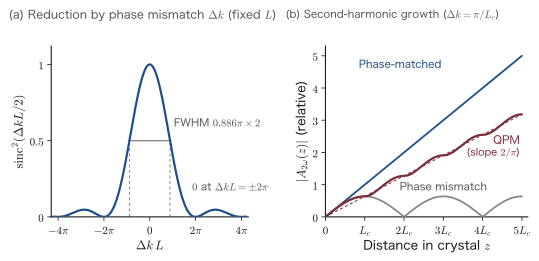
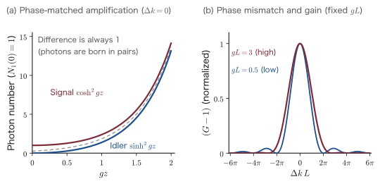
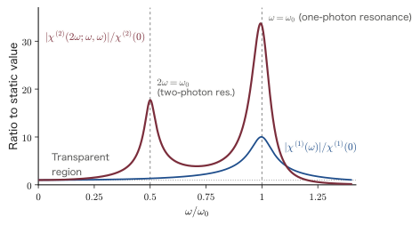
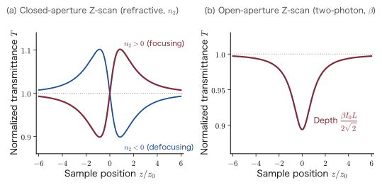
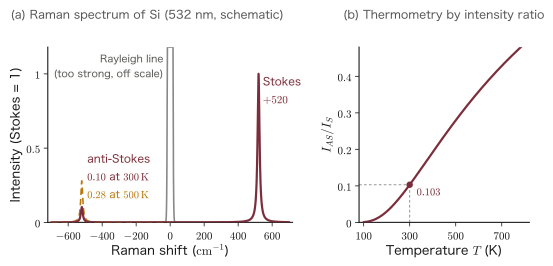

Chapter 26Nonlinear Optics in Semiconductors — From Second-Harmonic Generation to the Acousto-Optic Effect
A green laser pointer contains no material that glows green. Inside are a laser that emits infrared light (wavelength $1064\,\mathrm{nm}$) and a small transparent crystal ($\mathrm{KTiOPO_4}$, abbreviated KTP). When the infrared light passes through this crystal, two photons merge into a single photon of exactly twice the frequency and exactly half the wavelength, $532\,\mathrm{nm}$. This is second-harmonic generation (SHG), the representative example of nonlinear optics, the subject of this chapter. In everyday optics—lenses, prisms, eyeglasses—light does not change color as it passes through matter, and the beams of two crossed flashlights pass through each other without interacting. This is because the force that the electric field of light exerts on the electrons in matter is proportional to the displacement of the electrons (the polarization). If we pull a spring lightly, its extension is proportional to the force (Hooke's law), but if we pull it too hard, the proportionality fails. The intense light of a laser pulls the “springs” that bind the electrons to the point where the proportionality breaks down.
Once the proportionality breaks down, the polarization contains terms in the square and the cube of the electric field. From the square term arise the second harmonic, sum-frequency and difference-frequency generation, the optical parametric oscillator whose frequency can be chosen freely, and the Pockels effect, in which a voltage changes the refractive index (the modulator in optical fiber communication). From the cube term arise the Kerr effect, in which the refractive index changes with the light intensity, as well as self-phase modulation, self-focusing, and two-photon absorption. Furthermore, when the polarization is shaken by lattice vibrations or sound waves, Raman scattering and Brillouin scattering appear, in which the frequency of the scattered light is shifted, and the acousto-optic effect, which uses a sound wave as a diffraction grating, also appears. Raman spectroscopy is a tool for measuring the temperature and stress inside a Si LSI, and acousto-optic devices are indispensable in laser processing machines and laser-cooling apparatus. All of these can be understood by a single idea: either “the polarization is no longer proportional to the electric field of the light,” or “the polarization is modulated by another degree of freedom.”
The physics of this chapter rests on three pillars. The first is symmetry. In a crystal with inversion symmetry, the second-order nonlinear polarization vanishes identically (Neumann's principle of Chapter 4). This is why Si and Ge do not emit a second harmonic, whereas zinc-blende-type GaAs and $\mathrm{LiNbO_3}$ of point group $3m$ do. Which tensor components survive is also determined by the point group alone. The second is magnitude. By adding just one anharmonic term to the Lorentz oscillator of Chapter 19, we can derive the nonlinear susceptibility $\chi^{(2)}$ ($\chi$ is the Greek letter chi) completely, and we find that its magnitude is set by the electric field inside an atom, $\sim5\times10^{11}\,\mathrm{V/m}$, and that the order of magnitude is $d\sim\mathrm{pm/V}$. The third is phase matching. For the second harmonics generated at various places in the crystal to reinforce one another, the momentum (wavenumber) of the photons must be conserved. Birefringence and periodic poling are devices that all exist to satisfy this condition.
The linear response of matter to light (refractive index and absorption coefficient) is treated in Chapter 33, and in Chapter 25 we studied the laser as a light source. This chapter builds on both and deals with how intense light “converses” with matter. The elastic waves and phonons of Chapters 12 and 13, and the group theory of Raman activity of Chapters 10 and 11, are translated here into the language of optics. By the end of this chapter, you will be able to calculate for yourself the conversion efficiency of SHG, the coherence length and the period of quasi-phase matching, the lasing wavelength of an optical parametric oscillator (OPO), the nonlinear refractive index and the critical power for self-focusing, the temperature read from a Raman spectrum, the half-wave voltage of an electro-optic modulator, and the Bragg angle of an acousto-optic device. In Chapter 36, we remove the regularity of the crystal that we have assumed until now and treat electrons in disordered systems such as amorphous semiconductors and semiconductors with many impurities.
- The expansion of the nonlinear polarization $P=\epsilon_0(\chi^{(1)}\mathcal{E}+\chi^{(2)}\mathcal{E}^2+\chi^{(3)}\mathcal{E}^3+\cdots)$, the tensor $\chi^{(2)}_{ijk}$ (in units of m/V) and the contracted notation $d_{il}$, and Kleinman symmetry
- The proof that $\chi^{(2)}=0$ if there is inversion symmetry, and the nonzero components determined by the point group (for zinc blende only $d_{14}$; for $\mathrm{LiNbO_3}$, $d_{31},d_{22},d_{33}$)
- Deriving from the Maxwell equations the wave equation with the nonlinear polarization as its source term, and the coupled-wave equations (slowly varying amplitude approximation)
- The $\mathrm{sinc}^2$ characteristic of the second harmonic, the coherence length $L_c$, birefringent phase matching (type I/II) and quasi-phase matching ($\Lambda=2L_c$), and walk-off
- Three-wave mixing and the Manley–Rowe relations, the gain $\cosh^2 gz$ of optical parametric amplification, tuning of an OPO, and spontaneous parametric down-conversion and THz generation
- Completely deriving $\chi^{(1)}$ and $\chi^{(2)}$ from the anharmonic oscillator, and understanding Miller's rule, the order of magnitude $d\sim\mathrm{pm/V}$, and resonant enhancement
- The optical Kerr effect $n=n_0+n_2I$ and $n_2=3\chi^{(3)}/(4n_0^2\epsilon_0c)$, self-phase modulation, self-focusing, four-wave mixing, two-photon absorption, the Z-scan, and Kerr-lens mode locking
- Deriving Raman scattering and Brillouin scattering by both classical and quantum theory, and measuring the temperature from the Stokes/anti-Stokes ratio and the speed of sound from the Brillouin shift
- The index ellipsoid and the Pockels effect, the half-wave voltages of the longitudinal and transverse types, the Pockels cell and the Mach–Zehnder modulator, and the second-order electro-optic effect
- The photoelastic effect and the acousto-optic effect: the Raman–Nath regime and the Bragg regime, the Bragg condition, the diffraction efficiency and the figure of merit $M_2$, and the frequency shift and the AOM
26.1 Nonlinear Polarization — Symmetry Determines $\chi^{(2)}$
First, we fix the notation used throughout this chapter. Textbooks of nonlinear optics differ in their system of units and in their “amplitude convention,” so the same equation can differ by a factor of two or four from book to book. We decide the conventions once here and do not change them until the end of the chapter.
Notation: Symbols and amplitude convention used in Chapter 26
- SI units are used. The permittivity of vacuum is $\epsilon_0$ ($\epsilon$ is epsilon), the permeability of vacuum is $\mu_0$ ($\mu$ is mu), the speed of light in vacuum is $c$, and $\mu_0\epsilon_0=1/c^2$.
- Electric field: as agreed in Part IV, we write the vector as $\EE$ and its magnitude and components as $\mathcal{E}$ (script E), to distinguish it from the energy $E$ (such as $E_g$). Books on nonlinear optics often write the electric field as $E$, so please read the symbol accordingly when you consult other books. The polarization (dipole moment per unit volume, $\mathrm{C/m^2}$) is the vector $\bm{P}$, with components $P_i$.
- Frequency: $\omega$ (omega) is the angular frequency, related to the number of oscillations per second $f$ by $\omega=2\pi f$. In this chapter we also call $\omega$ the “frequency” for simplicity.
- Amplitude convention: a real electric field oscillating at frequency $\omega$ is written, using the complex amplitude $\mathcal{E}_\omega$, as $$\mathcal{E}(t)=\tfrac12\left(\mathcal{E}_\omega\ee^{-i\omega t}+\mathrm{c.c.}\right)=\abs{\mathcal{E}_\omega}\cos(\omega t-\varphi)\qquad(\mathcal{E}_\omega=\abs{\mathcal{E}_\omega}\ee^{i\varphi})$$ ($\varphi$ (phi) is the phase). $\mathrm{c.c.}$ is the complex conjugate of the preceding term. The factor $\ee^{-i\omega t}$ is the convention of physics (the same as in Chapter 33). The polarization is likewise written $P(t)=\tfrac12(P_\omega\ee^{-i\omega t}+\mathrm{c.c.})$, and $P_\omega$ is called the “complex amplitude of the polarization at frequency $\omega$.” With this convention, $\abs{\mathcal{E}_\omega}$ is directly the amplitude of the real electric field.
- Light intensity (the energy passing through unit area per unit time, $\mathrm{W/m^2}$) in a medium of refractive index $n$ is $I=\tfrac12n\epsilon_0c\abs{\mathcal{E}_\omega}^2$ (derived in Section 26.1.2).
- The nonlinear optical coefficient is $d=\chi^{(2)}/2$ (the same definition as in Boyd's textbook; in tensor form, $d_{ijk}=\chi^{(2)}_{ijk}/2$). Its unit is $\mathrm{pm/V}=10^{-12}\,\mathrm{m/V}$.
Notation: Symbols used with two or more meanings in this chapter
Nonlinear optics is a field in which the vocabularies of optics, solid-state physics, and communication engineering are mixed, so the same letter is often used with different meanings. In this chapter we use the conventional symbols as far as possible, and we collect the overlapping ones here. On a first reading, skip this box and go on to Section 26.1.1; come back to it when you are unsure of the meaning of a symbol.
- $n$: the refractive index (not the carrier density; the carrier density is written $N$ in Section 26.5. In Chapter 25 the refractive index was written $n_r$ to distinguish it from the electron density, but in this chapter we write $n$, as is customary in nonlinear optics). $n_0$ is the refractive index when the light is weak, $n_o$ and $n_e$ are the refractive indices of the ordinary and extraordinary rays (Section 26.2.5), and $n_1,n_2,n_3$ are the refractive indices of the three waves in Section 26.3. The $n_2$ of Section 26.5 (the nonlinear refractive index, unit $\mathrm{m^2/W}$) is a different quantity from the refractive index $n_2$ of the second wave in Section 26.3.
- $N$: the density of oscillators in Section 26.4, and the density of carriers in Section 26.5 (both in units of $\mathrm{m^{-3}}$). $N_1$ in Section 26.3 is the photon number of the signal wave, $N_q$ in Section 26.6 is the number of phonons (written with a capital letter to distinguish it from the refractive index $n$), and $N$ in Section 26.8.6 is the number of resolvable spots of a deflector.
- $a$: in Section 26.4, a constant expressing the strength of the anharmonicity (unit $\mathrm{s^{-2}m^{-1}}$); in Section 26.6, the lattice constant of the crystal (a length).
- $\alpha$ (alpha): the absorption coefficient in Section 26.5, and the polarizability in Section 26.6.
- $\beta$ (beta): the two-photon absorption coefficient in Section 26.5.6. The $\beta_2$ in Section 26.5.10 is the group-velocity dispersion of an optical fiber, a different quantity.
- $\gamma$ (gamma): the damping constant of the oscillator in Section 26.4 (unit $\mathrm{s^{-1}}$), and the nonlinear coefficient of an optical fiber in Sections 26.5.3 and 26.5.10 (unit $\mathrm{W^{-1}km^{-1}}$).
- $\Gamma$ (capital gamma): in Section 26.7, the phase difference between two polarizations (not the $\Gamma$ point of the Brillouin zone). The $\Gamma_{\rm SH}$ of Exercise 26.2 is a constant expressing the coupling strength.
- $\Lambda$ (capital lambda): the period of the polarization reversal in Section 26.2, and the wavelength of the sound wave in Section 26.8 (both are a “period of a diffraction grating”). The lowercase $\lambda$ (lambda) is the wavelength of light in vacuum.
- $d$: the nonlinear optical coefficient (unit $\mathrm{pm/V}$). In Section 26.7.5, however, it is also used for the spacing of the electrodes (a length); the two are distinguished by the presence or absence of subscripts.
- $D$: $D(\omega)$ in Section 26.4 is the denominator of the resonance, the boldface $\bm{D}$ is the electric displacement, and $D$ in Section 26.8.6 is the width of the light beam (a length).
- $P$: the polarization (unit $\mathrm{C/m^2}$). However, $P$, $P_{cr}$, $P_a$, and $P_0$ are also used for power (unit W).
- $Q$: the normal coordinate of the lattice vibration in Section 26.6, and the Klein–Cook parameter in Section 26.8. The Q of “Q switch” comes from the Q value of the cavity (a measure of how small the loss is) and is not a symbol.
- $r$: the electro-optic coefficient $r_{ijk}$ (with subscripts) in Section 26.7. $r_1,r_2$ in Section 26.3 are the amplitude reflectivities of the mirrors, and $r$ in Section 26.5.7 is the distance from the center of the beam.
- $R$: the matrix of a coordinate transformation in Section 26.1.4, and the Raman tensor in Section 26.6.3.
- $\rho$ (rho): the walk-off angle in Section 26.2.6, and the density in Sections 26.6 and 26.8 (unit $\mathrm{kg/m^3}$).
- $\kappa$ (kappa): the extinction coefficient in Section 26.5 (the imaginary part of the complex refractive index $n+i\kappa$), and a constant expressing the coupling strength of two waves in Sections 26.3 and 26.8.
- $\tau$ (tau): the pulse duration and the relaxation time of the Drude model in Section 26.5, and the time for the sound wave to cross the light beam in Section 26.8.
- $g$: the gain coefficient of optical parametric amplification in Section 26.3 (unit $\mathrm{m^{-1}}$). The $g_R$ in Section 26.6.5 is the Raman gain coefficient and the $g$ in Section 26.7.6 is the polarization-optic coefficient; both are different quantities.
- $m$: the mass of the electron. However, $m$ (an integer) is also used for the order of quasi-phase matching in Section 26.2.7 and for the order of diffraction in Section 26.8.3.
- $T$: the temperature. However, in Sections 26.5.7 and 26.7.4 it is the transmittance. The $T_0$ in Section 26.5.10 is the pulse duration.
- $H$: the boldface $\bm{H}$ is the magnetic field. The $H$ in Section 26.8.5 is the height of the sound wave (a length).
- $s$: $s(z)$ in Section 26.2.7 is a square wave taking the values $\pm1$, $s_{ijkl}$ in Section 26.7 is the second-order electro-optic coefficient, and the boldface $\bm{s}$ (Section 26.7.1) is the unit vector along the direction of propagation of the light.
- $\Omega$ (capital omega): the angular frequency of the phonon or sound wave. $S$: the strain (the $\epsilon_{ij}$ of Chapter 12 is easily confused with the permittivity, so we write $S_{ij}$ in this chapter).
- $\mathcal{E}$: $\mathcal{E}_\omega$ with the subscript $\omega$ is the complex amplitude at frequency $\omega$, while $\mathcal{E}(t)$ and $\mathcal{E}(z,t)$ are real electric fields (the convention above). The $A(z)$ in Sections 26.2 and 26.3 is the slowly varying part of the complex amplitude.
26.1.1 When the spring is stretched too far — the breakdown of linear optics
Light is a wave of electric and magnetic fields. When light enters a material, its electric field $\mathcal{E}$ pushes the electrons around the atomic nuclei, and the electron clouds are slightly displaced. Because the centers of the positive charge (the nucleus) and the negative charge (the electrons) are displaced from each other, the atom becomes a small electric dipole. The dipole moment per unit volume is the polarization $P$ (Chapter 19, Section 19.1; Introductory University Physics, Chapter 41, Section 41.1). We may think of an electron as being tied to the nucleus by a “spring.” As long as the electric field of the light is weak, the shift (displacement) is proportional to the force, and therefore the polarization is proportional to the electric field:
$$ P=\epsilon_0\chi^{(1)}\mathcal{E} $$The proportionality coefficient $\chi^{(1)}$ is the linear electric susceptibility, and it is related to the refractive index by $n^2=1+\chi^{(1)}$ (Chapter 33, Section 33.1). If the electric field oscillates at frequency $\omega$, the polarization also oscillates at the same frequency $\omega$, and the oscillating dipole emits light of the same frequency $\omega$. This is why the color of light does not change as it passes through a material.
If the spring is pulled hard, however, Hooke's law breaks down. The intense light of a laser pulls the spring that binds the electron to the point where proportionality fails. The polarization then acquires terms proportional to the square and the cube of the electric field. As the solid curve in Figure 26.1(a) shows, the response curve deviates from a straight line, and moreover the magnitude of the response differs between $+\mathcal{E}$ and $-\mathcal{E}$. In this case, even if a clean sinusoidal electric field is applied, the waveform of the polarization is distorted asymmetrically between top and bottom, as in Figure 26.1(b). When a distorted periodic function is decomposed into a Fourier series (Appendix A, Section A.1; Introductory University Physics, Chapter 17, Section 17.2), it contains, besides the component of the original frequency $\omega$, a component at $2\omega$ and a DC component. A dipole oscillating at $2\omega$ radiates light at $2\omega$. This is the second harmonic.
![(a) The response curve with the polarization P plotted as a function of the electric field. The dashed straight line is the linear response, and the solid curve is the response with a second-order term added; for a positive electric field it responds more strongly than the straight line, and for a negative electric field it responds more weakly. (b) The time waveform of the polarization when a sinusoidal electric field is applied. The polarization is distorted asymmetrically between top and bottom and contains a component of frequency 2ω (red dashed line) and a DC component (amber dotted line).](figs/ch26_fig26-1.svg)
Definition: Nonlinear polarization and nonlinear susceptibility
Expanding the polarization in a power series in the electric field, we write
We call $\chi^{(2)}$ the second-order and $\chi^{(3)}$ the third-order nonlinear susceptibility. The part other than $P^{(1)}$, $P^{NL}=P^{(2)}+P^{(3)}+\cdots$, is called the nonlinear polarization.
Units. Since $\epsilon_0\mathcal{E}$ has the same dimension as the electric displacement, $\mathrm{C/m^2}$, $\chi^{(1)}$ is dimensionless. For $P^{(2)}=\epsilon_0\chi^{(2)}\mathcal{E}^2$ also to be in $\mathrm{C/m^2}$, $\chi^{(2)}\mathcal{E}$ must be dimensionless; that is, the unit of $\chi^{(2)}$ is $\mathrm{m/V}$. Similarly, the unit of $\chi^{(3)}$ is $\mathrm{m^2/V^2}$.
Derivation: The second-order term produces DC and $2\omega$; the third-order term produces $3\omega$ and $\omega$
Let the electric field be $\mathcal{E}(t)=\mathcal{E}_0\cos\omega t$. Substituting into the second-order term and using the double-angle formula $\cos^2\theta=\tfrac12(1+\cos2\theta)$, we obtain
$$ P^{(2)}(t)=\epsilon_0\chi^{(2)}\mathcal{E}_0^2\cos^2\omega t =\underbrace{\tfrac12\epsilon_0\chi^{(2)}\mathcal{E}_0^2}_{\text{DC}} +\underbrace{\tfrac12\epsilon_0\chi^{(2)}\mathcal{E}_0^2\cos2\omega t}_{\text{frequency }2\omega} $$For the third-order term we use the triple-angle formula $\cos3\theta=4\cos^3\theta-3\cos\theta$, that is, $\cos^3\theta=\tfrac34\cos\theta+\tfrac14\cos3\theta$, to obtain
$$ P^{(3)}(t)=\epsilon_0\chi^{(3)}\mathcal{E}_0^3\cos^3\omega t =\underbrace{\tfrac34\epsilon_0\chi^{(3)}\mathcal{E}_0^3\cos\omega t}_{\text{frequency }\omega} +\underbrace{\tfrac14\epsilon_0\chi^{(3)}\mathcal{E}_0^3\cos3\omega t}_{\text{frequency }3\omega} $$∎ Listing what each term produces gives the following.
- The polarization at $2\omega$ → radiates light at $2\omega$: second-harmonic generation (Section 26.2).
- The DC polarization → when light is shone on the crystal, a DC voltage appears across it: optical rectification. With ultrashort pulses, this becomes the generation of THz waves (Section 26.3).
- The polarization at $3\omega$ → third-harmonic generation (Section 26.5).
- The addition $\tfrac34\epsilon_0\chi^{(3)}\mathcal{E}_0^2\cdot\mathcal{E}_0\cos\omega t$ to the polarization at $\omega$ → equivalent to the susceptibility changing to $\chi^{(1)}+\tfrac34\chi^{(3)}\mathcal{E}_0^2$. That is, the refractive index changes with the light intensity: the optical Kerr effect (Section 26.5).
26.1.2 A feeling for the size of the electric field — comparison with the field inside an atom
How fast does the expansion of Eq. \eqref{eq:26-Pexp} converge? A rough estimate is given by the ratio to the electric field that binds the electron to the nucleus—the electric field inside an atom. If the electric field of the light is small compared with this, the spring follows Hooke's law almost exactly.
Derivation: The intra-atomic field $\mathcal{E}_{at}\simeq5\times10^{11}\,\mathrm{V/m}$ and the light intensity $I=\tfrac12n\epsilon_0c\abs{\mathcal{E}_\omega}^2$
Step 1: Intra-atomic field. The electron of a hydrogen atom feels the Coulomb electric field of the proton at a distance equal to the Bohr radius $a_0=0.529\,\text{Å}$. Its magnitude is
$$ \begin{aligned} \mathcal{E}_{at}&=\frac{e}{4\pi\epsilon_0a_0^2} =\frac{1.602\times10^{-19}\,\mathrm{C}}{(1.113\times10^{-10}\,\mathrm{F/m})\times(5.292\times10^{-11}\,\mathrm{m})^2}\\ &=\frac{1.602\times10^{-19}}{1.113\times10^{-10}\times2.800\times10^{-21}}\ \mathrm{V/m} \end{aligned} $$ $$ =\frac{1.602\times10^{-19}}{3.116\times10^{-31}}\ \mathrm{V/m}=5.14\times10^{11}\ \mathrm{V/m} $$(We used $4\pi\epsilon_0=4\pi\times8.854\times10^{-12}=1.113\times10^{-10}\,\mathrm{F/m}$.) Valence electrons in a solid are also bound by an electric field of about the same order of magnitude.
Step 2: Light intensity and electric field. The time average of the energy flow (the Poynting vector) of a plane electromagnetic wave in vacuum is $\tfrac12\epsilon_0c\mathcal{E}_0^2$ (Introductory University Physics, Chapter 42, Section 42.5). In a medium of refractive index $n$, the energy density of the electric field becomes $\tfrac12\epsilon_0n^2\mathcal{E}^2$ and the speed of the wave becomes $c/n$; the energy density of the magnetic field is equal to that of the electric field, so
$$ I=\underbrace{2\times\tfrac12\epsilon_0n^2\overline{\mathcal{E}(t)^2}}_{\text{energy density of the electric and magnetic fields}}\times\underbrace{\frac{c}{n}}_{\text{speed}} =\epsilon_0nc\,\overline{\mathcal{E}_0^2\cos^2\omega t} =\epsilon_0nc\,\mathcal{E}_0^2\times\frac12 $$($\overline{\cos^2\omega t}=\tfrac12$ is the average over one period.) Since $\mathcal{E}_0=\abs{\mathcal{E}_\omega}$, we obtain
∎ The coefficient
$$ \epsilon_0c=8.854\times10^{-12}\times2.998\times10^{8}=2.654\times10^{-3}\,\mathrm{A/V} $$is convenient to remember.
Example 26.1: Electric fields of sunlight and a pulsed laser
Find the amplitudes of the electric field for (1) sunlight in vacuum ($I=1\,\mathrm{kW/m^2}$) and (2) a focused pulsed laser ($I=1\,\mathrm{GW/cm^2}$), and compare them with the intra-atomic field $\mathcal{E}_{at}$. (3) When the light of (2) enters GaAs (take $n=3.5$ and $d_{14}\sim1.7\times10^{2}\,\mathrm{pm/V}$), estimate the ratio of the amplitude of the polarization at $2\omega$, $\abs{P_{2\omega}}=\epsilon_0d\abs{\mathcal{E}_\omega}^2$, to the amplitude of the polarization at $\omega$, $\abs{P_\omega}=\epsilon_0\chi^{(1)}\abs{\mathcal{E}_\omega}$ (the expression for $P_{2\omega}$ is derived in Section 26.1.3).
Solution. (1) Setting $n=1$ in Eq. \eqref{eq:26-intensity},
$$ \abs{\mathcal{E}_\omega}=\sqrt{\frac{2\times10^{3}\,\mathrm{W/m^2}}{2.654\times10^{-3}\,\mathrm{A/V}}}=\sqrt{7.54\times10^{5}}\ \mathrm{V/m}=8.7\times10^{2}\ \mathrm{V/m} $$The ratio to $\mathcal{E}_{at}$ is $8.7\times10^{2}/5.14\times10^{11}=1.7\times10^{-9}$.
(2) Since $1\,\mathrm{GW/cm^2}=10^{9}\,\mathrm{W}/10^{-4}\,\mathrm{m^2}=10^{13}\,\mathrm{W/m^2}$,
$$ \abs{\mathcal{E}_\omega}=\sqrt{\frac{2\times10^{13}}{2.654\times10^{-3}}}\ \mathrm{V/m}=\sqrt{7.54\times10^{15}}\ \mathrm{V/m}=8.7\times10^{7}\ \mathrm{V/m} $$The ratio is $8.7\times10^{7}/5.14\times10^{11}=1.7\times10^{-4}$.
(3) In GaAs, $n=3.5$, so
$$ \abs{\mathcal{E}_\omega}=\sqrt{2\times10^{13}/(3.5\times2.654\times10^{-3})}=4.6\times10^{7}\,\mathrm{V/m} $$Since $\chi^{(1)}=n^2-1=11.3$,
$$ \frac{\abs{P_{2\omega}}}{\abs{P_\omega}}=\frac{d\abs{\mathcal{E}_\omega}}{\chi^{(1)}}=\frac{(1.7\times10^{-10}\,\mathrm{m/V})(4.6\times10^{7}\,\mathrm{V/m})}{11.3}=7\times10^{-4} $$∎ With sunlight the nonlinear term is only about $10^{-9}$ of the linear one and is completely invisible. This is why nonlinear optics did not become an experimental science until the invention of the laser in 1960. Even with a pulsed laser the second-order polarization is only $10^{-3}$–$10^{-4}$ of the first-order one, but, as we will see in Section 26.2, if the phases are kept aligned over the entire length of the crystal and the contributions are added up, several tens of percent of the incident light can be converted into the second harmonic.
From this we obtain a rough estimate of the magnitude of the nonlinear susceptibilities. If we assume that the second-order term becomes as large as the first-order term when $\mathcal{E}=\mathcal{E}_{at}$, then $\chi^{(2)}\mathcal{E}_{at}\sim\chi^{(1)}\sim1$, that is,
$$ \chi^{(2)}\sim\frac{\chi^{(1)}}{\mathcal{E}_{at}}\sim\frac{1}{5\times10^{11}\,\mathrm{V/m}}=2\times10^{-12}\ \mathrm{m/V},\qquad \chi^{(3)}\sim\frac{\chi^{(1)}}{\mathcal{E}_{at}^2}\sim4\times10^{-24}\ \mathrm{m^2/V^2} $$This is why $\mathrm{pm/V}$ ($10^{-12}\,\mathrm{m/V}$) is the natural unit for nonlinear optical coefficients. We will back up this estimate with the anharmonic oscillator model in Section 26.4.
26.1.3 $\chi^{(2)}$ as a tensor, and addition and subtraction of frequencies
Because the properties of a crystal depend on direction, both the electric field and the polarization must be treated as vectors. The $i$ component ($i=x,y,z$) of the second-order polarization can be written as a linear combination of products of two components of the electric field:
$$ P^{(2)}_i(t)=\epsilon_0\sum_{j=x,y,z}\sum_{k=x,y,z}\chi^{(2)}_{ijk}\,\mathcal{E}_j(t)\,\mathcal{E}_k(t) $$$\chi^{(2)}_{ijk}$ is a third-rank tensor with three indices, and it has $3\times3\times3=27$ components. The “rank” of a tensor is the number of its indices. A vector (components $E_i$) is a first-rank tensor with one index; a quantity represented by a matrix (for example, the susceptibility $\chi^{(1)}_{ij}$ of an anisotropic material) is a second-rank tensor with two indices; and with three indices the tensor is of third rank. How the components transform when the coordinate axes are rotated is summarized in Section A.7 of Appendix A. In $\chi^{(2)}_{ijk}$, $i$ indicates the direction of the polarization, and $j,k$ indicate the directions of the electric field. Since $\mathcal{E}_j\mathcal{E}_k=\mathcal{E}_k\mathcal{E}_j$, $\chi^{(2)}_{ijk}$ and $\chi^{(2)}_{ikj}$ cannot be distinguished, and we may take them to be equal (this is called intrinsic permutation symmetry). The number of independent components is thereby reduced to $3\times6=18$.
More precisely, when the frequencies $\omega_1$ and $\omega_2$ of the two electric fields are different, the frequencies are interchanged together with the indices, and we write $\chi^{(2)}_{ijk}(\omega_3;\omega_1,\omega_2)=\chi^{(2)}_{ikj}(\omega_3;\omega_2,\omega_1)$. The notation $\chi^{(2)}(\omega_3;\omega_1,\omega_2)$ means “the susceptibility that produces a polarization of frequency $\omega_3$ from electric fields of frequencies $\omega_1$ and $\omega_2$.” For the second harmonic, $\omega_1=\omega_2=\omega$, so we simply have $\chi^{(2)}_{ijk}=\chi^{(2)}_{ikj}$ ($d_{ijk}=d_{ikj}$).
Let us see what happens when light of two frequencies $\omega_1$ and $\omega_2$ is applied simultaneously. Here the complex-amplitude convention proves useful.
Derivation: Four kinds of frequencies generated from two light waves
For simplicity we write everything with a single component. Let the electric field be
$$ \mathcal{E}(t)=\tfrac12\left(\mathcal{E}_1\ee^{-i\omega_1t}+\mathcal{E}_2\ee^{-i\omega_2t}+\mathcal{E}_1^*\ee^{i\omega_1t}+\mathcal{E}_2^*\ee^{i\omega_2t}\right) $$Squaring this gives $4\times4=16$ products, each choosing two of the four terms. Adding the exponents and collecting terms by frequency, we get
$$ \mathcal{E}(t)^2=\frac14\Bigl[\mathcal{E}_1^2\ee^{-2i\omega_1t}+\mathcal{E}_2^2\ee^{-2i\omega_2t} +2\mathcal{E}_1\mathcal{E}_2\ee^{-i(\omega_1+\omega_2)t} +2\mathcal{E}_1\mathcal{E}_2^*\ee^{-i(\omega_1-\omega_2)t}+\mathrm{c.c.}\Bigr] +\frac12\left(\abs{\mathcal{E}_1}^2+\abs{\mathcal{E}_2}^2\right) $$(The cross term $\mathcal{E}_1\mathcal{E}_2$ carries a factor of 2 because there are two ways to choose it: “choose 1 first” and “choose 2 first.” Terms such as $\mathcal{E}_1\mathcal{E}_1^*$ do not depend on time.) We also write the polarization $P^{(2)}=\epsilon_0\chi^{(2)}\mathcal{E}^2$ in the form $P(t)=\tfrac12\sum_{\omega'}(P_{\omega'}\ee^{-i\omega' t}+\mathrm{c.c.})$ and compare the coefficients of the same frequency. For example, the coefficient of $\ee^{-2i\omega_1t}$ is $\tfrac12P_{2\omega_1}$ on the left-hand side and $\epsilon_0\chi^{(2)}\tfrac14\mathcal{E}_1^2$ on the right-hand side, so $P_{2\omega_1}=\tfrac12\epsilon_0\chi^{(2)}\mathcal{E}_1^2$. Rewriting with $d=\chi^{(2)}/2$, we obtain
$$ \begin{aligned} P(2\omega_1)&=\epsilon_0\,d\,\mathcal{E}_1^2 &&\text{second harmonic (SHG)}\\ P(\omega_1+\omega_2)&=2\epsilon_0\,d\,\mathcal{E}_1\mathcal{E}_2 &&\text{sum frequency (SFG)}\\ P(\omega_1-\omega_2)&=2\epsilon_0\,d\,\mathcal{E}_1\mathcal{E}_2^* &&\text{difference frequency (DFG)}\\ P(0)&=\epsilon_0\,d\left(\abs{\mathcal{E}_1}^2+\abs{\mathcal{E}_2}^2\right) &&\text{optical rectification (DC)} \end{aligned} $$(The DC component is real, so we wrote it as it stands instead of in the form $\tfrac12(P_0+\mathrm{c.c.})$.) ∎
Returning to tensor form, we obtain two equations that we will use repeatedly in this chapter:
The coefficient for SHG is half that for sum-frequency generation because the order in which the two “copies” of the same light wave are chosen cannot be distinguished (a degeneracy factor). A circuit that “mixes” two frequencies in a radio receiver to produce the sum and difference is called a mixer, and a second-order nonlinear crystal is a mixer for light.
Caution: The factor of 2 that differs from textbook to textbook
Boyd's textbook uses the convention $\mathcal{E}(t)=\mathcal{E}\ee^{-i\omega t}+\mathrm{c.c.}$, without the factor $\frac12$. This $\mathcal{E}$ is then half the amplitude used in this chapter, so the coefficients change, as in $P(2\omega)=2\epsilon_0d\mathcal{E}^2$ and $I=2n\epsilon_0c\abs{\mathcal{E}}^2$. However, $d$ itself ($\chi^{(2)}/2$) is the same physical quantity, and relations between intensities (for example, Eq. \eqref{eq:26-shg-I}) agree in either convention. The values of $d$ ($\mathrm{pm/V}$) in tables in the literature can be used as they are. Values in the older literature in Gaussian units (esu) are converted by $\chi^{(2)}[\mathrm{m/V}]=\dfrac{4\pi}{3\times10^{4}}\chi^{(2)}[\mathrm{esu}]$.
26.1.4 If there is inversion symmetry, $\chi^{(2)}=0$
This is the most important theorem in this chapter. Look at Figure 26.2. In a Si crystal, the midpoint of the bond connecting two neighboring Si atoms is an inversion center. The potential $U(x)$ felt by an electron is symmetric between left and right, and whether we apply an electric field $+\mathcal{E}$ or $-\mathcal{E}$, the electron is displaced by the same distance in the opposite direction. In the Ga–As bond of GaAs, on the other hand, the atoms at the two ends are different, so $U(x)$ is asymmetric between left and right, and the electron is displaced by a large amount toward the gentler side and by a small amount toward the steeper side. This “difference in response depending on direction” is the true nature of $\chi^{(2)}$.
Theorem 26.1: The second-order nonlinear susceptibility vanishes in a centrosymmetric crystal
In a crystal with an inversion center (a centrosymmetric crystal; the 11 point groups of Chapter 4), within the electric-dipole approximation (the approximation in which the polarization is expressed by electric dipoles alone; this whole chapter uses it), for every component and independently of the combination of frequencies,
holds. Therefore second-harmonic generation, sum-frequency generation, difference-frequency generation, optical rectification, and the Pockels effect (Section 26.7) all fail to occur. On the other hand, $\chi^{(1)}$ and $\chi^{(3)}$ do not vanish.
Derivation: From $\bm{P}\to-\bm{P}$ and $\EE\to-\EE$ under inversion
Argument 1 (physical reasoning). Suppose that a polarization $\bm{P}(\EE)$ is produced in a crystal to which an electric field $\EE$ is applied. Consider the situation obtained by inverting this whole situation—the crystal, the electric field, and the polarization—about the origin.
- The crystal, when inverted, is superposed on itself (this is the meaning of inversion symmetry).
- The electric field is a polar vector, so its direction is reversed by inversion: $\EE\to-\EE$. A polar vector is a vector whose sign changes under the inversion $\rr\to-\rr$, like the position vector $\rr$. The electric field is an arrow pointing from positive charge to negative charge, so if we invert space and move the positions of the charges to the opposite side of the origin, the direction of the arrow is also reversed (the magnetic field is an axial vector whose direction does not change under inversion, and it obeys a different rule; see the caution in Section 4.6.1 of Chapter 4 and Section 26.7.7).
- The polarization is also a polar vector (the direction of a dipole), so $\bm{P}\to-\bm{P}$.
The inverted situation says that “when the electric field $-\EE$ is applied to the same crystal, the polarization $-\bm{P}(\EE)$ is produced.” Since the laws of physics are unchanged by inversion, this means $\bm{P}(-\EE)=-\bm{P}(\EE)$; that is, the polarization is an odd function of the electric field. Substituting into both sides of Eq. \eqref{eq:26-Pexp} gives
$$ \begin{aligned} &\bm{P}(-\EE):\ \ \epsilon_0\left(-\chi^{(1)}\mathcal{E}+\chi^{(2)}\mathcal{E}^2-\chi^{(3)}\mathcal{E}^3+\cdots\right),\\ &-\bm{P}(\EE):\ \ \epsilon_0\left(-\chi^{(1)}\mathcal{E}-\chi^{(2)}\mathcal{E}^2-\chi^{(3)}\mathcal{E}^3-\cdots\right) \end{aligned} $$For the two to be equal for arbitrary $\mathcal{E}$, the coefficients of even order must satisfy $\chi^{(2)}=-\chi^{(2)}$, that is, $\chi^{(2)}=0$. The same holds when we write it with tensors: $P_i^{(2)}(-\EE)=\epsilon_0\sum\chi^{(2)}_{ijk}(-\mathcal{E}_j)(-\mathcal{E}_k)=+P_i^{(2)}(\EE)$ must equal $-P_i^{(2)}(\EE)$, from which $\chi^{(2)}_{ijk}=0$ follows. The odd-order $\chi^{(1)}$ and $\chi^{(3)}$ are subject to no constraint whatsoever.
Argument 2 (Neumann's principle). This is exactly the method of Section 4.6 of Chapter 4. A third-rank tensor transforms under a coordinate transformation $R$ as $\chi'_{ijk}=\sum_{lmn}R_{il}R_{jm}R_{kn}\chi_{lmn}$. Since inversion has $R_{il}=-\delta_{il}$,
$$ \chi'_{ijk}=(-1)^3\chi_{ijk}=-\chi_{ijk} $$By Neumann's principle, a material tensor must be invariant under the symmetry operations of the crystal: $\chi'_{ijk}=\chi_{ijk}$. From the two equations, $\chi_{ijk}=-\chi_{ijk}$, and hence $\chi_{ijk}=0$. The fourth-rank tensor $\chi^{(3)}$ is multiplied by $(-1)^4=+1$, so it is not constrained. ∎
In Chapter 4 we used the same argument to show that a centrosymmetric crystal has no piezoelectricity. The piezoelectric tensor and $\chi^{(2)}$ are both “odd-rank polar tensors.” Of the 32 point groups, 21 lack an inversion center, but in one of them, $432$, $\chi^{(2)}_{ijk}$ becomes antisymmetric in the last two indices ($\chi_{ijk}=-\chi_{ikj}$), so no symmetric part that contributes to SHG remains. Therefore the point groups that can produce SHG number 20, the same as for piezoelectricity. In the transparent region, where the Kleinman symmetry discussed later holds, SHG also vanishes for $422$ and $622$.
Example 26.2: Crystals that produce a second harmonic and crystals that do not
Which of the following materials can produce a second harmonic in the bulk (the interior of the crystal)? Decide from the point group. (1) Si (diamond structure, $m\bar3m$), (2) GaAs (zinc-blende type, $\bar43m$), (3) NaCl ($m\bar3m$), (4) $\alpha$-quartz ($32$), (5) ZnO (wurtzite type, $6mm$), (6) fused silica, (7) the cubic phase of $\mathrm{BaTiO_3}$ ($m\bar3m$, above $393\,\mathrm{K}=120\,^\circ\mathrm{C}$) and its tetragonal phase ($4mm$, room temperature). (8) The interior of a Si crystal does not produce a second harmonic, yet a second harmonic is produced at the interface between Si and $\mathrm{SiO_2}$. Explain the reason from symmetry.
Solution. We check for the presence of an inversion center in the table of Chapter 4. (1) Si: $m\bar3m$ has an inversion center → no second harmonic. (2) GaAs: $\bar43m$ has no inversion center and is not $432$ → a second harmonic is produced. (3) NaCl: no second harmonic. (4) Quartz: $32$ has no inversion center → a second harmonic is produced (it was in quartz that Franken first observed SHG, in 1961). (5) ZnO: $6mm$ is a polar point group → a second harmonic is produced. (6) Fused silica: the arrangement of atoms is disordered, but averaged over orientations it is isotropic, and an isotropic medium is invariant under all rotations and reflections, including inversion → no second harmonic (this is why second-order effects do not occur in glass optical fibers). (7) $\mathrm{BaTiO_3}$: the cubic phase produces none, and the tetragonal phase produces a second harmonic. (8) At the interface, along the direction perpendicular to the interface one side is Si and the other side is $\mathrm{SiO_2}$, which differ, so under inversion $\rr\to-\rr$ the interface does not coincide with itself. If we extract only the few atomic layers at the interface, the structure has no inversion center (it is polar), and there $\chi^{(2)}\ne0$ is allowed. However, only a layer about $1\,\mathrm{nm}$ thick produces the second harmonic, so the signal is weak.
∎ Case (7) is also important in practice. When inversion symmetry is broken at a ferroelectric transition, SHG appears, and its intensity is proportional to the square of the spontaneous polarization $P_s$ (the order parameter of Chapter 19, Section 19.7). SHG is the most sensitive probe of whether inversion symmetry is broken, and it is actually used for the “determination of centrosymmetry” described in Chapter 4, Section 4.6.2 and Chapter 5, Section 5.5.2. As in case (8), a weak SHG is emitted from surfaces and interfaces, where inversion symmetry is broken even in Si, so SHG makes it possible to select and study only the $\mathrm{Si/SiO_2}$ interface. Note also that Theorem 26.1 is a conclusion within the electric-dipole approximation; if contributions from the electric quadrupole and the magnetic dipole are taken into account, a very weak SHG comes out even from the bulk of a centrosymmetric crystal (in Si this bulk contribution can be comparable to the surface contribution).
Supplement: Breaking inversion symmetry with a DC electric field — electric-field-induced SHG
Even in a centrosymmetric material, applying a DC electric field $\mathcal{E}_{dc}$ breaks the inversion symmetry from the outside. Substituting $\mathcal{E}(t)=\mathcal{E}_{dc}+\tfrac12(\mathcal{E}_\omega\ee^{-i\omega t}+\mathrm{c.c.})$ into the third-order term $\epsilon_0\chi^{(3)}\mathcal{E}^3$, we find that the expansion of $\mathcal{E}^3$ contains a term $3\times\mathcal{E}_{dc}\times\tfrac14\mathcal{E}_\omega^2\ee^{-2i\omega t}$ (three ways, according to which of the three factors is the DC one). Comparing the coefficient of $\ee^{-2i\omega t}$ with $\tfrac12P_{2\omega}$ on the left-hand side gives $P_{2\omega}=2\times\tfrac34\epsilon_0\chi^{(3)}\mathcal{E}_{dc}\mathcal{E}_\omega^2=\tfrac32\epsilon_0\chi^{(3)}\mathcal{E}_{dc}\mathcal{E}_\omega^2$, and comparing this with $P_{2\omega}=\tfrac12\epsilon_0\chi^{(2)}_{\rm eff}\mathcal{E}_\omega^2$ we obtain
$$ \chi^{(2)}_{\rm eff}=3\chi^{(3)}\mathcal{E}_{dc} $$as the effective second-order susceptibility that arises. This is called electric-field-induced second harmonic generation (EFISH). The built-in electric fields of the depletion layer of a semiconductor pn junction and of a MOS interface act in the same way, so SHG also serves as a means of measuring the electric field at an interface optically.
26.1.5 Contracted notation $d_{il}$ and Kleinman symmetry
In SHG we have $d_{ijk}=d_{ikj}$, so the pair of the last two indices $(jk)$ can be combined into a single index $l=1,\dots,6$. The rule is the same as the Voigt notation for the elastic constants (A.7.3 of Appendix A, Chapter 12, Section 12.7):
| $jk$ | $xx$ | $yy$ | $zz$ | $yz=zy$ | $zx=xz$ | $xy=yx$ |
|---|---|---|---|---|---|---|
| $l$ | 1 | 2 | 3 | 4 | 5 | 6 |
The first index $i=x,y,z$ is written as $1,2,3$. For example, $d_{xyz}=d_{xzy}\equiv d_{14}$, $d_{zxx}\equiv d_{31}$, and $d_{zzz}\equiv d_{33}$. Writing out the SHG expression of Eq. \eqref{eq:26-P2} in components, the $x$ component, for example, is
$$ \frac{P_x(2\omega)}{\epsilon_0}=d_{xxx}\mathcal{E}_x^2+d_{xyy}\mathcal{E}_y^2+d_{xzz}\mathcal{E}_z^2 +\underbrace{(d_{xyz}+d_{xzy})}_{=2d_{14}}\mathcal{E}_y\mathcal{E}_z +\underbrace{(d_{xzx}+d_{xxz})}_{=2d_{15}}\mathcal{E}_z\mathcal{E}_x +\underbrace{(d_{xxy}+d_{xyx})}_{=2d_{16}}\mathcal{E}_x\mathcal{E}_y $$The factor 2 on the cross terms arises because the same $d$ appears twice, as $(jk)$ and as $(kj)$. Writing the three components together as a matrix, we have
(All the $\mathcal{E}$ on the right-hand side are complex amplitudes at frequency $\omega$.) The $3\times6=18$ quantities $d_{il}$ are the maximum number of independent components.
Definition: Kleinman symmetry
When all the frequencies involved ($\omega$ and $2\omega$) lie in the transparent region, sufficiently far from the absorption (resonances) of the material, $\chi^{(2)}_{ijk}$ may be regarded as equal under any permutation of the three indices (Kleinman, 1962). That is, $d_{ijk}=d_{jik}=d_{kji}=\cdots$.
The reason is as follows. In a medium with neither loss nor dispersion, the polarization is given by the derivative $P_i=-\partial U/\partial\mathcal{E}_i$ of the energy density $U=-\epsilon_0\bigl(\tfrac12\sum\chi^{(1)}_{ij}\mathcal{E}_i\mathcal{E}_j+\tfrac13\sum\chi^{(2)}_{ijk}\mathcal{E}_i\mathcal{E}_j\mathcal{E}_k+\cdots\bigr)$. Since $\mathcal{E}_i\mathcal{E}_j\mathcal{E}_k$ does not change under permutation of the indices, only the totally symmetric part of $\chi_{ijk}$ contributes to $U$.
Using Kleinman symmetry, we obtain, for example, $d_{14}$ ($=d_{xyz}$) $=d_{25}$ ($=d_{yzx}$) $=d_{36}$ ($=d_{zxy}$), $d_{15}$ ($=d_{xzx}$) $=d_{31}$ ($=d_{zxx}$), $d_{24}=d_{32}$, $d_{12}=d_{26}$, and so on, and the number of independent components is reduced to the number of combinations of $3$ indices, that is, at most 10.
26.1.6 Nonzero components determined by the crystal symmetry
Applying Neumann's principle to all the symmetry operations of the point group determines which $d_{il}$ survive. Let us actually carry this out for the zinc-blende type (GaAs, InP, GaP, ZnSe, and so on), which is the most important for semiconductors.
Example 26.3: Nonzero $d$ components of GaAs ($\bar43m$)
The point group of the zinc-blende type, $T_d=\bar43m$, contains the twofold rotations $C_2$ about the three axes ($x,y,z$) of the cube, the fourfold rotoinversions $S_4$ about the same axes, the threefold rotations $C_3$ about the body diagonals $[111]$ and so on, and the reflections in the $\{110\}$ planes. (1) Show that the only nonzero $d_{ijk}$ are those of the $d_{xyz}$ type (those in which each of $x,y,z$ appears once), that they are all equal, and that only one of them, $d_{14}=d_{25}=d_{36}$, is independent. (2) Find $\bm{P}(2\omega)$ for electric fields along the crystal axes, $\EE\parallel[001]$, $\EE\parallel[110]$, and $\EE\parallel[111]$.
Solution. (1) Use the twofold axes. The $C_2$ about the $z$ axis is $(x,y,z)\to(-x,-y,z)$. The components $d_{ijk}$ of a third-rank tensor transform in the same way as the products of coordinates $x_ix_jx_k$, so a component whose indices contain $x$ $n_x$ times and $y$ $n_y$ times is multiplied by $(-1)^{n_x+n_y}$. For it to be invariant, $n_x+n_y$ must be even. Similarly, the $C_2$ about the $x$ axis requires $n_y+n_z$ to be even, and the $C_2$ about the $y$ axis requires $n_z+n_x$ to be even. We examine all the triples with $n_x+n_y+n_z=3$:
- $(3,0,0)$ ($d_{xxx}$ and so on): $n_x+n_y=3$ is odd → $0$.
- $(2,1,0)$ ($d_{xxy}$ and so on): $n_x+n_y=3$ → $0$. $(2,0,1)$ ($d_{xxz}$ and so on): $n_y+n_z=1$ → $0$. For the other permutations too, one of the sums is odd → $0$.
- $(1,1,1)$ ($d_{xyz}$ and so on): $n_x+n_y=n_y+n_z=n_z+n_x=2$ are all even → survives.
What remains are the six components $d_{xyz},d_{xzy},d_{yzx},d_{yxz},d_{zxy},d_{zyx}$. Use the threefold axes. The $C_3$ about $[111]$ permutes the coordinates cyclically, $(x,y,z)\to(y,z,x)$, so $d_{xyz}=d_{yzx}=d_{zxy}$ and $d_{xzy}=d_{yxz}=d_{zyx}$. Use $S_4$. The $S_4$ about the $z$ axis is $(x,y,z)\to(y,-x,-z)$. In the transformation law $d'_{ijk}=\sum R_{il}R_{jm}R_{kn}d_{lmn}$, since $R$ gives $x'=y$, $y'=-x$, $z'=-z$, we have
$$ d'_{xyz}=(+1)(-1)(-1)\,d_{yxz}=d_{yxz} $$From the invariance $d'_{xyz}=d_{xyz}$ we get $d_{xyz}=d_{yxz}$. This connects the two sets, so all six are equal. In the contracted notation, $d_{14}=d_{25}=d_{36}$ ($d_{xyz}=d_{yzx}=d_{zxy}$), and there is one independent component. Note that this conclusion follows from the point group alone, without assuming Kleinman symmetry. The matrix of Eq. \eqref{eq:26-dmatrix} is
$$ \begin{aligned} &d(\bar43m)=\begin{pmatrix}0&0&0&d_{14}&0&0\\0&0&0&0&d_{14}&0\\0&0&0&0&0&d_{14}\end{pmatrix}\\ &\Longrightarrow\quad P_x=2\epsilon_0d_{14}\mathcal{E}_y\mathcal{E}_z,\ \ P_y=2\epsilon_0d_{14}\mathcal{E}_z\mathcal{E}_x,\ \ P_z=2\epsilon_0d_{14}\mathcal{E}_x\mathcal{E}_y \end{aligned} $$(2) $\EE\parallel[001]$: $\mathcal{E}_x=\mathcal{E}_y=0$, so $\bm{P}(2\omega)=0$.
$\EE\parallel[110]$: $\mathcal{E}_x=\mathcal{E}_y=\mathcal{E}/\sqrt2$ and $\mathcal{E}_z=0$, so $P_x=P_y=0$ and $P_z=2\epsilon_0d_{14}(\mathcal{E}/\sqrt2)^2=\epsilon_0d_{14}\mathcal{E}^2$. The polarization points along $[001]$ and is orthogonal to the electric field.
$\EE\parallel[111]$: $\mathcal{E}_x=\mathcal{E}_y=\mathcal{E}_z=\mathcal{E}/\sqrt3$, so $P_x=P_y=P_z=2\epsilon_0d_{14}\mathcal{E}^2/3$. The polarization points along $[111]$, and its magnitude is $\abs{\bm{P}}=\sqrt3\times\tfrac23\epsilon_0d_{14}\mathcal{E}^2=\tfrac{2}{\sqrt3}\epsilon_0d_{14}\mathcal{E}^2=1.15\,\epsilon_0d_{14}\mathcal{E}^2$.
∎ Commercially available GaAs wafers usually have a $(001)$ surface. When light enters perpendicular to this surface, the electric field lies in the $xy$ plane, so only $P_z=2\epsilon_0d_{14}\mathcal{E}_x\mathcal{E}_y$ is produced. This is a dipole pointing along the propagation direction of the light ($z$), and a dipole does not radiate along its own axis. Therefore even at normal incidence on the $(001)$ surface, no second harmonic is emitted in the forward direction. To perform SHG in GaAs, one uses a $(111)$ or $(110)$ surface, or lets the light enter obliquely. Knowing the form of the tensor determines the experimental geometry in this way.
For the other representative nonlinear-optical crystals as well, we summarize the results in a table. The matrix for the point group $3m$ of $\mathrm{LiNbO_3}$ (lithium niobate) is
$$ d(3m)=\begin{pmatrix}0&0&0&0&d_{15}&-d_{22}\\-d_{22}&d_{22}&0&d_{15}&0&0\\d_{31}&d_{31}&d_{33}&0&0&0\end{pmatrix}\qquad(\text{for Kleinman symmetry }d_{15}=d_{31}) $$of the form (the coordinates are chosen so that $z$ is the threefold axis = the optic axis and the $x$ axis is perpendicular to a mirror plane; for the derivation see Exercise 26.1), and the independent components are the three, $d_{31}$, $d_{22}$, and $d_{33}$.
| Crystal | Point group | Nonzero components (assuming Kleinman symmetry) | Typical magnitude ($\mathrm{pm/V}$, approximate) | Transparent wavelength range (rough estimate) |
|---|---|---|---|---|
| GaAs (zinc blende) | $\bar43m$ | $d_{14}=d_{25}=d_{36}$ | $d_{14}\sim10^{2}$ (about 90–170 depending on the wavelength) | $0.9$–$17\,\mu\mathrm{m}$ |
| $\mathrm{LiNbO_3}$ | $3m$ | $d_{31}=d_{32}=d_{15}=d_{24}$, $d_{33}$, $d_{22}=-d_{21}=-d_{16}$ | $d_{33}\approx27$, $d_{31}\approx4.5$, $d_{22}\approx2$ | $0.4$–$5\,\mu\mathrm{m}$ |
| $\mathrm{KTiOPO_4}$ (KTP) | $mm2$ | $d_{31}=d_{15}$, $d_{32}=d_{24}$, $d_{33}$ | $d_{33}\approx15$ (effective value for $1064\to532\,\mathrm{nm}$: $d_{\rm eff}\approx3$) | $0.35$–$4.5\,\mu\mathrm{m}$ |
| $\mathrm{KH_2PO_4}$ (KDP) | $\bar42m$ | $d_{14}=d_{25}=d_{36}$ | $d_{36}\approx0.39$ | $0.2$–$1.5\,\mu\mathrm{m}$ |
| $\beta$-$\mathrm{BaB_2O_4}$ (BBO) | $3m$ | Same form as $\mathrm{LiNbO_3}$: $d_{22}=-d_{21}=-d_{16}$, $d_{31}=d_{32}=d_{15}=d_{24}$, $d_{33}$ ($d_{31}$ and $d_{33}$ are much smaller than $d_{22}$) | $d_{22}\approx2.2$ | $0.19$–$3.5\,\mu\mathrm{m}$ |
| $\alpha$-$\mathrm{SiO_2}$ (quartz) | $32$ | $d_{11}=-d_{12}=-d_{26}$ ($d_{14}=-d_{25}$ is $0$ by Kleinman symmetry) | $d_{11}\approx0.3$ | $0.15$–$4\,\mu\mathrm{m}$ |
Two things can be read from the table. First, the $d$ of semiconductors is one to two orders of magnitude larger than that of oxides. The $d_{14}$ of GaAs is several hundred times the $d_{36}$ of KDP. The reason can be understood from Miller's rule in Section 26.4 ($d$ is roughly proportional to $(n^2-1)^3$, so semiconductors with a large refractive index are at an advantage). Second, the reason that $\mathrm{LiNbO_3}$, KTP, and BBO are nevertheless used for practical wavelength conversion is that GaAs absorbs visible light and, being cubic and having no birefringence, cannot achieve phase matching (next section). Making a large $d$ compatible with phase matching becomes possible for the first time with the idea of quasi-phase matching (QPM; Section 26.2.7) in the next section.
26.1.7 The wave equation with the nonlinear polarization as the source term
By itself, a nonlinear polarization is not light. The oscillation of the polarization generates a new light wave, and that wave propagates through the crystal; we follow this whole process step by step from the Maxwell equations (we only add a polarization term to the derivation of the electromagnetic wave equation in Introductory University Physics, Chapter 42, Section 42.3).
Derivation: $\nabla^2\EE-\dfrac{n^2}{c^2}\dfrac{\partial^2\EE}{\partial t^2}=\mu_0\dfrac{\partial^2\bm{P}^{NL}}{\partial t^2}$
Step 1: Maxwell equations. In a transparent dielectric with no free charge and no conduction current,
$$ \nabla\times\EE=-\frac{\partial\BB}{\partial t},\qquad \nabla\times\bm{H}=\frac{\partial\bm{D}}{\partial t},\qquad \bm{D}=\epsilon_0\EE+\bm{P},\qquad \BB=\mu_0\bm{H} $$(We have assumed a nonmagnetic material.)
Step 2: Take the rotation once more. Take the rotation of both sides of the first equation and use the second equation:
$$ \nabla\times(\nabla\times\EE)=-\frac{\partial}{\partial t}\nabla\times\BB=-\mu_0\frac{\partial}{\partial t}\nabla\times\bm{H}=-\mu_0\frac{\partial^2\bm{D}}{\partial t^2} $$Step 3: Vector identity. $\nabla\times(\nabla\times\EE)=\nabla(\nabla\cdot\EE)-\nabla^2\EE$. For a transverse wave such as light we may set $\nabla\cdot\EE\simeq0$. The reason is as follows. Since there is no free charge, $\nabla\cdot\bm{D}=0$. In an isotropic medium we can write $\bm{D}=\epsilon_0n^2\EE+\bm{P}^{NL}$, as in Step 4 below, so that $\nabla\cdot\EE=-\nabla\cdot\bm{P}^{NL}/(\epsilon_0n^2)$. If the response is purely linear ($\bm{P}^{NL}=0$), this is exactly $0$; even when a nonlinear polarization is present, it is $0$ if the polarization is perpendicular (transverse) to the direction of propagation, and even if it is not, it is small and negligible for a plane wave whose amplitude varies slowly (the slowly varying amplitude approximation of Section 26.2.2). A small remainder survives even in an anisotropic crystal, but we neglect it here. Then
$$ -\nabla^2\EE=-\mu_0\frac{\partial^2\bm{D}}{\partial t^2} $$Step 4: Split the polarization into linear and nonlinear parts. Writing $\bm{P}=\epsilon_0\chi^{(1)}\EE+\bm{P}^{NL}$, we have $\bm{D}=\epsilon_0(1+\chi^{(1)})\EE+\bm{P}^{NL}=\epsilon_0n^2\EE+\bm{P}^{NL}$. Substituting and using $\mu_0\epsilon_0=1/c^2$, we obtain
Step 5: Separate by frequency. In reality $n$ depends on the frequency (dispersion). We therefore decompose the electric field and the nonlinear polarization into frequency components and write $\EE=\tfrac12\sum_m(\EE_m\ee^{-i\omega_mt}+\mathrm{c.c.})$ and $\bm{P}^{NL}=\tfrac12\sum_m(\bm{P}^{NL}_m\ee^{-i\omega_mt}+\mathrm{c.c.})$. Since $\partial^2/\partial t^2$ simply multiplies $\ee^{-i\omega_mt}$ by $-\omega_m^2$, for each frequency
$$ \nabla^2\EE_m+\frac{n(\omega_m)^2\omega_m^2}{c^2}\EE_m=-\mu_0\omega_m^2\bm{P}^{NL}_m $$holds. ∎ The left-hand side is the equation of a wave propagating in a medium of refractive index $n(\omega_m)$, and the right-hand side is the source term of that wave.
Physical Meaning: The whole crystal becomes an “array of antennas”
Eq. \eqref{eq:26-wave} has the same form as the equation of forced oscillation, $\ddot x+\omega_0^2x=F(t)/m$. The left-hand side is “a wave that, if left alone, would propagate as light of refractive index $n$,” and the right-hand side is “the driving force applied from outside.” When the fundamental wave (frequency $\omega$) travels through the crystal, dipoles oscillating at $2\omega$ are generated one after another along its path. Each of them radiates light at $2\omega$ as a small antenna. The question is whether the phases of the $2\omega$ light emitted from the various places in the crystal line up. If they do, the light grows stronger and stronger with the length of the crystal; if they do not, the contributions cancel one another. Of the three components of nonlinear optics—creating the polarization ($\chi^{(2)}$), creating the wave (the Maxwell equations), and bringing the waves into step (phase matching)—we have prepared the first two in this section. The third is the subject of the next section.
26.2 Second Harmonic — The Phase-Matching Condition
26.2.1 Franken's experiment (1961)
In 1960 Maiman made a ruby laser (wavelength $694.3\,\mathrm{nm}$) lase. The following year, Franken, Hill, Peters, and Weinreich of the University of Michigan focused pulses of the ruby laser onto a plate of quartz ($\alpha$-quartz) and photographed the emerging light with a spectrograph. In addition to a strong image at $694.3\,\mathrm{nm}$, the plate showed a faint image at exactly half the wavelength, $347.2\,\mathrm{nm}$ (ultraviolet). This was the first observation of the second harmonic. The conversion efficiency was only about $10^{-8}$. Today, however, the same principle can convert more than 50 % of the incident light into the second harmonic. What made the difference between $10^{-8}$ and $0.5$ is phase matching, which we derive in this section.
26.2.2 Derivation of the coupled-wave equations — the slowly varying amplitude approximation
Suppose that the fundamental wave (frequency $\omega$) and the second harmonic ($2\omega$) are plane waves traveling in the $z$ direction, and consider that their amplitudes vary slowly with $z$.
Derivation: $\dfrac{\dd A_{2\omega}}{\dd z}=\dfrac{i\omega d_{\rm eff}}{n_{2\omega}c}A_\omega^2\ee^{i\Delta kz}$
Step 1: Fix the form of the waves. We write each of the two waves as the product of a slowly varying amplitude $A(z)$ and a rapidly oscillating factor. The real electric field in the crystal is
$$ \mathcal{E}(z,t)=\tfrac12\left[A_\omega(z)\ee^{i(k_\omega z-\omega t)}+A_{2\omega}(z)\ee^{i(k_{2\omega}z-2\omega t)}+\mathrm{c.c.}\right] $$and the complex amplitudes in the convention of Section 26.1 correspond to $\mathcal{E}_\omega=A_\omega(z)\ee^{ik_\omega z}$ and $\mathcal{E}_{2\omega}=A_{2\omega}(z)\ee^{ik_{2\omega}z}$. The wavenumbers are $k_\omega=n_\omega\omega/c$ and $k_{2\omega}=n_{2\omega}\cdot2\omega/c$ (with $n_\omega\equiv n(\omega)$ and $n_{2\omega}\equiv n(2\omega)$). Once the polarization directions and the crystal orientation are fixed, the matrix of Eq. \eqref{eq:26-dmatrix} reduces the coefficients that act in that configuration to a single number. This is called the effective nonlinear optical coefficient $d_{\rm eff}$ (for example, for GaAs in Example 26.3 with $\EE\parallel[111]$, $d_{\rm eff}=\tfrac{2}{\sqrt3}d_{14}$).
Step 2: Source term. From Eq. \eqref{eq:26-P2}, the complex amplitude of the nonlinear polarization at $2\omega$ is
$$ P^{NL}_{2\omega}(z)=\epsilon_0d_{\rm eff}\left[A_\omega(z)\ee^{ik_\omega z}\right]^2=\epsilon_0d_{\rm eff}A_\omega^2\ee^{2ik_\omega z} $$Step 3: Insert into the wave equation. In the frequency-by-frequency equation of Section 26.1.7, set $\omega_m=2\omega$ and substitute the complex amplitude $A_{2\omega}\ee^{ik_{2\omega}z}$ of $\EE_{2\omega}$. Differentiating twice with respect to $z$, by the product rule we obtain
$$ \frac{\dd^2}{\dd z^2}\left(A_{2\omega}\ee^{ik_{2\omega}z}\right) =\left(\frac{\dd^2A_{2\omega}}{\dd z^2}+2ik_{2\omega}\frac{\dd A_{2\omega}}{\dd z}-k_{2\omega}^2A_{2\omega}\right)\ee^{ik_{2\omega}z} $$Step 4: Slowly varying amplitude approximation. The amplitude hardly changes over a distance of about one wavelength: $\abs{\dd^2A/\dd z^2}\ll\abs{k\,\dd A/\dd z}$. We therefore drop the first term. This is called the slowly varying amplitude approximation. Moreover, the term $-k_{2\omega}^2A_{2\omega}$ exactly cancels the term $+\frac{n_{2\omega}^2(2\omega)^2}{c^2}A_{2\omega}$ of the wave equation (because $k_{2\omega}=n_{2\omega}2\omega/c$). What remains is
$$ 2ik_{2\omega}\frac{\dd A_{2\omega}}{\dd z}\ee^{ik_{2\omega}z}=-\mu_0(2\omega)^2\,\epsilon_0d_{\rm eff}A_\omega^2\ee^{2ik_\omega z} $$Step 5: Tidy up. Divide both sides by $2ik_{2\omega}\ee^{ik_{2\omega}z}$ and use $\mu_0\epsilon_0=1/c^2$ and $k_{2\omega}=2\omega n_{2\omega}/c$:
$$ \frac{\dd A_{2\omega}}{\dd z}=\frac{-4\omega^2d_{\rm eff}}{2ik_{2\omega}c^2}A_\omega^2\ee^{i(2k_\omega-k_{2\omega})z} =\frac{4i\omega^2d_{\rm eff}}{2\cdot(2\omega n_{2\omega}/c)\cdot c^2}A_\omega^2\ee^{i\Delta kz} $$(We used $-1/i=i$.) Canceling common factors, we obtain
$\Delta k$ is the mismatch between the wavenumbers of the two waves ($\Delta$ is the Greek letter delta, often used to denote a “difference”). Carrying out the same procedure for the fundamental wave (the source term is $P^{NL}_\omega=2\epsilon_0d_{\rm eff}A_{2\omega}A_\omega^*\ee^{i(k_{2\omega}-k_\omega)z}$, obtained from the difference-frequency formula $P(\omega_1-\omega_2)=2\epsilon_0d\,\mathcal{E}_1\mathcal{E}_2^*$ of Section 26.1.3 with $\omega=2\omega-\omega$), we obtain
$$ \frac{\dd A_\omega}{\dd z}=\frac{i\omega d_{\rm eff}}{n_\omega c}A_{2\omega}A_\omega^*\,\ee^{-i\Delta kz} $$∎ These two equations are called the coupled-wave equations. In 1962 Armstrong, Bloembergen, et al. established them as the backbone of the theory of nonlinear optics.
26.2.3 Solution in the undepleted-pump approximation — the form of $\mathrm{sinc}^2$
As long as the conversion efficiency is small, the fundamental wave hardly decreases. We therefore regard $A_\omega$ as a constant (the undepleted-pump approximation). Then the right-hand side of Eq. \eqref{eq:26-cwe} is a known function, and the equation can be integrated directly.
Derivation: $I_{2\omega}\propto d_{\rm eff}^2I_\omega^2L^2\,\mathrm{sinc}^2(\Delta kL/2)$
Step 1: Integration. Setting $A_{2\omega}(0)=0$ and integrating up to the length $L$, we obtain
$$ A_{2\omega}(L)=\frac{i\omega d_{\rm eff}}{n_{2\omega}c}A_\omega^2\int_0^L\ee^{i\Delta kz}\dd z =\frac{i\omega d_{\rm eff}}{n_{2\omega}c}A_\omega^2\,\frac{\ee^{i\Delta kL}-1}{i\Delta k} $$Step 2: Squared absolute value. Since $\ee^{ix}-1=\ee^{ix/2}(\ee^{ix/2}-\ee^{-ix/2})=2i\,\ee^{ix/2}\sin(x/2)$, we have $\abs{\ee^{ix}-1}^2=4\sin^2(x/2)$. Therefore
$$ \abs{A_{2\omega}(L)}^2=\frac{\omega^2d_{\rm eff}^2}{n_{2\omega}^2c^2}\abs{A_\omega}^4\frac{4\sin^2(\Delta kL/2)}{\Delta k^2} =\frac{\omega^2d_{\rm eff}^2}{n_{2\omega}^2c^2}\abs{A_\omega}^4L^2\,\mathrm{sinc}^2\!\left(\frac{\Delta kL}{2}\right) $$Here $\mathrm{sinc}\,x\equiv\sin x/x$ (with $\mathrm{sinc}\,0=1$).
Step 3: Convert to intensity. From Eq. \eqref{eq:26-intensity}, $I_\omega=\tfrac12n_\omega\epsilon_0c\abs{A_\omega}^2$ and $I_{2\omega}=\tfrac12n_{2\omega}\epsilon_0c\abs{A_{2\omega}}^2$. Substituting $\abs{A_\omega}^4=4I_\omega^2/(n_\omega\epsilon_0c)^2$, we obtain
$$ I_{2\omega}=\frac12n_{2\omega}\epsilon_0c\cdot\frac{\omega^2d_{\rm eff}^2}{n_{2\omega}^2c^2}\cdot\frac{4I_\omega^2}{n_\omega^2\epsilon_0^2c^2}\cdot L^2\,\mathrm{sinc}^2\!\left(\frac{\Delta kL}{2}\right) $$(The second form uses $\omega=2\pi c/\lambda$, where $\lambda$ is the vacuum wavelength of the fundamental wave.) ∎ The conversion efficiency $\eta=I_{2\omega}/I_\omega$ ($\eta$ is eta) is proportional to $d_{\rm eff}^2$, $L^2$, and $I_\omega$. It is a characteristic of second-order nonlinear processes that the stronger the light, the higher the efficiency.

26.2.4 Coherence length — the distance at which cancellation begins
As the gray curve of Figure 26.3(b) shows, when $\Delta k\ne0$ the second harmonic alternately grows and decays with distance. The distance at which $\abs{A_{2\omega}(z)}\propto\abs{\sin(\Delta kz/2)}$ first reaches its maximum,
is called the coherence length. The second form follows from $\Delta k=2k_\omega-k_{2\omega}=\dfrac{2\omega}{c}(n_\omega-n_{2\omega})=\dfrac{4\pi}{\lambda}(n_\omega-n_{2\omega})$ ($\lambda$ is the vacuum wavelength of the fundamental wave).
Physical Meaning: A race between the “source term” and the “generated wave”
The polarization at $2\omega$ (the source term) travels together with the fundamental wave at speed $c/n_\omega$, while the second harmonic that is generated travels at speed $c/n_{2\omega}$. In ordinary materials the higher the frequency, the larger the refractive index (normal dispersion, $n_{2\omega}\gt n_\omega$), so the second harmonic lags behind. After the two have traveled a distance $L_c$, their phases differ by $\pi$, and beyond that point the source term acts to cancel the wave it has generated. Energy flows back from the second harmonic to the fundamental wave. Since $L_c$ is usually only a few $\mu\mathrm{m}$ to a few tens of $\mu\mathrm{m}$, no matter how many mm thick a crystal we use, only a thickness of about the last $L_c$ is useful. This is the main reason for the efficiency of $10^{-8}$ in Franken's experiment.
26.2.5 Phase matching by birefringence — type I and type II
If we can make $\Delta k=0$, that is, $n(2\omega)=n(\omega)$, the second harmonic grows over the whole length of the crystal. To equalize the refractive indices of light of different frequencies in a material with normal dispersion, we use birefringence.
Definition: Birefringence, uniaxial crystals, and the optic axis
Birefringence is the phenomenon in which the refractive index depends on the direction of polarization of the light. When a transparent crystal of calcite is placed on a newspaper, the letters appear double because two beams with different polarizations are refracted at different angles. If a crystal has exactly one special direction such that light traveling along it experiences the same refractive index regardless of its polarization, that direction is called the optic axis, and such a crystal is called a uniaxial crystal. Crystals of the tetragonal, trigonal, and hexagonal systems (KDP, $\mathrm{LiNbO_3}$, BBO, quartz, and so on) are of this type, and the optic axis lies along the principal axis ($c$ axis) of the crystal. Cubic GaAs has no birefringence. In what follows we take the optic axis as the $z$ axis.
- Ordinary ray (o ray): light whose polarization is perpendicular to the optic axis. Its refractive index $n_o$ does not depend on the direction of propagation.
- Extraordinary ray (e ray): light whose polarization lies in the plane containing the optic axis and the direction of propagation. Its refractive index changes with the direction of propagation.
When the light travels at an angle $\theta$ (theta) to the optic axis, the refractive index of the e ray is
Here $n_e(\theta)$ on the left-hand side is the refractive index of an e ray traveling at an angle $\theta$ to the optic axis, and $n_e$ on the right-hand side is its value at $\theta=90^\circ$, $n_e\equiv n_e(90^\circ)$ (the principal refractive index of the e ray). At $\theta=0$ (light traveling along the optic axis) we have $n_e(0)=n_o$, and the difference due to polarization disappears (the derivation is given with the index ellipsoid in Section 26.7.1). A crystal with $n_e\lt n_o$ is called a negative uniaxial crystal, and one with $n_e\gt n_o$ a positive uniaxial crystal. Figure 26.4(a) plots this refractive index as a function of the direction of propagation (Figure 26.4(b) is explained in Section 26.2.7).
In a negative uniaxial crystal, we take the fundamental wave as the o ray and the second harmonic as the e ray, and if the light is sent in the direction at the angle $\theta_m$ satisfying
$$ n_e(2\omega,\theta_m)=n_o(\omega) $$then $\Delta k=0$ (Figure 26.4(a)). This is called type I phase matching ($\mathrm{o+o\to e}$). Substituting $n_e(2\omega,\theta_m)=n_o(\omega)$ into Eq. \eqref{eq:26-netheta} and solving for $\sin^2\theta_m$ using $\cos^2\theta=1-\sin^2\theta$, we obtain
$$ \frac{1}{n_o(\omega)^2}=\frac{1-\sin^2\theta_m}{n_o(2\omega)^2}+\frac{\sin^2\theta_m}{n_e(2\omega)^2} \quad\Longrightarrow\quad \sin^2\theta_m=\frac{n_o(\omega)^{-2}-n_o(2\omega)^{-2}}{n_e(2\omega)^{-2}-n_o(2\omega)^{-2}} $$In type II phase matching ($\mathrm{o+e\to e}$), which uses a mixture of the two polarization components (o and e) of the fundamental wave, the condition becomes $n_e(2\omega,\theta_m)=\tfrac12[n_o(\omega)+n_e(\omega,\theta_m)]$. Satisfying the condition by changing the angle is called angle tuning, and satisfying it by changing the temperature of the crystal and using the temperature dependence of the refractive index is called temperature tuning. When phase matching can be achieved at $\theta_m=90^\circ$ (noncritical phase matching), there is no walk-off, which is discussed next, and this is particularly advantageous.
Why? Why can changing the polarization cancel the “difference in refractive index between colors”?
In normal dispersion, $n(2\omega)\gt n(\omega)$, so for the same polarization the second harmonic is always delayed. In a negative uniaxial crystal, however, the refractive index $n_e(2\omega,\theta)$ of the e ray is smaller than that of the o ray, and it varies continuously from $n_o(2\omega)$ ($\theta=0$) to $n_e(2\omega)$ ($\theta=90^\circ$) as the direction of propagation $\theta$ is changed. If $n_e(2\omega)\lt n_o(\omega)$, that is, if the birefringence $n_o-n_e$ is larger than the dispersion $n(2\omega)-n(\omega)$, then at some angle in between $n_e(2\omega,\theta)$ becomes exactly equal to $n_o(\omega)$. The difference in refractive index due to the difference in polarization cancels the difference in refractive index due to the difference in color (frequency). In KDP the birefringence is $1.5124-1.4705=0.042$ ($532\,\mathrm{nm}$) and the dispersion is $1.5124-1.4938=0.019$, so this condition is satisfied (see the next example).
Example 26.4: Coherence length and phase-matching angle of KDP
The refractive indices of KDP are $n_o(1064\,\mathrm{nm})=1.4938$, $n_o(532\,\mathrm{nm})=1.5124$, and $n_e(532\,\mathrm{nm})=1.4705$. (1) Find the coherence length when the fundamental wave and the second harmonic both propagate as o rays. (2) Find the type I phase-matching angle $\theta_m$.
Solution. (1) In Eq. \eqref{eq:26-Lc}, $n_{2\omega}-n_\omega=1.5124-1.4938=0.0186$, so
$$ L_c=\frac{1.064\,\mu\mathrm{m}}{4\times0.0186}=\frac{1.064}{0.0744}\ \mu\mathrm{m}=14.3\ \mu\mathrm{m} $$(2) Computing the inverse squares, $n_o(\omega)^{-2}=1/2.2314=0.44815$, $n_o(2\omega)^{-2}=1/2.2874=0.43717$, and $n_e(2\omega)^{-2}=1/2.1624=0.46245$. Therefore
$$ \begin{aligned} &\sin^2\theta_m=\frac{0.44815-0.43717}{0.46245-0.43717}=\frac{0.01098}{0.02528}=0.434,\\ &\theta_m=\arcsin\sqrt{0.434}=\arcsin0.659=41.2^\circ \end{aligned} $$∎ Without phase matching only $14\,\mu\mathrm{m}$ (one-fifth the thickness of a human hair) can be used, but with KDP cut at $41^\circ$ from the optic axis, a long crystal of cm size can be used (the upper limit on the length is set by the walk-off discussed in the next subsection and by the range of angular deviation that can be tolerated). For wavelength conversion of actual high-power Nd:YAG lasers, KDP crystals cut at this angle are used.
26.2.6 Walk-off and focusing
The e wave has the property that the direction in which the wavefront advances (the wave vector $\kk$) and the direction in which the energy flows (the Poynting vector) differ. The angle of this deviation is called the walk-off angle $\rho$ (rho).
Derivation: $\tan\rho=\tfrac12n_e(\theta)^2\left(n_e^{-2}-n_o^{-2}\right)\sin2\theta$
Multiply both sides of Eq. \eqref{eq:26-netheta} by $k^2=n_e(\theta)^2\omega^2/c^2$ and write $k_z=k\cos\theta$, $k_x=k\sin\theta$. This gives the equation of the surface traced out by the tip of the wave vector of the e wave (the wavenumber surface):
$$ \frac{k_z^2}{n_o^2}+\frac{k_x^2}{n_e^2}=\frac{\omega^2}{c^2} $$Energy flows in the direction of the group velocity $\nabla_\kk\omega$ (the same idea as the group velocity of an electron, $\vv_g=\hbar^{-1}\nabla_\kk E$, in Chapter 17, Section 17.2). This is the direction of the normal to the constant-$\omega$ surface, which is parallel to the gradient of the left-hand side, $(k_x/n_e^2,\ k_z/n_o^2)$. Therefore the angle $\theta_S$ that the energy flow makes with the optic axis is
$$ \tan\theta_S=\frac{k_x/n_e^2}{k_z/n_o^2}=\frac{n_o^2}{n_e^2}\tan\theta $$Apply the formula for the difference of tangents to $\rho=\theta_S-\theta$, and multiply the numerator and denominator by $n_e^2\cos^2\theta$:
$$ \tan\rho=\frac{\tan\theta_S-\tan\theta}{1+\tan\theta_S\tan\theta} =\frac{(n_o^2-n_e^2)\sin\theta\cos\theta}{n_e^2\cos^2\theta+n_o^2\sin^2\theta} $$Multiplying Eq. \eqref{eq:26-netheta} by $n_o^2n_e^2$ gives $n_e^2\cos^2\theta+n_o^2\sin^2\theta=n_o^2n_e^2/n_e(\theta)^2$, so
$$ \tan\rho=\frac{n_e(\theta)^2(n_o^2-n_e^2)}{n_o^2n_e^2}\sin\theta\cos\theta=\frac{n_e(\theta)^2}{2}\left(\frac{1}{n_e^2}-\frac{1}{n_o^2}\right)\sin2\theta $$∎ At $\theta=0$ and $\theta=90^\circ$, $\rho=0$.
For the KDP of Example 26.4 ($\theta_m=41.2^\circ$), the calculation gives $\rho=1.6^\circ=28\,\mathrm{mrad}$. The second-harmonic (e wave) beam drifts sideways away from the fundamental (o wave) beam, so for light of beam radius $w$ the two beams no longer overlap beyond a length $L_a\approx w/\rho$, and making the crystal any longer does not raise the efficiency. For $w=0.5\,\mathrm{mm}$, $L_a\approx18\,\mathrm{mm}$.
Supplement: The Gaussian beam and the Rayleigh length
The intensity over the cross section of laser light is strongest at the center and falls off with the distance $r$ from the center in the form $I(r)=I_0\ee^{-2r^2/w^2}$ (the shape of a normal distribution). Such a beam is called a Gaussian beam, and the radius $w$ at which the intensity drops to $1/\ee^2=13.5\,\%$ of its central value is called the beam radius. A Gaussian beam focused by a lens has its minimum beam radius $w_0$ at the focus and spreads by diffraction as it moves away from the focus. The beam radius at a distance $z$ from the focus is
$$ w(z)=w_0\sqrt{1+\left(\frac{z}{z_0}\right)^2},\qquad z_0=\frac{\pi w_0^2n}{\lambda} $$and $z_0$ is called the Rayleigh length ($\lambda$ is the wavelength in vacuum and $n$ is the refractive index of the medium). At $z=z_0$ the beam radius is $\sqrt2$ times larger and the cross-sectional area is twice as large. Within the range $\pm z_0$ before and after the focus (the length $b=2z_0$ is called the confocal parameter), the beam can be regarded as propagating with almost no spreading. The more tightly the beam is focused (the smaller $w_0$ is), the shorter $z_0$ becomes.
If the beam is focused strongly to raise the intensity, it quickly spreads (diffracts). For this reason there is an optimal strength of focusing for a given crystal length $L$; according to Boyd and Kleinman (1968), it is best to make the confocal parameter $b=2z_0$ about $L/2.84$.
26.2.7 Quasi-phase matching — periodic poling
What happens if the sign of the nonlinear optical coefficient $d$ is flipped just before the phase deviation reaches $\pi$ and the cancellation begins? Because the sign of the source term is reversed, the phase deviation is “rewound” by $\pi$, and the second harmonic again grows in the direction of constructive interference. If this is repeated every $L_c$, the second harmonic keeps growing in a staircase fashion, like the maroon curve in Figure 26.3(b). This is quasi-phase matching (QPM). The idea was proposed by Armstrong et al. in 1962, but it became practical only in the 1990s, when the technique of periodically reversing the domains of a ferroelectric with an electric field was established. $\mathrm{LiNbO_3}$ is a ferroelectric, and the sign of $d$ is determined by the direction of the spontaneous polarization $\bm{P}_s$. When periodic electrodes are attached and an electric field stronger than the coercive field (Chapter 19, Section 19.8) is applied, the polarization is reversed only under the electrodes (Figure 26.4(b)). A crystal made in this way is called periodically poled $\mathrm{LiNbO_3}$ (periodically poled LN, PPLN).
Derivation: The quasi-phase-matching condition $\Lambda=2mL_c$ and the effective coefficient $\tfrac{2}{m\pi}d$
Step 1: Expand $d(z)$ in a Fourier series. Consider the function $d(z)=d_{\rm eff}\,s(z)$ that alternates between $+d_{\rm eff}$ and $-d_{\rm eff}$ with period $\Lambda$ (capital lambda), each region having length $\Lambda/2$. Here $s(z)$ is a square wave taking the values $+1$ and $-1$; expanding it in a complex Fourier series (Appendix A, A.1) gives
$$ s(z)=\sum_{m=-\infty}^{\infty}G_m\ee^{iK_mz},\qquad K_m=\frac{2\pi m}{\Lambda},\qquad G_m=\frac{2}{m\pi}\sin\frac{m\pi}{2} $$(For even $m$, $G_m=0$; $G_{\pm1}=2/\pi$ and $G_{\pm3}=-2/(3\pi)$.)
Step 2: Substitute into the coupled-wave equations. Replacing $d_{\rm eff}$ in Eq. \eqref{eq:26-cwe} by $d_{\rm eff}s(z)$ turns the right-hand side into a sum $\sum_mG_m\ee^{i(\Delta k+K_m)z}$. When integrated over $z$, only the term whose exponent vanishes grows large (the other terms oscillate and do not grow, just as with the phase mismatch in the previous section). Since $\Delta k\lt0$ (normal dispersion), we choose $m\gt0$ such that $\Delta k+K_m=0$:
∎ For first-order ($m=1$) quasi-phase matching, the period is $\Lambda=2L_c$ and the effective coefficient is $\tfrac2\pi=0.637$ times the original. This $2/\pi$ is the slope of the dashed line in Figure 26.3(b).
Physical Meaning: The periodic structure supplies “momentum”
$\Delta k=0$ is the momentum conservation of photons, $\hbar\kk_\omega+\hbar\kk_\omega=\hbar\kk_{2\omega}$. The quasi-phase-matching condition $2k_\omega-k_{2\omega}+K_m=0$ expresses the fact that the periodic structure lends the amount of momentum corresponding to the reciprocal lattice vector $K_m=2\pi m/\Lambda$. This has exactly the same structure as the Laue condition $\kk'=\kk+\GG$ of X-ray diffraction (Chapter 3, Section 3.4) and as the Umklapp process, in which momentum corresponding to a reciprocal lattice vector is exchanged in collisions between phonons (Chapter 14, Section 14.7). The advantages of quasi-phase matching are large. (i) All the light can be polarized along $z$, so the largest coefficient of $\mathrm{LiNbO_3}$, $d_{33}\approx27\,\mathrm{pm/V}$, can be used (with birefringent phase matching only about $d_{31}\approx4.5\,\mathrm{pm/V}$ is available). (ii) Because $\theta=90^\circ$, there is no walk-off. (iii) Simply by designing the period $\Lambda$, the device can be matched to any wavelength in the transparency region. Even for GaAs, which is cubic and not birefringent, if one makes orientation-patterned GaAs (OP-GaAs), in which the crystal orientation is reversed periodically, the large $d_{14}$ can be used for wavelength conversion in the mid-infrared.
Example 26.5: Poling period of PPLN
Let the refractive indices of $\mathrm{LiNbO_3}$ for the extraordinary ray be $n_e(1064\,\mathrm{nm})=2.156$ and $n_e(532\,\mathrm{nm})=2.234$. (1) Find the period $\Lambda$ needed for SHG of $1064\,\mathrm{nm}$ light by first-order quasi-phase matching. (2) Compared with using $d_{31}\approx4.5\,\mathrm{pm/V}$ in birefringent phase matching, by what factor does the efficiency increase in quasi-phase matching, which uses $d_{33}\approx27\,\mathrm{pm/V}$? (3) To achieve quasi-phase matching in GaAs, one must make orientation-patterned GaAs, in which the crystal orientation itself is periodically reversed, rather than reversing the polarization with an electric field. Why can the same method as for $\mathrm{LiNbO_3}$ not be used for GaAs?
Solution. (1) From Eq. \eqref{eq:26-Lc}, $L_c=\dfrac{1.064\,\mu\mathrm{m}}{4\times(2.234-2.156)}=\dfrac{1.064}{0.312}\,\mu\mathrm{m}=3.41\,\mu\mathrm{m}$. Setting $m=1$ in Eq. \eqref{eq:26-qpm}, $\Lambda=2L_c=6.8\,\mu\mathrm{m}$.
(2) The efficiency is proportional to the square of $d$ (Eq. \eqref{eq:26-shg-I}). Since $d_Q=\tfrac{2}{\pi}\times27=17.2\,\mathrm{pm/V}$,
$$ \frac{\eta_{\rm QPM}}{\eta_{\rm birefringence}}=\left(\frac{17.2}{4.5}\right)^2=14.6\approx15 $$(3) $\mathrm{LiNbO_3}$ is a ferroelectric, so when an electric field stronger than the coercive field is applied, the direction of the spontaneous polarization, and hence the sign of $d$, is reversed. GaAs is not a ferroelectric and has no spontaneous polarization. The sign of $d$ in GaAs is determined by the direction in which Ga and As are arranged (the crystal orientation), and the arrangement of the atoms is not exchanged by applying an electric field. Therefore, during crystal growth, regions with reversed orientation are created periodically.
∎ The technique of accurately producing polarization reversal with a period of about $7\,\mu\mathrm{m}$ over several centimeters is what made quasi-phase matching practical. The refractive index of $\mathrm{LiNbO_3}$ also depends on temperature, so in an actual device the phase matching is fine-tuned by both the period and the temperature.
26.2.8 Conservation of energy and the merging of photons
When phase matching is achieved and the conversion efficiency becomes large, the undepleted-pump approximation can no longer be used. Even then, energy conservation can be derived from the two coupled-wave equations. With $\Delta k=0$ and $n_\omega=n_{2\omega}=n$,
$$ \begin{aligned} \frac{\dd I_\omega}{\dd z}&=\frac12n\epsilon_0c\left(A_\omega^*\frac{\dd A_\omega}{\dd z}+\mathrm{c.c.}\right) =\frac12\epsilon_0\omega d_{\rm eff}\left(iA_\omega^{*2}A_{2\omega}+\mathrm{c.c.}\right),\\ \frac{\dd I_{2\omega}}{\dd z}&=\frac12\epsilon_0\omega d_{\rm eff}\left(iA_{2\omega}^*A_\omega^2+\mathrm{c.c.}\right) \end{aligned} $$Letting $X\equiv A_\omega^{*2}A_{2\omega}$, the parentheses in the first equation are $iX+\mathrm{c.c.}=i(X-X^*)$ and those in the second are $iX^*+\mathrm{c.c.}=-i(X-X^*)$, so the sum is zero: $\dd(I_\omega+I_{2\omega})/\dd z=0$. Energy is merely transferred from the fundamental to the second harmonic and is not lost. In terms of photons, the decrease in the photon flux $I_\omega/\hbar\omega$ at frequency $\omega$ is exactly twice the increase in the photon flux $I_{2\omega}/(2\hbar\omega)$ at $2\omega$. Two photons $\hbar\omega$ merge into one photon $2\hbar\omega$: this is the quantum picture of second-harmonic generation. The general form of this relation (the Manley–Rowe relations) is derived in Section 26.3. Solving the coupled-wave equations exactly under perfect phase matching gives $I_{2\omega}(L)=I_\omega(0)\tanh^2(L/L_{SH})$, so in a sufficiently long crystal almost all of the fundamental is converted to the second harmonic (Exercise 26.2).
26.2.9 Application — The green laser pointer
The green laser pointer (wavelength $532\,\mathrm{nm}$) is the most familiar example of nonlinear optics. Inside it, (i) an $808\,\mathrm{nm}$ semiconductor laser (Chapter 25, Section 25.4) (ii) pumps an Nd-doped $\mathrm{YVO_4}$ crystal to produce $1064\,\mathrm{nm}$ laser light, and (iii) a KTP crystal placed inside the same cavity (a device in which light travels back and forth many times between two mirrors; Section 25.4 of Chapter 25) generates the second harmonic at $532\,\mathrm{nm}$. The nonlinear crystal is placed inside the cavity because the efficiency is proportional to the intensity (Eq. \eqref{eq:26-shg-I}), and one wants to use the power inside the cavity, which is tens of times stronger than the power extracted outside. Note also that in inexpensive products the infrared-blocking filter is sometimes inadequate, and there is a danger that invisible $1064\,\mathrm{nm}$ or $808\,\mathrm{nm}$ light leaks out.
Example 26.6: SHG efficiency with KTP
Light of wavelength $1064\,\mathrm{nm}$ and beam radius $w=50\,\mu\mathrm{m}$ passes under phase-matching conditions through a KTP crystal of length $L=5\,\mathrm{mm}$ ($d_{\rm eff}=3\,\mathrm{pm/V}$; take the refractive index to be $n=1.8$ for all the light). Regarding the intensity as uniform, $I=P/(\pi w^2)$ (plane-wave approximation), find the $532\,\mathrm{nm}$ output for the powers $P=1\,\mathrm{W}$ (external continuous-wave light) and $P=10\,\mathrm{W}$ (inside the cavity).
Solution. For $P=1\,\mathrm{W}$, $I=1/(\pi\times(5\times10^{-5})^2)=1.27\times10^{8}\,\mathrm{W/m^2}$. We calculate the efficiency using the second form of Eq. \eqref{eq:26-shg-I} with $\Delta k=0$. Finding the coefficient first, we have
$$ 8\pi^2/(\epsilon_0c)=78.96/(2.654\times10^{-3})=2.975\times10^{4}\,\mathrm{V/A} $$so that
$$ \eta=\frac{8\pi^2}{\epsilon_0c}\cdot\frac{d_{\rm eff}^2L^2I}{n^3\lambda^2} =2.975\times10^{4}\times\frac{(3\times10^{-12})^2\times(5\times10^{-3})^2\times1.27\times10^{8}}{1.8^3\times(1.064\times10^{-6})^2} $$ $$ \begin{aligned} &=2.975\times10^{4}\times\frac{9\times10^{-24}\times2.5\times10^{-5}\times1.27\times10^{8}}{5.832\times1.132\times10^{-12}}\\ &=2.975\times10^{4}\times\frac{2.86\times10^{-20}}{6.60\times10^{-12}}=1.29\times10^{-4} \end{aligned} $$The output is $\eta P=0.13\,\mathrm{mW}$. For $P=10\,\mathrm{W}$, $I$ is also 10 times larger, so $\eta=1.29\times10^{-3}$ and the output is $\eta P=13\,\mathrm{mW}$.
∎ Raising the power by a factor of 10 raises the output by a factor of 100 ($P_{2\omega}\propto P^2$). The design in which the $1064\,\mathrm{nm}$ light is made to travel back and forth many times inside the cavity to raise its intensity, with the KTP placed there, is the secret of obtaining several mW of green light from a pump of only about $1\,\mathrm{W}$. Note also that the plane-wave approximation used here is reasonably valid, because the distance over which the beam spreads (the Rayleigh length $z_0=\pi w^2n/\lambda\approx13\,\mathrm{mm}$; Section 26.2.6) is longer than the crystal length.
26.3 The Optical Parametric Effect — Splitting a Photon in Two
A child pumping a swing stands up and crouches down twice during each back-and-forth cycle, changing the height of the center of mass (the length of the pendulum). Even without being pushed from outside, the swing grows in amplitude if the “parameter” of the pendulum is varied at twice the frequency of the oscillation. This is called parametric amplification. When strong light (frequency $\omega_3$) periodically modulates the polarization response inside a nonlinear crystal, the same thing happens with light, and light at two frequencies $\omega_1$ and $\omega_2$ lower than $\omega_3$ (with $\omega_1+\omega_2=\omega_3$) is amplified. In this section we derive the physics of the optical parametric oscillator, a light source whose frequency can be chosen freely, and of entangled photon pairs, the protagonists of quantum optics.
26.3.1 Three-wave mixing — sum and difference frequencies
As we saw in Section 26.1.3, the second-order nonlinear polarization produces sums and differences of frequencies. Processes involving light at three frequencies with $\omega_3=\omega_1+\omega_2$ are collectively called three-wave mixing. By convention, the light of the highest frequency $\omega_3$ is called the pump; of the remaining two, the one of interest (usually the one with the higher frequency) is called the signal wave ($\omega_1$), and the other the idler wave ($\omega_2$).
The lengths of the arrows in Figure 26.5 represent energies. In every process the crystal returns to the same ground state as at the start. Because the crystal receives no energy, the sum of the photon energies is conserved:
$$ \hbar\omega_3=\hbar\omega_1+\hbar\omega_2 $$The condition that the processes occurring at various places in the crystal be in phase (phase matching) corresponds to conservation of photon momentum, $\hbar\kk_3=\hbar\kk_1+\hbar\kk_2$. For example, taking the sum frequency of the $1064\,\mathrm{nm}$ line of an Nd:YAG laser and its second harmonic at $532\,\mathrm{nm}$, we have $1/\lambda_3=1/1064+1/532=3/1064\,\mathrm{nm^{-1}}$, which gives ultraviolet light (the third harmonic) with $\lambda_3=354.7\,\mathrm{nm}$. The ultraviolet light of the solid-state lasers used for ultraviolet laser processing such as fine drilling is produced by this kind of sum-frequency generation.
Example 26.7: Signal and idler waves of an optical parametric oscillator
An optical parametric oscillator is pumped with light of wavelength $532\,\mathrm{nm}$, and the signal wave is tuned to $800\,\mathrm{nm}$. What is the wavelength of the idler wave? Verify energy conservation using the photon energies (in eV).
Solution. Since $\omega=2\pi c/\lambda$, $\omega_3=\omega_1+\omega_2$ is equivalent to $1/\lambda_3=1/\lambda_1+1/\lambda_2$. Therefore
$$ \begin{aligned} &\frac{1}{\lambda_2}=\frac{1}{532\,\mathrm{nm}}-\frac{1}{800\,\mathrm{nm}}=(1.8797-1.2500)\times10^{-3}\ \mathrm{nm^{-1}}=0.6297\times10^{-3}\ \mathrm{nm^{-1}},\\ &\lambda_2=1588\ \mathrm{nm} \end{aligned} $$To check with energies, using $hc=1239.84\,\mathrm{eV\,nm}$ we have $1239.84/532=2.3305\,\mathrm{eV}$, $1239.84/800=1.5498\,\mathrm{eV}$, and $1239.84/1588=0.7807\,\mathrm{eV}$, and $1.5498+0.7807=2.3305\,\mathrm{eV}$ agrees.
∎ If the signal wave is set to $700\,\mathrm{nm}$, the idler wave is at $2217\,\mathrm{nm}$; if the signal wave is set to $1064\,\mathrm{nm}$, the idler wave is also at $1064\,\mathrm{nm}$ (the degeneracy point, exactly the reverse process of second-harmonic generation). The appeal of the optical parametric oscillator is that, merely by changing the phase-matching condition, the wavelength can be selected continuously from the visible to the infrared with a single pump laser. The idler at $1.59\,\mu\mathrm{m}$ falls exactly in the wavelength band of optical fiber communication (Chapter 25, Section 25.6).
26.3.2 Coupled-wave equations for three waves
Derivation: Equations for the amplitudes of the three waves
As in Section 26.2.2, we write the real electric field of the three waves as $\mathcal{E}(z,t)=\tfrac12\sum_{j=1}^{3}[A_j(z)\ee^{i(k_jz-\omega_jt)}+\mathrm{c.c.}]$ (where $k_j=n_j\omega_j/c$, $n_j$ is the refractive index at frequency $\omega_j$, and the complex amplitude at frequency $\omega_j$ is $\mathcal{E}_j=A_j\ee^{ik_jz}$). From the sum-frequency equation, Eq. \eqref{eq:26-P2}, and the difference-frequency equation of Section 26.1.3, the complex amplitudes of the nonlinear polarization at the respective frequencies are
$$ P_3=2\epsilon_0d\,A_1A_2\ee^{i(k_1+k_2)z},\qquad P_1=2\epsilon_0d\,A_3A_2^*\ee^{i(k_3-k_2)z},\qquad P_2=2\epsilon_0d\,A_3A_1^*\ee^{i(k_3-k_1)z} $$(where $d$ is shorthand for $d_{\rm eff}$; since $\omega_1=\omega_3-\omega_2$ is a difference frequency, $A_2^*$ appears in $P_1$). Repeating Steps 3–5 of Section 26.2.2 as they stand, from $2ik_j\,\dd A_j/\dd z\,\ee^{ik_jz}=-\mu_0\omega_j^2P_j$ we obtain
$$ \frac{\dd A_j}{\dd z}=\frac{i\mu_0\omega_j^2}{2k_j}\,\frac{P_j}{\ee^{ik_jz}}=\frac{i\omega_j}{2n_j\epsilon_0c}\,P_j\ee^{-ik_jz} $$Substituting $P_j$ into this and setting $\Delta k\equiv k_1+k_2-k_3$, we obtain
∎ For example, the third equation is obtained by simplifying $\dfrac{i\omega_3}{2n_3\epsilon_0c}\cdot2\epsilon_0dA_1A_2\ee^{i(k_1+k_2-k_3)z}$.
26.3.3 The Manley–Rowe relations — photons are created in pairs and annihilated in pairs
Derivation: $\dfrac{\dd}{\dd z}\dfrac{I_1}{\omega_1}=\dfrac{\dd}{\dd z}\dfrac{I_2}{\omega_2}=-\dfrac{\dd}{\dd z}\dfrac{I_3}{\omega_3}$
We differentiate $I_j=\tfrac12n_j\epsilon_0c\abs{A_j}^2$ with respect to $z$ and use Eq. \eqref{eq:26-cwe3}. Setting $X\equiv A_1^*A_2^*A_3\ee^{-i\Delta kz}$, we obtain
$$ \frac{\dd I_1}{\dd z}=\frac12n_1\epsilon_0c\left(A_1^*\frac{\dd A_1}{\dd z}+\mathrm{c.c.}\right) =\frac12\epsilon_0\omega_1d\,(iX+\mathrm{c.c.})=\frac12\epsilon_0\omega_1d\cdot i(X-X^*)=-\epsilon_0\omega_1d\,\mathrm{Im}X $$(We used $X-X^*=2i\,\mathrm{Im}X$.) Similarly, $\dd I_2/\dd z=-\epsilon_0\omega_2d\,\mathrm{Im}X$. For the third wave, $X^*$ appears in $A_3^*\,\dd A_3/\dd z$, so the sign is reversed, and $\dd I_3/\dd z=+\epsilon_0\omega_3d\,\mathrm{Im}X$. Dividing each by its frequency, we obtain
∎ Adding the three, we get $\dd(I_1+I_2+I_3)/\dd z=-\epsilon_0d\,\mathrm{Im}X\,(\omega_1+\omega_2-\omega_3)=0$, so the total energy is also conserved.
$I_j/\hbar\omega_j$ is the number of photons passing through a unit area per unit time. Equation \eqref{eq:26-manley} says that whenever the signal gains one photon, the idler gains exactly one photon as well, and the pump loses exactly one photon. These are the Manley–Rowe relations, which support from the classical wave equations the picture of Figure 26.5(c) from the classical wave equations, in which “one pump photon splits into one signal photon and one idler photon.” Energy conservation $\hbar\omega_3=\hbar\omega_1+\hbar\omega_2$ is nothing other than this counting of photon numbers combined with the relation among the frequencies.
26.3.4 Optical parametric amplification — the gain $\cosh^2gz$
We send strong excitation light and a weak signal wave in together. We assume that the excitation light is hardly depleted ($A_3$ is constant) and that phase matching ($\Delta k=0$) is achieved.
Derivation: the signal intensity $I_1(z)=I_1(0)\cosh^2gz$
Step 1: Reduce to simultaneous equations. For simplicity we take $A_3$ to be a positive real number (this only requires choosing the origin of the phase). Let $\kappa_j\equiv\omega_jdA_3/(n_jc)$ ($\kappa$ is kappa; $j=1,2$; positive real numbers). Then the first equation of Eq. \eqref{eq:26-cwe3} and the complex conjugate of the second become
$$ \frac{\dd A_1}{\dd z}=i\kappa_1A_2^*,\qquad \frac{\dd A_2^*}{\dd z}=-i\kappa_2A_1 $$The idler is coupled to the signal in the form $A_2^*$. This is the key to the amplification.
Step 2: Reduce to a second-order equation. Differentiating the first equation once more with respect to $z$ and substituting the second gives
$$ \frac{\dd^2A_1}{\dd z^2}=i\kappa_1\frac{\dd A_2^*}{\dd z}=i\kappa_1(-i\kappa_2A_1)=\kappa_1\kappa_2A_1\equiv g^2A_1 $$Because the sign of the right-hand side is positive, the solution is not an oscillation ($\cos$, $\sin$) but an exponential growth ($\cosh$, $\sinh$).
Step 3: Initial conditions. We specify $A_1(0)$ and do not inject an idler ($A_2(0)=0$). Let $A_1=c_1\cosh gz+c_2\sinh gz$ ($c_1,c_2$ are constants). Then $A_1(0)=c_1$, and the slope at $z=0$ is $\dd A_1/\dd z(0)=gc_2$, which equals $i\kappa_1A_2^*(0)=0$, so $c_2=0$. Therefore
$$ A_1(z)=A_1(0)\cosh gz,\qquad A_2^*(z)=\frac{1}{i\kappa_1}\frac{\dd A_1}{\dd z}=-\frac{ig}{\kappa_1}A_1(0)\sinh gz $$Step 4: The gain coefficient. Substituting $A_3^2=2I_3/(n_3\epsilon_0c)$ into $g^2=\kappa_1\kappa_2=\omega_1\omega_2d^2A_3^2/(n_1n_2c^2)$ and using $\omega_j=2\pi c/\lambda_j$, we obtain
∎ The idler is generated with $\abs{A_2}^2\propto\sinh^2gz$. Let $N_1$ be the signal photon number (with value $N_1(0)$ at incidence). Then the idler photon number increases by exactly the same amount as the increase of the signal, $N_1(0)(\cosh^2gz-1)=N_1(0)\sinh^2gz$ (Manley–Rowe). For $gz\gg1$ we have $\cosh^2gz\approx\tfrac14\ee^{2gz}$, an exponential increase. The ratio $G\equiv I_1(L)/I_1(0)$ of the signal intensity after passing through a crystal of length $L$ to the intensity at incidence is called the gain. At phase matching, $G=\cosh^2gL$.
The gain for a phase mismatch ($\Delta k\ne0$) can be obtained by the same method. We use it to understand Figure 26.6(b) and the wavelength tuning of an OPO (Section 26.3.5).
Derivation: the gain with a phase deviation, $G-1=\dfrac{g^2}{g'^2}\sinh^2g'L$, $g'=\sqrt{g^2-(\Delta k/2)^2}$
Step 1: The equations. Using the same $\kappa_j$ as in the previous derivation, the first equation of Eq. \eqref{eq:26-cwe3} and the complex conjugate of the second become
$$ \frac{\dd A_1}{\dd z}=i\kappa_1A_2^*\ee^{-i\Delta kz},\qquad \frac{\dd A_2^*}{\dd z}=-i\kappa_2A_1\ee^{i\Delta kz} $$Step 2: Separate the phases to make the coefficients constant. Let $A_1=a_1\ee^{-i\Delta kz/2}$ and $A_2^*=a_2\ee^{i\Delta kz/2}$. Insert the product rule $\dd A_1/\dd z=\left(\dd a_1/\dd z-\tfrac{i\Delta k}{2}a_1\right)\ee^{-i\Delta kz/2}$ into the left-hand side of the first equation and $A_2^*\ee^{-i\Delta kz}=a_2\ee^{-i\Delta kz/2}$ into the right-hand side, and divide by $\ee^{-i\Delta kz/2}$; treating the second equation in the same way, we obtain
$$ \frac{\dd a_1}{\dd z}=\frac{i\Delta k}{2}a_1+i\kappa_1a_2,\qquad \frac{\dd a_2}{\dd z}=-\frac{i\Delta k}{2}a_2-i\kappa_2a_1 $$and the coefficients no longer depend on $z$.
Step 3: The second-order equation. Differentiate the first equation once more with respect to $z$ and substitute the second:
$$ \frac{\dd^2a_1}{\dd z^2}=\frac{i\Delta k}{2}\frac{\dd a_1}{\dd z}+i\kappa_1\left(-\frac{i\Delta k}{2}a_2-i\kappa_2a_1\right) =\frac{i\Delta k}{2}\frac{\dd a_1}{\dd z}-\frac{i\Delta k}{2}\left(i\kappa_1a_2\right)+\kappa_1\kappa_2a_1 $$From the first equation, $i\kappa_1a_2=\dd a_1/\dd z-\tfrac{i\Delta k}{2}a_1$; substituting this, the terms in $\dd a_1/\dd z$ cancel and we obtain
$$ \frac{\dd^2a_1}{\dd z^2}=\left(\frac{i\Delta k}{2}\right)^2a_1+g^2a_1=\left[g^2-\left(\frac{\Delta k}{2}\right)^2\right]a_1\equiv g'^2a_1 $$($\kappa_1\kappa_2=g^2$.)
Step 4: The solution. Let $a_1=c_1\cosh g'z+c_2\sinh g'z$. From the initial conditions $a_1(0)=A_1(0)$, $a_2(0)=0$ and the first equation, the slope at $z=0$ is $g'c_2=\tfrac{i\Delta k}{2}A_1(0)$. Hence
$$ a_1(z)=A_1(0)\left[\cosh g'z+\frac{i\Delta k}{2g'}\sinh g'z\right] $$Step 5: The gain. Since $\abs{A_1}^2=\abs{a_1}^2$, using $\cosh^2u=1+\sinh^2u$ and $g'^2+(\Delta k/2)^2=g^2$ we obtain
$$ G=\frac{I_1(L)}{I_1(0)}=\cosh^2g'L+\frac{(\Delta k/2)^2}{g'^2}\sinh^2g'L=1+\frac{g'^2+(\Delta k/2)^2}{g'^2}\sinh^2g'L=1+\frac{g^2}{g'^2}\sinh^2g'L $$∎ For $\abs{\Delta k}/2\gt g$ we have $g'^2\lt0$; writing $g'=i\sqrt{(\Delta k/2)^2-g^2}$, the factor $\sinh(g'L)/g'$ becomes $\sin\!\left(\sqrt{(\Delta k/2)^2-g^2}\,L\right)/\sqrt{(\Delta k/2)^2-g^2}$ (the gain oscillates while decreasing). In the low-gain limit $g\to0$, $G-1=g^2L^2\,\mathrm{sinc}^2(\Delta kL/2)$, which has the same $\mathrm{sinc}^2$ form as for the second harmonic.

Example 26.8: Optical parametric gain of PPLN
PPLN (effective quasi-phase-matching coefficient $d=\tfrac{2}{\pi}\times27\,\mathrm{pm/V}=17\,\mathrm{pm/V}$; all refractive indices are taken to be $n=2.1$) is pumped with light of wavelength $1064\,\mathrm{nm}$ and amplifies a signal wave at $1550\,\mathrm{nm}$. (1) Find the wavelength of the idler wave. (2) For the excitation intensities $I_3=0.1\,\mathrm{MW/cm^2}$ (about that of a continuous-wave beam focused tightly) and $I_3=100\,\mathrm{MW/cm^2}$ (nanosecond pulses), find the gain coefficient $g$ and the gain $G=\cosh^2gL$ for a length $L=5\,\mathrm{cm}$ (for the latter, $1\,\mathrm{cm}$).
Solution. (1)
$$ 1/\lambda_2=1/1.064-1/1.550=0.93985-0.64516=0.29469\,\mu\mathrm{m^{-1}} $$so $\lambda_2=3.39\,\mu\mathrm{m}$.
(2) Substitute into the second form of Eq. \eqref{eq:26-opa}. For $I_3=0.1\,\mathrm{MW/cm^2}=10^{9}\,\mathrm{W/m^2}$,
$$ g^2=\frac{8\pi^2\times(1.72\times10^{-11})^2\times10^{9}}{2.1^3\times2.654\times10^{-3}\times(1.55\times10^{-6})(3.39\times10^{-6})} =\frac{78.96\times2.95\times10^{-22}\times10^{9}}{9.26\times2.654\times10^{-3}\times5.25\times10^{-12}} $$ $$ =\frac{2.33\times10^{-11}}{1.29\times10^{-13}}\ \mathrm{m^{-2}}=1.81\times10^{2}\ \mathrm{m^{-2}},\qquad g=13.4\ \mathrm{m^{-1}}=0.134\ \mathrm{cm^{-1}} $$For $L=5\,\mathrm{cm}$, $gL=0.67$ and $G=\cosh^2(0.67)=1.5$. If the excitation light is increased by a factor of $10^{3}$ to $100\,\mathrm{MW/cm^2}$, $g^2$ also increases by a factor of $10^{3}$ to $1.81\times10^{5}\,\mathrm{m^{-2}}$, so $g=425\,\mathrm{m^{-1}}=4.25\,\mathrm{cm^{-1}}$ (a factor of $\sqrt{10^{3}}=31.6$). Even for $L=1\,\mathrm{cm}$, $gL=4.25$ and $G=\cosh^2(4.25)=1.23\times10^{3}$.
∎ With continuous-wave light, a single pass gives only a factor of 1.5, so the light is confined in a cavity and made to travel back and forth many times (the OPO in the next subsection). With pulsed light, a single pass can amplify by a factor of more than 1000. However, when the gain becomes this large the excitation light begins to decrease (depletion), and the nondepletion approximation of Eq. \eqref{eq:26-opa} can no longer be used.
26.3.5 The optical parametric oscillator (OPO)
If the parametric amplifying crystal is sandwiched between mirrors that reflect the signal wave (or the idler wave, or both) to form a cavity, lasing occurs just as in a laser. This is called an optical parametric oscillator (OPO). The first OPO was realized in 1965 by Giordmaine and Miller with $\mathrm{LiNbO_3}$. The signal wave that serves as the seed need not be injected from outside. This is because the faint light generated spontaneously in the crystal (next subsection) is amplified each time it travels back and forth in the cavity.
- Threshold: lasing occurs when the round-trip gain exceeds the loss. In a singly resonant oscillator (SRO), in which only the signal wave resonates, let $r_1$ be the amplitude reflectance of the mirror for the signal wave (the ratio of the field amplitudes after and before reflection; the intensity reflectance is its square). Then the threshold condition is $\cosh(g_{th}L)=1/r_1$, and for small loss $(g_{th}L)^2\approx2(1-r_1)$. In a doubly resonant oscillator (DRO), in which both the signal wave and the idler wave resonate (let $r_2$ be the amplitude reflectance of the mirror for the idler wave), $\cosh(g_{th}L)=(1+r_1r_2)/(r_1+r_2)$, that is, $(g_{th}L)^2\approx(1-r_1)(1-r_2)$, and the threshold is much lower (Exercise 26.3).
- Tuning: the oscillating $\omega_1$ and $\omega_2$ are not determined by energy conservation $\omega_1+\omega_2=\omega_3$ alone. What fixes them as a single pair is phase matching $\Delta k=0$ (for quasi-phase matching, $\Delta k+2\pi/\Lambda=0$). When the crystal angle, the temperature, or the PPLN period $\Lambda$ is changed, the pair for which phase matching holds shifts, and the lasing wavelength changes continuously (Figure 26.6(b)).
- Applications: the mid-infrared range of $2$–$5\,\mu\mathrm{m}$ is an important wavelength region used for molecular vibrational absorption (gas detection, breath analysis), but few good semiconductor lasers exist there. An OPO using PPLN is a representative light source that fills this gap.
26.3.6 Spontaneous parametric down-conversion — entangled photon pairs
According to Eq. \eqref{eq:26-opa}, nothing should happen if neither a signal wave nor an idler wave is injected ($A_1(0)=A_2(0)=0$). In reality, however, merely passing a strong excitation light through the crystal causes faint light at $\omega_1$ and $\omega_2$ to emerge from it. This phenomenon, which the classical theory cannot explain, is called spontaneous parametric down-conversion (SPDC). In quantum theory, a mode of light undergoes zero-point vibration even in the vacuum state with zero photons (Chapter 25, Section 25.5; Quantum Mechanics, Chapter 60, Section 60.2). These vacuum fluctuations serve as the seed for parametric amplification, and even when the number of incident photons is zero, an average of $\sinh^2gL$ photons is generated in each mode (for $gL\ll1$, $(gL)^2$ photons).
The photons of SPDC are always generated as pairs of a signal and an idler (the quantum version of the Manley–Rowe relations). Therefore, detecting one photon tells us that the other exists at the same time (a heralded single-photon source). Moreover, the sum of the energies of the two photons is fixed exactly at $\hbar\omega_3$ and the sum of their momenta exactly at $\hbar\kk_3$, so although the energy and direction of each individual photon are uncertain, there is a strong correlation between the two. This is entanglement. In BBO with type II phase matching, two photons with orthogonal polarizations are emitted in two cones, and polarization-entangled photon pairs are obtained in the directions where the cones intersect. This method was realized in 1995 by Kwiat et al. SPDC photon pairs have become the standard light source for tests of Bell's inequality, for quantum teleportation (the group of Zeilinger, 1997), and for quantum cryptography experiments.
26.3.7 Generation of THz waves by difference frequency
If the difference frequency $\omega_1-\omega_2$ is made small, THz waves with frequencies of $0.1$–$10\,\mathrm{THz}$ (wavelengths of $30\,\mu\mathrm{m}$–$3\,\mathrm{mm}$) can be produced from infrared or visible light. For example, the difference frequency of $1064\,\mathrm{nm}$ ($281.76\,\mathrm{THz}$) and $1070\,\mathrm{nm}$ ($280.18\,\mathrm{THz}$) is $1.58\,\mathrm{THz}$ (wavelength $190\,\mu\mathrm{m}$). By the Manley–Rowe relations, one photon of the excitation light yields only one THz photon, so in a single stage of difference-frequency generation the energy conversion efficiency cannot, in principle, exceed $\nu_{\rm THz}/\nu_1=1.58/281.8=0.56\,\%$. A femtosecond pulse contains a broad spectrum from the start, so the difference frequencies between components within a single pulse, that is, the optical rectification of Section 26.1.1, produce a pulsed THz wave. For $800\,\mathrm{nm}$ pulses, ZnTe (zinc-blende type), in which the group velocity of the light pulse and the phase velocity of the THz wave match, is often used. THz waves are used in spectroscopy that probes the motion of carriers in semiconductors without contact (the plasma oscillation and Drude response of Chapter 21, Section 21.3) and in seeing through objects.
26.4 The Anharmonic Oscillator Model — Estimating the Size of the Nonlinearity
In Section 26.1 we used symmetry to decide whether $\chi^{(2)}$ is zero. In this section we calculate, with the simplest possible model, how large it is and how it changes with frequency. The starting point is the Lorentz oscillator of Section 19.3 of Chapter 19—an electron attached to the atomic nucleus by a spring. At the beginning of this chapter we said that “Hooke's law breaks down when the spring is stretched too far”; the task of this section is to turn those words directly into an equation.
26.4.1 Review of the Lorentz oscillator — $\chi^{(1)}(\omega)$
An electron of mass $m$ and charge $-e$ is shaken by the electric field $\mathcal{E}(t)$ of light while it is subject to a spring of spring constant $m\omega_0^2$ and a resistance proportional to the velocity (damping constant $\gamma$). If the displacement is $x$, the equation of motion is
$$ m\ddot x+m\gamma\dot x+m\omega_0^2x=-e\mathcal{E}(t) $$This is exactly the forced oscillation of high-school physics (the simulator Damped and Forced Oscillations lets you watch the resonance; for the mathematical treatment, see Introduction to Linear Response Theory, Section 3.7 of Chapter 3). Substituting $\mathcal{E}(t)=\tfrac12(\mathcal{E}_\omega\ee^{-i\omega t}+\mathrm{c.c.})$ and $x(t)=\tfrac12(x_\omega\ee^{-i\omega t}+\mathrm{c.c.})$, and using $\dd/\dd t\to-i\omega$, we obtain $(-\omega^2-i\gamma\omega+\omega_0^2)x_\omega=-e\mathcal{E}_\omega/m$, that is,
$$ x_\omega=-\frac{e\mathcal{E}_\omega}{mD(\omega)},\qquad D(\omega)\equiv\omega_0^2-\omega^2-i\gamma\omega $$If there are $N$ oscillators per unit volume, the polarization is $P=-Nex$, so $P_\omega=Ne^2\mathcal{E}_\omega/(mD(\omega))=\epsilon_0\chi^{(1)}(\omega)\mathcal{E}_\omega$ gives
This is the linear susceptibility, and it has a resonance at $\omega=\omega_0$ (the same as the Lorentz model of Section 33.1 of Chapter 33).
26.4.2 Introducing the anharmonic term
The potential that a real electron feels is not the parabola $\tfrac12m\omega_0^2x^2$. As the displacement grows, it deviates from the parabola. Representing this first deviation by a cubic term, we write
$$ U(x)=\frac12m\omega_0^2x^2+\frac13ma\,x^3 $$(where $a$ is a constant expressing the strength of the anharmonicity, with the unit $\mathrm{s^{-2}m^{-1}}$; it is not a lattice constant). The restoring force becomes $-\dd U/\dd x=-m\omega_0^2x-max^2$, and the equation of motion is
The $x^3$ term makes $U(-x)\ne U(x)$. In other words, it is the “well that is steep on one side and gentle on the other” of Figure 26.2(b), and in a crystal with inversion symmetry we must have $a=0$. Theorem 26.1 appears in this model in the form $a=0$.
26.4.3 Solving by perturbation expansion — complete derivation of $\chi^{(2)}$
The nonlinear equation \eqref{eq:26-anharm} cannot be solved exactly, but since the electric field is weak, we can solve it order by order in the field: first order, second order, and so on.
Derivation 1: Setting up the perturbation expansion
Replace the electric field by $\zeta\mathcal{E}(t)$ ($\zeta$ is a marker for counting the order in the electric field, and we set $\zeta=1$ at the end; it has nothing to do with the wavelength $\lambda$), expand the solution as $x=\zeta x^{(1)}+\zeta^2x^{(2)}+\zeta^3x^{(3)}+\cdots$, and substitute it into Eq. \eqref{eq:26-anharm}. Since $x^2=\zeta^2(x^{(1)})^2+2\zeta^3x^{(1)}x^{(2)}+\cdots$, equating the coefficients of the same power of $\zeta$ gives
$$ \zeta^1:\quad \ddot x^{(1)}+\gamma\dot x^{(1)}+\omega_0^2x^{(1)}=-\frac{e}{m}\mathcal{E}(t) $$ $$ \zeta^2:\quad \ddot x^{(2)}+\gamma\dot x^{(2)}+\omega_0^2x^{(2)}=-a\left(x^{(1)}\right)^2 $$The first-order equation is exactly the linear equation of Section 26.4.1. The second-order equation is a forced oscillation in which the square of the first-order solution acts as the driving force. If the first-order solution oscillates at frequency $\omega$, its square has components at $2\omega$ and $0$, so $x^{(2)}$ oscillates at $2\omega$ and at DC.
Derivation 2: $\chi^{(2)}(2\omega;\omega,\omega)=\dfrac{Ne^3a}{\epsilon_0m^2}\dfrac{1}{D(2\omega)D(\omega)^2}$
Step 1: Separate the driving force by frequency. Squaring $x^{(1)}=\tfrac12(x_\omega\ee^{-i\omega t}+x_\omega^*\ee^{i\omega t})$ gives
$$ \left(x^{(1)}\right)^2=\frac14\left(x_\omega^2\ee^{-2i\omega t}+2\abs{x_\omega}^2+x_\omega^{*2}\ee^{2i\omega t}\right) $$Step 2: Solve for the $2\omega$ component. Put $x^{(2)}=\tfrac12(x_{2\omega}\ee^{-2i\omega t}+\mathrm{c.c.})+x_0$ and insert it into the second-order equation. Comparing the coefficients of $\ee^{-2i\omega t}$, the left-hand side is, by $\dd/\dd t\to-2i\omega$, $\tfrac12\left(-4\omega^2-2i\gamma\omega+\omega_0^2\right)x_{2\omega}=\tfrac12D(2\omega)x_{2\omega}$, and the right-hand side is $-\tfrac{a}{4}x_\omega^2$, so
$$ x_{2\omega}=-\frac{a\,x_\omega^2}{2D(2\omega)}=-\frac{a}{2D(2\omega)}\cdot\frac{e^2\mathcal{E}_\omega^2}{m^2D(\omega)^2} $$(Since $x_\omega^2=(-e\mathcal{E}_\omega/mD)^2$, the sign is positive.)
Step 3: Compare with the polarization. The polarization at $2\omega$ is $P_{2\omega}=-Nex_{2\omega}=\dfrac{Ne^3a}{2m^2D(2\omega)D(\omega)^2}\mathcal{E}_\omega^2$. On the other hand, in the amplitude convention (Section 26.1.3), $P_{2\omega}=\tfrac12\epsilon_0\chi^{(2)}(2\omega;\omega,\omega)\mathcal{E}_\omega^2$. Setting the two equal gives
Step 4: The DC component (optical rectification). Comparing the time-independent components, we get $\omega_0^2x_0=-\tfrac{a}{2}\abs{x_\omega}^2$, so $x_0=-a\abs{x_\omega}^2/(2\omega_0^2)$. Comparing with $P(0)=-Nex_0=\tfrac12\epsilon_0\chi^{(2)}(0;\omega,-\omega)\abs{\mathcal{E}_\omega}^2$, we find
$$ \chi^{(2)}(0;\omega,-\omega)=\frac{Ne^3a}{\epsilon_0m^2}\,\frac{1}{D(0)\,D(\omega)\,D(-\omega)}\qquad(D(0)=\omega_0^2,\ D(-\omega)=D(\omega)^*) $$∎ The two expressions have the same form. In general, when electric fields of frequencies $\omega_1$ and $\omega_2$ produce a polarization at $\omega_1+\omega_2$, the denominator is $D(\omega_1+\omega_2)D(\omega_1)D(\omega_2)$ (Exercise 26.4). The way to remember it is: the product of the resonance factors of the “outgoing frequency” and the “two incoming frequencies.”
26.4.4 Miller's rule
Comparing Eqs. \eqref{eq:26-chi1} and \eqref{eq:26-chi2}, we see that the denominator $D(2\omega)D(\omega)^2$ of $\chi^{(2)}$ is exactly the same as the denominator of $\chi^{(1)}(2\omega)\chi^{(1)}(\omega)^2$. Taking the ratio, we obtain
$$ \frac{\chi^{(2)}(2\omega;\omega,\omega)}{\chi^{(1)}(2\omega)\,\chi^{(1)}(\omega)^2} =\frac{Ne^3a}{\epsilon_0m^2D(2\omega)D(\omega)^2}\cdot\frac{\epsilon_0^3m^3D(2\omega)D(\omega)^2}{N^3e^6} $$and all the $D$ cancel:
Miller's $\Delta$ (a quantity different from the phase deviation $\Delta k$ of Section 26.2) does not depend on frequency. Miller (1964) found that when the measured $d$ of many crystals is organized in this form, $\Delta$ is nearly constant even though $d$ itself differs by orders of magnitude. This is called Miller's rule. Physically, it says that “the magnitude of the nonlinearity is determined, to a good approximation, by the cube of the linear polarizability $\chi^{(1)}$.”
Example 26.9: Finding Miller's $\Delta$ from measured values
From the following representative values (approximate), calculate $\Delta=2d/[\chi^{(1)}(2\omega)\chi^{(1)}(\omega)^2]$ (with $\chi^{(1)}=n^2-1$), and compare the spread of $d$ with that of $\Delta$. GaAs: $d_{14}\approx119\,\mathrm{pm/V}$ (fundamental wavelength $1.53\,\mu\mathrm{m}$), $n_\omega=3.37$, $n_{2\omega}=3.70$. $\mathrm{LiNbO_3}$: $d_{33}\approx27\,\mathrm{pm/V}$ ($1.064\,\mu\mathrm{m}$), $n_\omega=2.156$, $n_{2\omega}=2.234$. KDP: $d_{36}\approx0.39\,\mathrm{pm/V}$, $n_\omega=1.494$, $n_{2\omega}=1.512$. Quartz: $d_{11}\approx0.30\,\mathrm{pm/V}$, $n_\omega=1.534$, $n_{2\omega}=1.547$.
Solution. GaAs: $\chi^{(1)}(\omega)=3.37^2-1=10.36$ and $\chi^{(1)}(2\omega)=3.70^2-1=12.69$, so
$$ \Delta=\frac{2\times119}{12.69\times10.36^2}\ \mathrm{pm/V}=\frac{238}{1362}\ \mathrm{pm/V}=0.17\ \mathrm{pm/V} $$Similarly, for $\mathrm{LiNbO_3}$, from $\chi^{(1)}=3.648,\ 3.991$ we get $\Delta=54/(3.991\times13.31)=1.02\,\mathrm{pm/V}$. For KDP, from $\chi^{(1)}=1.232,\ 1.286$ we get $\Delta=0.78/(1.286\times1.518)=0.40\,\mathrm{pm/V}$. For quartz, from $\chi^{(1)}=1.353,\ 1.393$ we get $\Delta=0.60/(1.393\times1.831)=0.24\,\mathrm{pm/V}$.
∎ Although $d$ differs by a factor of about 400, from $0.30$ to $119\,\mathrm{pm/V}$, $\Delta$ falls within a range of only about a factor of six, from $0.17$ to $1.0\,\mathrm{pm/V}$. The reason the $d$ of semiconductors is large is not that the anharmonicity $a$ is especially large, but that the refractive index is large (there are cases with $\chi^{(1)}\approx10$). Its cube is what matters.
26.4.5 Order-of-magnitude estimate — checking $d\sim\mathrm{pm/V}$
Let us estimate the magnitude of the anharmonicity $a$. It is natural to suppose that when the displacement $x$ reaches a length $\ell$ of about the size of an atom (about the interatomic distance), the cubic term of the potential becomes comparable to the quadratic term. In terms of the restoring force, $m\omega_0^2\ell\sim ma\ell^2$, that is,
$$ a\sim\frac{\omega_0^2}{\ell} $$In the transparent region ($\omega,2\omega\ll\omega_0$), $D(\omega)\approx D(2\omega)\approx\omega_0^2$, so Eq. \eqref{eq:26-chi2} becomes
$$ \chi^{(2)}\approx\frac{Ne^3a}{\epsilon_0m^2\omega_0^6}=\frac{Ne^3}{\epsilon_0m^2\omega_0^4\ell} =\underbrace{\frac{Ne^2}{\epsilon_0m\omega_0^2}}_{=\chi^{(1)}(0)}\cdot\frac{e}{m\omega_0^2\ell} =\frac{\chi^{(1)}(0)}{\mathcal{E}_{\rm ch}},\qquad \mathcal{E}_{\rm ch}\equiv\frac{m\omega_0^2\ell}{e} $$Here $\mathcal{E}_{\rm ch}$ is “the electric field needed to move an electron with spring constant $m\omega_0^2$ by a distance $\ell$,” and it is the model version of the intra-atomic field $\mathcal{E}_{at}$ of Section 26.1.2.
Example 26.10: Estimating $d$ with the anharmonic oscillator model
(1) With GaAs in mind, take $\chi^{(1)}=10$, $\hbar\omega_0=4\,\mathrm{eV}$, and $\ell=0.245\,\mathrm{nm}$ (the Ga–As bond length), and estimate $\mathcal{E}_{\rm ch}$ and $d=\chi^{(2)}/2$. (2) Find the density $N$ of oscillators that gives the same $\chi^{(1)}$ and $\omega_0$, and compare it with the density of valence electrons of GaAs (32 in a cube of lattice constant $0.5653\,\mathrm{nm}$). (3) With KDP in mind, take $\chi^{(1)}=1.2$, $\hbar\omega_0=10\,\mathrm{eV}$, and $\ell=0.15\,\mathrm{nm}$, and estimate $d$.
Solution. (1)
$$ \omega_0=4\,\mathrm{eV}/\hbar=4\times1.602\times10^{-19}/1.0546\times10^{-34}=6.08\times10^{15}\,\mathrm{s^{-1}} $$ $$ \begin{aligned} \mathcal{E}_{\rm ch}&=\frac{m\omega_0^2\ell}{e}=\frac{(9.109\times10^{-31})(6.08\times10^{15})^2(2.45\times10^{-10})}{1.602\times10^{-19}}\ \mathrm{V/m}\\ &=\frac{8.24\times10^{-9}}{1.602\times10^{-19}}\ \mathrm{V/m}=5.1\times10^{10}\ \mathrm{V/m} \end{aligned} $$$\chi^{(2)}\approx10/(5.1\times10^{10})=1.9\times10^{-10}\,\mathrm{m/V}$, and $d\approx1\times10^{2}\,\mathrm{pm/V}$.
(2) From $\chi^{(1)}(0)=Ne^2/(\epsilon_0m\omega_0^2)$,
$$ N=\frac{\epsilon_0m\omega_0^2\chi^{(1)}}{e^2}=\frac{(8.854\times10^{-12})(9.109\times10^{-31})(3.70\times10^{31})\times10}{(1.602\times10^{-19})^2}\ \mathrm{m^{-3}}=1.2\times10^{29}\ \mathrm{m^{-3}} $$The valence-electron density of GaAs is $32/(0.5653\times10^{-9}\,\mathrm{m})^3=1.8\times10^{29}\,\mathrm{m^{-3}}$, which agrees in order of magnitude.
(3) $\omega_0=1.52\times10^{16}\,\mathrm{s^{-1}}$,
$$ \mathcal{E}_{\rm ch}=(9.109\times10^{-31})(1.52\times10^{16})^2(1.5\times10^{-10})/(1.602\times10^{-19})=2.0\times10^{11}\,\mathrm{V/m} $$$\chi^{(2)}\approx1.2/(2.0\times10^{11})=6\times10^{-12}\,\mathrm{m/V}$, and $d\approx3\,\mathrm{pm/V}$.
∎ With a model consisting only of springs and electrons, we have reproduced, in order of magnitude, the difference between $d\sim10^{2}\,\mathrm{pm/V}$ for semiconductors and $d\sim1\,\mathrm{pm/V}$ for oxides and phosphates. The reason (3) is larger than the measured value (the $d_{36}\approx0.39\,\mathrm{pm/V}$ of KDP) is that the asymmetry in the real crystal is not as large as this estimate assumes (the crystal is close to inversion symmetric); it is best to regard the model as giving a “rough upper bound.” Note also that the $\omega_0$ here is not the absorption edge $E_g/\hbar$ itself, but the energy at which the strength of the optical transitions is concentrated (for Si and GaAs, the large absorption peak near $4$–$5\,\mathrm{eV}$). In order of magnitude we may regard $\omega_0\sim E_g/\hbar$, but it is several times $E_g$.
26.4.6 Resonant enhancement

The denominator of Eq. \eqref{eq:26-chi2} becomes small at both $2\omega=\omega_0$ and $\omega=\omega_0$ (Figure 26.7). In a semiconductor, what corresponds to $\hbar\omega_0$ is the energy of an interband transition, so when the photon energy $2\hbar\omega$ of the second harmonic approaches the band gap, $\chi^{(2)}$ increases sharply. This is why the $d_{14}$ of GaAs in Table 26.2 differed greatly depending on the wavelength: at a fundamental wavelength of $1.06\,\mu\mathrm{m}$ ($2\hbar\omega=2.33\,\mathrm{eV}\gt E_g$) it is larger than the long-wavelength value. However, for $2\hbar\omega\gt E_g$ the second harmonic itself is absorbed, so the material cannot be used for wavelength conversion. Conversely, if we sweep $2\omega$ and measure the SHG intensity, we can see the critical points of the band structure (Section 33.3 of Chapter 33). This is called SHG spectroscopy. Near a resonance the imaginary part of $D$ comes into play, so $\chi^{(2)}$ becomes a complex number, and Kleinman symmetry also ceases to hold.
26.4.7 For inversion symmetry, $a=0$ — the third-order term and $\chi^{(3)}$
In a material with inversion symmetry (Si, glass, NaCl), $a=0$. The first anharmonic term of the potential is then quartic: with $U(x)=\tfrac12m\omega_0^2x^2-\tfrac14mb\,x^4$ ($b$ is a constant), the restoring force is $-m\omega_0^2x+mbx^3$ and the equation of motion is
$$ \ddot x+\gamma\dot x+\omega_0^2x-bx^3=-\frac{e}{m}\mathcal{E}(t) $$Since $a=0$, we have $x^{(2)}=0$, and the first nonlinear response is of third order: $\ddot x^{(3)}+\gamma\dot x^{(3)}+\omega_0^2x^{(3)}=b(x^{(1)})^3$. Of $(x^{(1)})^3=\tfrac18(x_\omega\ee^{-i\omega t}+\mathrm{c.c.})^3$, the $\ee^{-3i\omega t}$ term is $\tfrac18x_\omega^3$, so by the same procedure as in Section 26.4.3, $x_{3\omega}=bx_\omega^3/(4D(3\omega))$. Comparing the polarization $P_{3\omega}=-Nex_{3\omega}$ with the convention $P_{3\omega}=\tfrac14\epsilon_0\chi^{(3)}\mathcal{E}_\omega^3$ (which corresponds to the $\tfrac14\cos3\theta$ term of $\cos^3$), we obtain
$$ \chi^{(3)}(3\omega;\omega,\omega,\omega)=\frac{Nbe^4}{\epsilon_0m^3}\,\frac{1}{D(3\omega)\,D(\omega)^3} $$The $\ee^{-i\omega t}$ term ($\tfrac38x_\omega^2x_\omega^*$) gives the susceptibility of the optical Kerr effect, $\chi^{(3)}(\omega;\omega,\omega,-\omega)=\dfrac{Nbe^4}{\epsilon_0m^3}\dfrac{1}{D(\omega)^3D(-\omega)}$ (used in Section 26.5). If we estimate $b\sim\omega_0^2/\ell^2$ by the same reasoning as $a\sim\omega_0^2/\ell$, then in the transparent region $\chi^{(3)}\sim\chi^{(1)}/\mathcal{E}_{\rm ch}^2$, which has the same form as the estimate $\chi^{(1)}/\mathcal{E}_{at}^2$ in Section 26.1.2. For fused silica ($\chi^{(1)}\approx1.1$, $\hbar\omega_0\sim10\,\mathrm{eV}$, $\ell\approx0.16\,\mathrm{nm}$ (the Si–O bond length)) this gives $\sim3\times10^{-23}\,\mathrm{m^2/V^2}$, which agrees with the measured value ($\sim2\times10^{-22}\,\mathrm{m^2/V^2}$) to within an order of magnitude.
26.5 Third-Order Nonlinear Polarization Effects — Light Changes Its Own Refractive Index
Second-order effects vanish in materials with inversion symmetry, but the third-order effect $\chi^{(3)}$ is present in every material. The fused silica of optical fibers and the Si of Si photonic integrated circuits (silicon photonics) both have inversion symmetry, so all the nonlinear optical phenomena that occur there are third-order. The leading role among third-order effects is played by the optical Kerr effect, in which the refractive index changes with the light intensity.
26.5.1 Overview of third-order nonlinear phenomena
The frequencies generated by a product of three electric fields are the combinations $\pm\omega_1\pm\omega_2\pm\omega_3$. The main phenomena are summarized in a table.
| Phenomenon | Frequency relation | What happens | Examples and applications |
|---|---|---|---|
| Third-harmonic generation (THG) | $3\omega;\ \omega,\omega,\omega$ | Light at three times the frequency | Generation of ultraviolet light, microscopy of surfaces and interfaces |
| Optical Kerr effect, self-phase modulation | $\omega;\ \omega,\omega,-\omega$ (real part) | The refractive index becomes $n_0+n_2I$ | Self-focusing, solitons, mode locking |
| Cross-phase modulation | $\omega_1;\ \omega_1,\omega_2,-\omega_2$ | Another light beam changes the refractive index | Optical switches, noise in wavelength-division multiplexed communication |
| Four-wave mixing, phase conjugation | $\omega_4;\ \omega_1,\omega_2,-\omega_3$ | A fourth light wave is generated | Wavelength conversion, correction of distortion |
| Two-photon absorption | $\omega;\ \omega,\omega,-\omega$ (imaginary part) | The absorption coefficient becomes $\alpha_0+\beta I$ | Optical limiters, two-photon microscopes |
| Stimulated Raman and Brillouin scattering | $\omega_S;\ \omega_S,\omega_L,-\omega_L$ (imaginary part) | Stokes light is amplified | Raman amplifiers, limits of fibers (Section 26.6) |
| Electric-field-induced SHG, second-order electro-optic effect | $2\omega;\ \omega,\omega,0$ / $\omega;\ \omega,0,0$ | A DC electric field breaks the symmetry | Measurement of interface fields, Kerr cell (Section 26.7) |
26.5.2 The optical Kerr effect — $n=n_0+n_2I$
Derivation: $n_2=\dfrac{3\chi^{(3)}}{4n_0^2\epsilon_0c}$
Step 1: Third-order polarization at frequency $\omega$. Cube $\mathcal{E}(t)=\tfrac12(\mathcal{E}_\omega\ee^{-i\omega t}+\mathcal{E}_\omega^*\ee^{i\omega t})$. Choosing $\mathcal{E}_\omega\ee^{-i\omega t}$ from two of the three factors and $\mathcal{E}_\omega^*\ee^{i\omega t}$ from the remaining one gives a term proportional to $\ee^{-i\omega t}$. Since there are three ways to choose which factor supplies $\mathcal{E}_\omega^*$,
$$ \mathcal{E}(t)^3\ni\frac18\times3\,\mathcal{E}_\omega^2\mathcal{E}_\omega^*\,\ee^{-i\omega t}=\frac38\abs{\mathcal{E}_\omega}^2\mathcal{E}_\omega\,\ee^{-i\omega t} $$Comparing with the coefficient of $P(t)=\tfrac12(P_\omega\ee^{-i\omega t}+\mathrm{c.c.})$, we get $\tfrac12P^{(3)}_\omega=\epsilon_0\chi^{(3)}\tfrac38\abs{\mathcal{E}_\omega}^2\mathcal{E}_\omega$, that is,
$$ P^{(3)}_\omega=\frac34\epsilon_0\chi^{(3)}\abs{\mathcal{E}_\omega}^2\mathcal{E}_\omega $$Step 2: Effective susceptibility. Adding the linear polarization, $P_\omega=\epsilon_0\left(\chi^{(1)}+\tfrac34\chi^{(3)}\abs{\mathcal{E}_\omega}^2\right)\mathcal{E}_\omega$. The square of the refractive index is $n^2=1+\chi_{\rm eff}=n_0^2+\tfrac34\chi^{(3)}\abs{\mathcal{E}_\omega}^2$ (with $n_0^2=1+\chi^{(1)}$).
Step 3: Change in the refractive index. Let $n=n_0+\Delta n$. Then $n^2=n_0^2+2n_0\Delta n+(\Delta n)^2\approx n_0^2+2n_0\Delta n$. Comparing, $\Delta n=\dfrac{3\chi^{(3)}}{8n_0}\abs{\mathcal{E}_\omega}^2$.
Step 4: Writing it in terms of the intensity. By Eq. \eqref{eq:26-intensity}, $\abs{\mathcal{E}_\omega}^2=2I/(n_0\epsilon_0c)$, so $\Delta n=\dfrac{3\chi^{(3)}}{8n_0}\cdot\dfrac{2I}{n_0\epsilon_0c}$. Therefore
∎ $n_2$ is called the nonlinear refractive index, and its unit is $\mathrm{m^2/W}$. Here $\chi^{(3)}$ is the real part of $\chi^{(3)}(\omega;\omega,\omega,-\omega)$. This $n_2$ is a different quantity from the refractive index $n_2$ of the second wave in Section 26.3 (both are conventional symbols).
Typical magnitudes of $n_2$ are $2.6\times10^{-20}\,\mathrm{m^2/W}$ for fused silica, $\sim5\times10^{-18}\,\mathrm{m^2/W}$ for Si (wavelength $1.55\,\mu\mathrm{m}$), and $\sim3\times10^{-23}\,\mathrm{m^2/W}$ for air. The value for quartz corresponds, by Eq. \eqref{eq:26-n2}, to $\chi^{(3)}=4n_0^2\epsilon_0cn_2/3=1.9\times10^{-22}\,\mathrm{m^2/V^2}$. Even with light of $1\,\mathrm{GW/cm^2}=10^{13}\,\mathrm{W/m^2}$, the change in the refractive index of fused silica is only $\Delta n=2.6\times10^{-7}$. Nevertheless, when the light travels many kilometers, as in an optical fiber, or acts like a lens inside a crystal, this small change becomes decisive.
26.5.3 Self-phase modulation
When light of intensity $I$ passes through a medium of length $L$, the Kerr effect makes the phase advance by an extra amount
$$ \phi_{NL}=\frac{2\pi}{\lambda}\,n_2IL $$($\lambda$ is the wavelength in vacuum). For an optical pulse, $I$ varies with time $t$, so $\phi_{NL}$ also varies with time. Writing the phase of the optical electric field as $\Phi(t)=\phi_{NL}(t)-\omega t$, the instantaneous frequency is $\omega_{\rm inst}=-\dd\Phi/\dd t=\omega-\dfrac{2\pi n_2L}{\lambda}\dfrac{\dd I}{\dd t}$. If $n_2\gt0$, then in the leading half of the pulse, where the intensity is rising ($\dd I/\dd t\gt0$), the frequency decreases (the light becomes redder), and in the trailing half it increases (the light becomes bluer). The light modulates its own phase and broadens its spectrum. This is called self-phase modulation (SPM). In extreme cases, merely sending a femtosecond pulse through a fiber produces “white light” (a supercontinuum) extending from the visible to the infrared.
Example 26.11: Nonlinear phase in an optical fiber
Let the effective cross-sectional area of the core of a silica fiber ($n_2=2.6\times10^{-20}\,\mathrm{m^2/W}$) be $A=10\,\mu\mathrm{m^2}$. Find $\phi_{NL}$ when light of wavelength $1.55\,\mu\mathrm{m}$ and power $P=10\,\mathrm{mW}$ is transmitted over a length $L=1\,\mathrm{km}$. At how many kilometers does $\phi_{NL}=\pi$?
Solution. The intensity is $I=P/A=10^{-2}/10^{-11}=1.0\times10^{9}\,\mathrm{W/m^2}$.
$$ \begin{aligned} \phi_{NL}&=\frac{2\pi}{1.55\times10^{-6}\,\mathrm{m}}\times(2.6\times10^{-20}\,\mathrm{m^2/W})\times(1.0\times10^{9}\,\mathrm{W/m^2})\times(10^{3}\,\mathrm{m})\\ &=4.05\times10^{6}\times2.6\times10^{-8}=0.105\ \mathrm{rad} \end{aligned} $$Since $\phi_{NL}$ is proportional to $L$, it reaches $\pi$ at $L=\pi/0.105\,\mathrm{km}=30\,\mathrm{km}$.
∎ Even with a power of $10\,\mathrm{mW}$, less than that of a flashlight, the phase changes by as much as $\pi$ over several tens of kilometers. In the field of optical fiber communication, $\gamma\equiv2\pi n_2/(\lambda A)$ is called the nonlinear coefficient (a different quantity from the damping constant $\gamma$ of Section 26.4), and one writes $\phi_{NL}=\gamma PL$. In this example $\gamma=10.5\,\mathrm{W^{-1}km^{-1}}$ (an ordinary communication fiber has $A\approx80\,\mu\mathrm{m^2}$ and $\gamma\approx1.3\,\mathrm{W^{-1}km^{-1}}$). In long-distance transmission, this is one of the main causes of signal distortion.
26.5.4 Self-focusing and the critical power
In the cross section of a beam the intensity is greatest at the center, so in a medium with $n_2\gt0$ the refractive index is largest at the center. A slab whose refractive index is largest at the center acts as a convex lens (light bends toward the region of larger refractive index). In this way, intense light squeezes itself down. This is called self-focusing. On the other hand, the beam tends to spread because of diffraction. Let us compare the two to see which wins.
Derivation: Critical power for self-focusing $P_{cr}=\dfrac{\pi(0.61)^2\lambda^2}{8n_0n_2}$
Step 1: Diffraction angle. A beam of diameter $W$ spreads, because of diffraction, with a half angle of about
$$ \theta_{\rm dif}\approx\frac{0.61\,\lambda}{n_0W} $$($\lambda$ is the wavelength in vacuum. For a Gauss beam (Section 26.2.6) the coefficient is $2/\pi=0.64$, which is almost the same).
Step 2: An optical waveguide that the beam makes itself. The refractive index inside the beam is $n_0+\delta n$ ($\delta n=n_2I$), and outside it is $n_0$. Just as with the core and cladding of an optical fiber, light striking the boundary from the inside at a shallow angle $\theta$ undergoes total internal reflection and is confined (Introductory University Physics, Chapter 14, Section 14.7). Writing Snell's law with the angle measured from the boundary surface, $(n_0+\delta n)\cos\theta=n_0\cos\theta_t$. The limit of total internal reflection is $\cos\theta_t=1$, so the maximum confined angle $\theta_0$ is
$$ \cos\theta_0=\frac{n_0}{n_0+\delta n}\quad\Longrightarrow\quad 1-\frac{\theta_0^2}{2}\approx1-\frac{\delta n}{n_0}\quad\Longrightarrow\quad \theta_0^2=\frac{2\delta n}{n_0}=\frac{2n_2I}{n_0} $$(We used $\cos\theta\approx1-\theta^2/2$ and $n_0/(n_0+\delta n)\approx1-\delta n/n_0$.)
Step 3: Balance. When the angle $\theta_{\rm dif}$ at which light escapes by diffraction equals the confinement angle $\theta_0$, the beam neither spreads nor shrinks (self-trapping). From $\theta_0^2=\theta_{\rm dif}^2$,
$$ \frac{2n_2I}{n_0}=\frac{(0.61)^2\lambda^2}{n_0^2W^2}\quad\Longrightarrow\quad I=\frac{(0.61)^2\lambda^2}{2n_0n_2W^2} $$Step 4: Converting to power. The power is the intensity times the cross-sectional area $\pi W^2/4$, so
∎ The last form is the more accurate value for a Gauss beam obtained by numerical calculation (Fibich and Gaeta, 2000); the coefficients $\pi(0.61)^2/8=0.146$ and $3.77/(8\pi)=0.150$ are almost the same.
Why? Is self-focusing determined by the beam power rather than the beam width?
In Eq. \eqref{eq:26-pcr}, remarkably, the beam diameter $W$ has dropped out. Narrowing the beam raises the intensity $I=P/(\pi W^2/4)$, and the confinement angle $\theta_0^2=2n_2I/n_0$ grows in proportion to $1/W^2$. But the angle at which light escapes by diffraction, $\theta_{\rm dif}^2=(0.61\lambda/n_0W)^2$, likewise grows in proportion to $1/W^2$. Because the confining effect and the escaping effect change at the same rate, which one wins does not depend on the beam width and is determined by the power $P$ alone. A beam with $P\gt P_{cr}$ becomes stronger the more it is squeezed, and eventually either destroys the crystal (optical damage) or, in air, becomes a thin thread of light (a filament) that travels tens of meters.
Example 26.12: Critical power for self-focusing
For light of wavelength $800\,\mathrm{nm}$, find $P_{cr}$ for (1) fused silica ($n_0=1.45$, $n_2=2.6\times10^{-20}\,\mathrm{m^2/W}$) and (2) air ($n_0=1.00$, $n_2\approx3\times10^{-23}\,\mathrm{m^2/W}$), using the last form of Eq. \eqref{eq:26-pcr}. (3) Compare them with the peak power of a Ti:sapphire laser with a pulse energy of $1\,\mathrm{mJ}$ and a pulse width of $100\,\mathrm{fs}$.
Solution. (1) Since $\lambda^2=(8\times10^{-7})^2=6.4\times10^{-13}\,\mathrm{m^2}$,
$$ P_{cr}=\frac{3.77\times6.4\times10^{-13}}{8\pi\times1.45\times2.6\times10^{-20}}\ \mathrm{W}=\frac{2.41\times10^{-12}}{9.47\times10^{-19}}\ \mathrm{W}=2.5\times10^{6}\ \mathrm{W} $$(2) The denominator becomes $8\pi\times1.00\times3\times10^{-23}=7.54\times10^{-22}$, so $P_{cr}=2.41\times10^{-12}/7.54\times10^{-22}=3.2\times10^{9}\,\mathrm{W}$.
(3) The peak power is approximately $10^{-3}\,\mathrm{J}/10^{-13}\,\mathrm{s}=10^{10}\,\mathrm{W}$, which is 4000 times the $P_{cr}$ of fused silica and about three times the $P_{cr}$ of air.
∎ Such a pulse self-focuses instantly inside glass and causes damage, and it forms a filament even in air. In high-intensity lasers, self-focusing inside the amplifier is avoided by chirped pulse amplification (Strickland and Mourou, 1985; the 2018 Nobel Prize in Physics), in which the pulse is first stretched in time to lower its peak power, then amplified, and finally compressed again.
26.5.5 Four-wave mixing and phase conjugation
The process in which three light waves $\omega_1,\omega_2,\omega_3$ produce a wave at $\omega_4=\omega_1+\omega_2-\omega_3$ is called four-wave mixing (FWM). The conditions are energy conservation, $\hbar\omega_1+\hbar\omega_2=\hbar\omega_3+\hbar\omega_4$, and phase matching, $\kk_1+\kk_2=\kk_3+\kk_4$. In wavelength-division-multiplexed optical fiber communication (Chapter 25, Section 25.6), four-wave mixing between channels of nearby wavelengths is a source of noise; on the other hand, the same phenomenon can also be used to convert the wavelength of a signal as a whole.
In a special configuration, two strong pump waves $\mathcal{E}_1$ and $\mathcal{E}_2$ of the same frequency $\omega$ are sent in from exactly opposite directions ($\kk_1+\kk_2=0$), and a signal wave $\mathcal{E}_3$ (wave vector $\kk_3$) is sent in together with them. The nonlinear polarization becomes $P_4\propto\chi^{(3)}\mathcal{E}_1\mathcal{E}_2\mathcal{E}_3^*\,\ee^{i(\kk_1+\kk_2-\kk_3)\cdot\rr}=\chi^{(3)}\mathcal{E}_1\mathcal{E}_2\mathcal{E}_3^*\,\ee^{-i\kk_3\cdot\rr}$. The fourth wave that is generated (i) has wave vector $-\kk_3$ and travels in exactly the opposite direction to the signal wave, and (ii) has amplitude $\mathcal{E}_3^*$; that is, the distribution of the phase of the signal wave is reversed in sign. This is called a phase-conjugate wave. The phase-conjugate wave returns along the path that the signal wave has traveled, exactly as if time were run backward, so a wavefront that has been disturbed by distorted glass or atmospheric fluctuations along the way can be restored by sending it through the same distortion once more.
26.5.6 Two-photon absorption — $\alpha=\alpha_0+\beta I$
A single photon whose energy is smaller than the band gap $E_g$ cannot raise an electron from the valence band to the conduction band (Chapter 17, Section 17.1). However, if $2\hbar\omega\gt E_g$, two photons can be absorbed simultaneously to lift the electron. This is two-photon absorption (TPA). The probability that two photons arrive “at the same time” is proportional to the square of the intensity, so the amount of light absorbed is proportional to $I^2$:
$$ \frac{\dd I}{\dd z}=-\alpha_0I-\beta I^2,\qquad\text{that is}\quad \alpha(I)=\alpha_0+\beta I $$Here $\alpha_0$ (the same $\alpha$ as above) is the ordinary (linear) absorption coefficient (Chapter 33, Section 33.1), and $\beta$ is called the two-photon absorption coefficient (in units of $\mathrm{m/W}$; in practice, $\mathrm{cm/GW}$).
Derivation: $\beta=\dfrac{3\omega}{2n_0^2\epsilon_0c^2}\,\mathrm{Im}\,\chi^{(3)}$
As in Section 26.5.2, the effective susceptibility is $\chi_{\rm eff}=\chi^{(1)}+\tfrac34\chi^{(3)}\abs{\mathcal{E}_\omega}^2$. This time we focus on the imaginary part of $\chi^{(3)}$. As in Chapter 33, Section 33.1, the imaginary part of $\epsilon=1+\chi=(n+i\kappa)^2$ gives $\mathrm{Im}\,\chi=2n\kappa$, and the absorption coefficient is $\alpha=2\omega\kappa/c=\omega\,\mathrm{Im}\,\chi/(nc)$. Therefore the increase in the absorption coefficient due to $\chi^{(3)}$ is
$$ \Delta\alpha=\frac{\omega}{n_0c}\cdot\frac34\mathrm{Im}\,\chi^{(3)}\abs{\mathcal{E}_\omega}^2=\frac{3\omega\,\mathrm{Im}\,\chi^{(3)}}{4n_0c}\cdot\frac{2I}{n_0\epsilon_0c} $$∎ The optical Kerr effect ($\mathrm{Re}\,\chi^{(3)}$) and two-photon absorption ($\mathrm{Im}\,\chi^{(3)}$) are the real and imaginary parts of the same $\chi^{(3)}$. Just as the linear refractive index and absorption coefficient are linked by the Kramers–Kronig relations (Chapter 33, Section 33.2), the spectrum of $n_2$ and the spectrum of $\beta$ are also linked.
When $\alpha_0=0$, $\dd I/\dd z=-\beta I^2$ can be written as $\dd(1/I)/\dd z=\beta$, so integrating gives $1/I(L)-1/I_0=\beta L$, that is, $I(L)=I_0/(1+\beta I_0L)$. The stronger the incident light, the lower the transmittance $1/(1+\beta I_0L)$, so this can be used in an optical limiter that protects eyes and sensors from intense light. The wavelength range in which two-photon absorption occurs is $E_g/2\lt\hbar\omega\lt E_g$, which for Si ($E_g=1.11\,\mathrm{eV}$) corresponds to wavelengths of $1.12$–$2.23\,\mu\mathrm{m}$. The $1.55\,\mu\mathrm{m}$ used in optical communication falls right inside this range, so when intense light is sent through a Si optical waveguide, two-photon absorption and the absorption by the carriers it generates (free-carrier absorption, Chapter 33, Section 33.4) set the upper limit of the power. Conversely, fluorescence excited by two-photon absorption is emitted only near the focus, so it is used in the two-photon microscope (Denk et al., 1990), which gives three-dimensional views deep inside living tissue.
26.5.7 The Z-scan method — measuring $n_2$ and $\beta$
A simple method for measuring $n_2$ and $\beta$ with a single beam is the Z-scan method (Sheik-Bahae et al., 1989–1990). A Gaussian beam (Section 26.2.6) is focused by a lens, and a thin sample is moved along the optical axis ($z$) before and after the focus while the amount of transmitted light is measured.
- Closed-aperture Z-scan (a small aperture is placed far away, and only the light at the center of the beam is measured): The sample acts as a lens whose strength depends on the intensity. If $n_2\gt0$, it is a convex lens. When the sample is in front of the focus ($z\lt0$), the beam is focused sooner and spreads widely in the far field, so the light passing through the aperture decreases (a valley). Behind the focus ($z\gt0$), the lens brings the beam, which has begun to spread, closer to parallel, so the light increases (a peak). If $n_2\lt0$, the peak and valley are interchanged (Figure 26.8(a)). When the phase change is small, the normalized transmittance is $T(x)\approx1+\dfrac{4\Delta\Phi_0x}{(x^2+9)(x^2+1)}$ ($x=z/z_0$, where $z_0=\pi w_0^2/\lambda$ is the Rayleigh length in air and $\Delta\Phi_0=(2\pi/\lambda)n_2I_0L$ is the nonlinear phase at the focus), the difference between the peak and the valley is $\Delta T_{pv}\approx0.406\,\abs{\Delta\Phi_0}$, and the spacing between the peak and the valley is $1.7z_0$ (see the derivation below). The magnitude of $n_2$ is determined from $\Delta T_{pv}$, and its sign from the order of the peak and the valley.
- Open-aperture Z-scan (all the transmitted light is measured): The effect of refraction disappears, and only two-photon absorption is seen. The closer to the focus, the higher the intensity and the greater the absorption, so the transmittance has a valley centered on the focus (Figure 26.8(b)).
Derivation: transmittance of the closed-aperture Z-scan, $T(x)\approx1+\dfrac{4\Delta\Phi_0x}{(x^2+9)(x^2+1)}$
Assume that the sample is thin (thickness $L\ll z_0$), that the change in the nonlinear phase is small ($\abs{\Delta\Phi_0}\ll1$), and that the aperture is sufficiently small and far away.
Step 1: The beam at the sample position. At a distance $z$ from the focus ($x=z/z_0$), the radius of the Gaussian beam has grown to $w^2=w_0^2(1+x^2)$ (Section 26.2.6), and the wavefront is curved with radius of curvature $R=z_0(x+1/x)$. Therefore a point at distance $r$ from the center of the beam acquires an extra phase $kr^2/(2R)$ relative to the center (with $k=2\pi/\lambda$; for a diverging wavefront ($x\gt0$, $R\gt0$), points farther out are farther from the apparent source and so have a larger phase; for a converging wavefront ($x\lt0$, $R\lt0$), conversely, it is smaller). Let $\xi\equiv r^2/w^2$ (the Greek letter $\xi$) and use $z_0=\pi w_0^2/\lambda=kw_0^2/2$; then
$$ \frac{kr^2}{2R}=\frac{k\,w_0^2(1+x^2)\,\xi}{2z_0(x^2+1)/x}=x\xi $$so the cross-sectional distribution of the electric field can be written as
$$ \mathcal{E}(r)\propto\exp\left[-\xi+ix\xi\right]=\exp\left[-\xi(1-ix)\right] $$(here $-\xi$ represents the Gaussian intensity distribution $\abs{\mathcal{E}}^2\propto\ee^{-2r^2/w^2}$, and $ix\xi$ represents the curvature of the wavefront).
Step 2: After passing through the sample. The intensity at the center at the sample position is $I_0/(1+x^2)$, and it is distributed over the cross section in the form $\ee^{-2\xi}$, so the extra phase due to the Kerr effect is $\Delta\Phi(r)=\dfrac{2\pi}{\lambda}n_2I(r)L=\dfrac{\Delta\Phi_0\,\ee^{-2\xi}}{1+x^2}$ (the same as $\phi_{NL}$ in Section 26.5.3). The electric field immediately after leaving the sample is $\mathcal{E}(r)\,\ee^{i\Delta\Phi(r)}$.
Step 3: The electric field on the axis in the far field. The electric field on the axis that reaches a small aperture far away is proportional to the sum of the electric field just after the sample over the whole cross section (this corresponds to the Fraunhofer diffraction formula for the case where the direction is along the optical axis). Since $2\pi r\,\dd r=\pi w^2\,\dd\xi$, omitting the common factor,
$$ \mathcal{E}_{\rm axis}\propto\int_0^\infty\exp\left[-\xi(1-ix)+i\frac{\Delta\Phi_0\,\ee^{-2\xi}}{1+x^2}\right]\dd\xi $$(the common factor cancels when we take the ratio to the case without nonlinearity).
Step 4: Expand to first order. Set $\ee^{i\Delta\Phi}\approx1+i\Delta\Phi$ and use $\displaystyle\int_0^\infty\ee^{-c\xi}\dd\xi=\frac1c$ with $c=1-ix$ and $c=3-ix$. Then
$$ \mathcal{E}_{\rm axis}\propto\frac{1}{1-ix}+\frac{i\Delta\Phi_0}{(1+x^2)(3-ix)} =\frac{1}{1-ix}\left[1+\frac{i\Delta\Phi_0}{1+x^2}\cdot\frac{1-ix}{3-ix}\right] $$Step 5: The transmittance. Divide by the value without nonlinearity ($\Delta\Phi_0=0$) and take the squared absolute value. For small $\delta$, $\abs{1+\delta}^2\approx1+2\,\mathrm{Re}\,\delta$, and
$$ \frac{1-ix}{3-ix}=\frac{(1-ix)(3+ix)}{(3-ix)(3+ix)}=\frac{3+x^2-2ix}{9+x^2},\qquad \mathrm{Re}\left[i\,\frac{3+x^2-2ix}{9+x^2}\right]=\frac{2x}{9+x^2} $$so
$$ T(x)\approx1+\frac{2\Delta\Phi_0}{1+x^2}\cdot\frac{2x}{9+x^2}=1+\frac{4\Delta\Phi_0\,x}{(x^2+9)(x^2+1)} $$Step 6: The peak and the valley. Differentiate $f(x)=x/[(x^2+1)(x^2+9)]=x/(x^4+10x^2+9)$ and set the derivative to zero; the numerator gives
$$ (x^4+10x^2+9)-x(4x^3+20x)=-3x^4-10x^2+9=0 $$that is, $x^2=(-5+2\sqrt{13})/3=0.737$, $x=\pm0.859$. Since $f(\pm0.859)=\pm0.0508$, the difference between the peak and the valley is $\Delta T_{pv}=4\Delta\Phi_0\times2\times0.0508=0.406\,\Delta\Phi_0$, and the spacing between the peak and the valley is $2\times0.859\,z_0=1.72\,z_0$.
∎ If $\Delta\Phi_0\gt0$, then $T\lt1$ (valley) for $x\lt0$ (in front of the focus) and $T\gt1$ (peak) for $x\gt0$, in agreement with the order stated above. When the transmitted energy of a pulsed beam is measured, $\Delta\Phi_0$ is replaced by the energy-weighted time average $\langle\Delta\Phi_0\rangle$. If the temporal waveform is Gaussian, $\ee^{-t^2/\tau^2}$ ($\tau$ is a rough measure of the temporal width of the pulse), the same calculation as in Step 2 of the next derivation gives $\langle\Delta\Phi_0\rangle=\Delta\Phi_0/\sqrt2$ ($\Delta\Phi_0$ being the value at the peak of the pulse).
Derivation: depth of the valley of the open-aperture Z-scan, $\dfrac{\beta I_0L}{2\sqrt2}$
Suppose the sample is thin and $\beta IL\ll1$. From the result of the preceding subsection, $I_{\rm out}=I/(1+\beta IL)\approx I(1-\beta IL)$, the loss at each point is $\beta I^2L$.
Step 1: Spatial average. Let the intensity distribution over the cross section of the beam be $I(r)=I_0\ee^{-2r^2/w^2}$. The fraction of loss relative to the total power is
$$ \frac{\int\beta LI^2\,2\pi r\,\dd r}{\int I\,2\pi r\,\dd r}=\beta LI_0\frac{\int_0^\infty\ee^{-4r^2/w^2}r\,\dd r}{\int_0^\infty\ee^{-2r^2/w^2}r\,\dd r}=\beta LI_0\frac{w^2/8}{w^2/4}=\frac{\beta LI_0}{2} $$(we used $\int_0^\infty\ee^{-cr^2}r\,\dd r=1/(2c)$).
Step 2: Time average. If the temporal waveform of the pulse is also Gaussian, $\ee^{-t^2/\tau^2}$, then in the same way the factor
$$ \int\ee^{-2t^2/\tau^2}\dd t\big/\int\ee^{-t^2/\tau^2}\dd t=\sqrt{\pi/2}\,\tau/(\sqrt\pi\,\tau)=1/\sqrt2 $$is multiplied.
Step 3: Position dependence. The intensity at the beam center at the sample position $z$ is $I_0/(1+x^2)$ ($x=z/z_0$), so
$$ T(x)=1-\frac{\beta I_0L}{2\sqrt2\,(1+x^2)} $$∎ From the depth of the valley at the focus ($x=0$), $\beta I_0L/(2\sqrt2)$, $\beta$ is obtained. This is a first-order expression in $\beta I_0L$, and when $\beta I_0L$ reaches about $0.1$, terms of second and higher order begin to matter. If we carry out the spatial and temporal averages exactly with $I_{\rm out}=I/(1+\beta IL)$ kept as it is, the transmittance at the focus becomes $T(0)=\sum_{m=0}^{\infty}(-\beta I_0L)^m/(m+1)^{3/2}$ (Exercise 26.5).

26.5.8 Kerr-lens mode locking — femtosecond lasers
Self-focusing is not only a nuisance. In a titanium-sapphire laser crystal ($\mathrm{Al_2O_3}$ doped with $\mathrm{Ti^{3+}}$), a stronger pulse is focused more tightly by the Kerr lens. If an aperture (or an overlap of beams) that lets only a tightly focused beam pass easily is placed inside the cavity, the loss becomes smaller at moments of higher intensity. The light in the cavity then finds it advantageous to form pulses, which concentrate the energy into a short time, rather than continuous light, and pulses form spontaneously. This is called Kerr-lens mode locking. It was realized in 1991 by Spence, Kean, and Sibbett. Since the gain bandwidth of titanium sapphire is very wide, about $650$–$1100\,\mathrm{nm}$, pulses shorter than 10 fs can be obtained. Femtosecond pulses are a tool for studying the relaxation of carriers in semiconductors (the hot electrons of Chapter 23, Section 23.1) with time resolution, and are also the foundation of precise frequency measurement with optical frequency combs.
26.5.9 The origin of $n_2$ in semiconductors
The nonlinear refractive index of a semiconductor has several origins, which differ in speed.
- Bound-electron nonlinearity (nonresonant, instantaneous response): as with the anharmonic oscillator of Section 26.4.7, it arises from virtual interband transitions. It is larger for a smaller gap; in the two-band-model analysis it is roughly proportional to $E_g^{-4}$ (when compared at the same normalized wavelength). As $\hbar\omega$ approaches $E_g$, $n_2$ changes sign and becomes negative because of the influence of the two-photon absorption resonance.
- Band filling (a slow response, on the order of ns, due to real carriers): when the electrons and holes created by optical absorption fill the states at the band edge, the absorption near the absorption edge decreases (absorption saturation). By the Kramers–Kronig relations, the decrease of absorption is accompanied by a decrease of the refractive index at energies below the absorption edge. Extremely large values of $\Delta n$ are obtained near the absorption edge.
- Free-carrier plasma effect: the carriers respond in the Drude manner and lower the refractive index (the example below). Si optical modulators use this effect.
- Thermal effect: absorption raises the temperature and changes the refractive index (a slow response, $\mu\mathrm{s}$–ms).
Example 26.13: The plasma dispersion effect in Si
When electrons are injected into Si at $N=1\times10^{18}\,\mathrm{cm^{-3}}$, find the change $\Delta n$ of the refractive index at a wavelength of $1.55\,\mu\mathrm{m}$ using the Drude model. Take $n_0=3.48$ and the electron conductivity effective mass $m^*=m_{ce}=0.26m$ (Chapter 17, Section 17.3), and suppose $\omega\tau\gg1$. Also find the length $L_\pi=\lambda/(2\abs{\Delta n})$ required to change the phase by $\pi$.
Solution. In the Drude model with $\omega\tau\gg1$ (the ac conductivity of Chapter 15, Section 15.6.3; SI), the free carriers add $-Ne^2/(\epsilon_0m^*\omega^2)$ to the permittivity, so together with the background permittivity $n_0^2$ we have $n^2=n_0^2-Ne^2/(\epsilon_0m^*\omega^2)$. Letting $n=n_0+\Delta n$ and expanding as in Step 3 of Section 26.5.2, we obtain
$$ \Delta n=-\frac{Ne^2}{2n_0\epsilon_0m^*\omega^2} $$Substituting $N=10^{18}\,\mathrm{cm^{-3}}=10^{24}\,\mathrm{m^{-3}}$ and $\omega=2\pi c/\lambda=1.215\times10^{15}\,\mathrm{s^{-1}}$, we find
$$ \begin{aligned} \Delta n&=-\frac{10^{24}\times(1.602\times10^{-19})^2}{2\times3.48\times8.854\times10^{-12}\times0.26\times9.109\times10^{-31}\times(1.215\times10^{15})^2}\\ &=-\frac{2.567\times10^{-14}}{2.155\times10^{-11}}=-1.2\times10^{-3} \end{aligned} $$$L_\pi=1.55\times10^{-6}/(2\times1.2\times10^{-3})\,\mathrm{m}=0.65\,\mathrm{mm}$.
∎ Si has no Pockels effect (Section 26.7), so in a Si optical modulator a voltage is applied to a pn junction to move carriers in and out, and the phase is changed by this plasma dispersion effect. The empirical formula that Soref and Bennett compiled from measurements in 1987 also gives the same order of magnitude. Since $L_\pi$ is of the order of a millimeter, Si modulators are built as Mach–Zehnder interferometers (Section 26.7) a few millimeters long.
26.5.10 Nonlinearity in optical fibers and solitons
In an optical fiber, self-phase modulation and chromatic dispersion (the fact that the speed at which a light pulse travels, that is, the group velocity, depends on the wavelength) act simultaneously. With dispersion alone, the pulse gradually broadens. In a silica fiber at a wavelength of $1.55\,\mu\mathrm{m}$, shorter wavelengths (the blue components) travel faster (anomalous dispersion). On the other hand, self-phase modulation makes the front half of the pulse red and the rear half blue (Section 26.5.3). Then, under anomalous dispersion, the red components in the front half lag behind and the blue components in the rear half catch up, so the pulse tends to shrink.
When the broadening due to dispersion and this shrinking exactly balance, the pulse propagates thousands of kilometers without changing its shape. This is an optical soliton. A soliton is “an isolated wave that travels without losing its shape,” and belongs to the same family as the solitary wave that travels along a shallow channel without changing its shape. The optical soliton was predicted by Akira Hasegawa and Tappert in 1973 and observed by Mollenauer et al. in 1980.
The shape of the pulse is found by solving the equation obeyed by the envelope of the pulse in the fiber. This equation has the form of the Schrödinger equation of quantum mechanics with a nonlinear term added, and is therefore called the nonlinear Schrödinger equation. The waveform of the fundamental soliton is $\mathrm{sech}(t/T_0)$. Here $\mathrm{sech}\,u=1/\cosh u=2/(\ee^{u}+\ee^{-u})$ is one of the hyperbolic functions; it is a bell-shaped function that equals 1 at $u=0$ and approaches 0 like $2\ee^{-\abs{u}}$ for large $\abs{u}$, and $T_0$ is a rough estimate of the temporal width of the pulse. The peak power of the fundamental soliton is given by $P_0=\abs{\beta_2}/(\gamma T_0^2)$. Here $\beta_2=\dd(1/v_g)/\dd\omega$ is the group-velocity dispersion ($v_g$ is the group velocity; it expresses that, while the light travels 1 km along the fiber, the arrival times of two components whose angular frequencies differ by $1\,\mathrm{rad/ps}$ are shifted by $\abs{\beta_2}$ ps; its unit is $\mathrm{ps^2/km}$, and $\beta_2\lt0$ for anomalous dispersion; it is a quantity distinct from the two-photon absorption coefficient $\beta$ of Section 26.5.6), and $\gamma$ is the nonlinear coefficient of Example 26.11. For $\abs{\beta_2}=20\,\mathrm{ps^2/km}$, $\gamma=1.3\,\mathrm{W^{-1}km^{-1}}$, and $T_0=10\,\mathrm{ps}$, we have $P_0=20/(1.3\times100)\,\mathrm{W}=0.15\,\mathrm{W}$.
26.6 Raman Scattering and Brillouin Scattering — Lattice Vibrations Modulate Light
The sky is blue because air molecules scatter sunlight (Rayleigh scattering). In this case the frequency of the scattered light is the same as that of the incident light. In 1928, Raman and Krishnan shone intense light on liquids and found that the scattered light contains a weak component whose frequency is slightly shifted (Raman received the Nobel Prize in Physics in 1930). In the same year, Landsberg and Mandelstam found the same phenomenon in quartz. The magnitude of the shift is equal to the frequency of a vibration of the molecule or crystal. The phenomenon in which light is scattered after gaining energy from, or giving energy to, a lattice vibration is called Raman scattering (when optical phonons are involved) or Brillouin scattering (when acoustic phonons, that is, sound waves, are involved). In both, the polarization is modulated by the lattice vibration. This is somewhat different from the “nonlinear” effects of the preceding sections, but it belongs to the same family in that three oscillations (the incident light, the lattice vibration, and the scattered light) are mixed.
In this section the symbol $\alpha$ is used for the polarizability (the ratio of the induced dipole $p$ of a single molecule or unit cell to the local electric field; Chapter 19, Section 19.3), not for the absorption coefficient.
26.6.1 Classical theory — deriving the sidebands from the modulation of the polarizability
Derivation: The three frequencies $\omega$, $\omega-\Omega$, and $\omega+\Omega$ appear in the scattered light
Step 1: The polarizability depends on the atomic displacement. Let $Q$ be the normal coordinate of the lattice vibration (Chapter 10, Section 10.6, and Chapter 13). When the atoms move, the shape of the electron cloud changes, so the polarizability also depends on $Q$. Assuming that $Q$ is small and making a Taylor expansion, we obtain
$$ \alpha(Q)=\alpha_0+\left(\frac{\partial\alpha}{\partial Q}\right)_0Q+\cdots $$Step 2: The lattice vibration and the electric field of the light. The lattice vibrates as $Q(t)=Q_0\cos\Omega t$ with angular frequency $\Omega$ (uppercase omega), and the electric field of the light is $\mathcal{E}(t)=\mathcal{E}_0\cos\omega t$.
Step 3: The induced dipole. Substituting into $p(t)=\alpha(Q(t))\,\mathcal{E}(t)$ and using the product-to-sum formula $\cos A\cos B=\tfrac12[\cos(A-B)+\cos(A+B)]$, we obtain
∎ An oscillating dipole radiates light at its oscillation frequency, so the scattered light contains three components: one with the same frequency as the incident light (Rayleigh), one with a frequency lower by $\Omega$ (Stokes), and one with a frequency higher by $\Omega$ (anti-Stokes). The mechanism is the same as that by which sidebands form on both sides of the carrier in radio amplitude modulation (AM).
Two things follow from this derivation. First, for Raman scattering to occur we need $(\partial\alpha/\partial Q)_0\ne0$; that is, the polarizability must change with that vibration. This is the condition for Raman activity that we learned in Chapter 10, Section 10.7, and in group theory it was expressed as “the irreducible representation of the vibration belongs to the same irreducible representation as the quadratic expressions $x^2,xy,\dots$.” Second, the classical theory predicts that the Stokes and anti-Stokes lines have the same intensity, but in experiments the Stokes line is much stronger. This discrepancy is resolved by the quantum theory (Section 26.6.2).
In Raman spectroscopy it is customary to express the frequency shift by the wavenumber $\tilde\nu=\Omega/(2\pi c)$ ($\nu$ is “nu”; unit $\mathrm{cm^{-1}}$). A shift of $1\,\mathrm{cm^{-1}}$ corresponds to an energy of $hc\times100\,\mathrm{m^{-1}}=0.124\,\mathrm{meV}$ and to a frequency of $c\times100\,\mathrm{m^{-1}}=30\,\mathrm{GHz}$. The $520\,\mathrm{cm^{-1}}$ optical phonon of Si is $64.5\,\mathrm{meV}$, or $15.6\,\mathrm{THz}$ (in Example 11.6 of Chapter 11, Section 11.9, we showed by group theory that this vibration is Raman-active).
Example 26.14: Wavelength of Raman-scattered light from Si
Si is illuminated with a laser of wavelength $532\,\mathrm{nm}$. Find the wavelengths of the Stokes and anti-Stokes light for a Raman shift of $520\,\mathrm{cm^{-1}}$.
Solution. The wavenumber of the incident light is $1/(532\times10^{-7}\,\mathrm{cm})=18797\,\mathrm{cm^{-1}}$. The Stokes light has $18797-520=18277\,\mathrm{cm^{-1}}$, and its wavelength is $1/18277\,\mathrm{cm}=5.4714\times10^{-5}\,\mathrm{cm}=547.1\,\mathrm{nm}$. The anti-Stokes light has $18797+520=19317\,\mathrm{cm^{-1}}$, which gives $517.7\,\mathrm{nm}$.
∎ The scattered light appears at a position shifted by about $15\,\mathrm{nm}$ from the incident light. The incident light (Rayleigh light) is more than $10^{6}$ times stronger than the Raman light, so a Raman spectrometer uses a filter (a notch filter) that sharply blocks only light at the incident wavelength. The shift measured in wavelength depends on the excitation wavelength (for $785\,\mathrm{nm}$ excitation the Stokes light is at $818\,\mathrm{nm}$), but the shift measured in wavenumber, $520\,\mathrm{cm^{-1}}$, is determined by the material alone. This is why spectra are plotted against wavenumber.
26.6.2 Stokes/anti-Stokes intensity ratio — a thermometer
In the quantum theory, the energy of a lattice vibration of frequency $\Omega$ is quantized as $(N_q+\tfrac12)\hbar\Omega$, where $N_q=0,1,2,\dots$ is the number of phonons (Chapter 13, Section 13.8; to distinguish it from the refractive index $n$, in this chapter we write the number of phonons with an uppercase $N_q$). Stokes scattering is the process that creates one phonon, and anti-Stokes scattering is the process that annihilates one phonon (Figure 26.9(a)).
Derivation: $\dfrac{I_{AS}}{I_S}=\left(\dfrac{\omega_{AS}}{\omega_S}\right)^4\ee^{-\hbar\Omega/k_BT}$
Step 1: Probabilities of phonon creation and annihilation. The matrix elements of the creation and annihilation operators of a harmonic oscillator are $\langle N_q+1|\hat a^\dagger|N_q\rangle=\sqrt{N_q+1}$ and $\langle N_q-1|\hat a|N_q\rangle=\sqrt{N_q}$ (Quantum Mechanics, Chapter 60, Section 60.5). Since the transition probability is proportional to the square of the matrix element, the probability of the Stokes process is proportional to $N_q+1$, and that of the anti-Stokes process is proportional to $N_q$.
Step 2: Phonon number in thermal equilibrium. In thermal equilibrium at temperature $T$, the mean phonon number is given by the Planck distribution (Chapter 14, Section 14.1), $\bar N_q=1/(\ee^{\hbar\Omega/k_BT}-1)$. Therefore
$$ \frac{\bar N_q}{\bar N_q+1}=\frac{1/(\ee^{x}-1)}{1/(\ee^{x}-1)+1}=\frac{1}{1+(\ee^{x}-1)}=\ee^{-x},\qquad x=\frac{\hbar\Omega}{k_BT} $$Step 3: Frequency dependence of the radiated intensity. The energy radiated per unit time by an oscillating dipole is proportional to the fourth power of the frequency (the same reason the sky is blue). Even for dipoles of the same magnitude, anti-Stokes light ($\omega_{AS}$) and Stokes light ($\omega_S$) differ by a factor of $(\omega_{AS}/\omega_S)^4$.
Step 4: Putting it together.
∎ The exponential factor is exactly the detailed-balance relation (Introduction to Linear Response Theory, Chapter 8, Section 8.5). When the ratio is measured with a detector that counts photons (a photomultiplier tube or a CCD), what is obtained is the ratio of photon numbers rather than of energies, so $(\omega_{AS}/\omega_S)^4$ changes to $(\omega_{AS}/\omega_S)^3$.
Example 26.15: Raman thermometer
(1) For $532\,\mathrm{nm}$ excitation at $T=300\,\mathrm{K}$, find the intensity ratio $I_{AS}/I_S$ of the $520\,\mathrm{cm^{-1}}$ Raman line of Si. (2) The ratio measured at one location in an LSI was $0.15$. Estimate the temperature at that location.
Solution. (1) From $\hbar\Omega=64.47\,\mathrm{meV}$ and $k_BT=25.85\,\mathrm{meV}$ we get $\hbar\Omega/k_BT=2.494$ and $\ee^{-2.494}=0.0826$. The ratio of frequencies equals the ratio of wavenumbers, $(19317/18277)^4=(1.0569)^4=1.248$. Therefore $I_{AS}/I_S=1.248\times0.0826=0.103$.
(2) From $0.15=1.248\,\ee^{-\hbar\Omega/k_BT}$ we get $\ee^{-\hbar\Omega/k_BT}=0.1202$ and $\hbar\Omega/k_BT=2.119$.
$$ \hbar\Omega/k_B=64.47\times10^{-3}\,\mathrm{eV}/(8.617\times10^{-5}\,\mathrm{eV/K})=748\,\mathrm{K} $$so $T=748/2.119\,\mathrm{K}=353\,\mathrm{K}$ ($80\,^\circ\mathrm{C}$).
∎ Near $300\,\mathrm{K}$ the ratio changes by about 0.8 % per 1 K (Figure 26.10(b)). The position of the Raman line also shifts slightly with temperature and stress (by a few $\mathrm{cm^{-1}}$ per 1 GPa of stress), so micro-Raman spectroscopy is used as a noncontact tool to measure the local temperature of Si devices and the strain in strained-Si transistors.

26.6.3 Selection rules and the Raman tensor
In a crystal the polarizability is also a tensor. We write the change of the polarizability due to a vibration of normal coordinate $Q$ as $\delta\alpha_{ij}=R_{ij}Q$, and call the $3\times3$ matrix $R$ the Raman tensor. Let $\bm{e}_i$ be the unit vector of the polarization of the incident light and $\bm{e}_s$ the polarization of the detected scattered light. Then the scattered intensity is proportional to
$$ I\propto\abs{\bm{e}_s\cdot R\cdot\bm{e}_i}^2=\Bigl|\sum_{jk}e_{s,j}R_{jk}e_{i,k}\Bigr|^2 $$The form of $R$ is determined by the irreducible representation of the vibration ($R_{jk}$ transforms in the same way as the quadratic expression $x_jx_k$). For the optical phonon of zinc blende ($T_d$) ($T_2=\Gamma_{15}$) and the optical phonon of the diamond structure ($O_h$) ($T_{2g}=\Gamma_{25'}$), the Raman tensors for the vibrations of the three components both have the form
$$ R(x)=\begin{pmatrix}0&0&0\\0&0&d_R\\0&d_R&0\end{pmatrix},\quad R(y)=\begin{pmatrix}0&0&d_R\\0&0&0\\d_R&0&0\end{pmatrix},\quad R(z)=\begin{pmatrix}0&d_R&0\\d_R&0&0\\0&0&0\end{pmatrix} $$($R(x)$ is the mode in which the atoms vibrate in the $x$ direction; $d_R$ is a constant). This closely resembles the form of $d_{14}$ in Example 26.3. It is no accident that the optical phonon of the zinc-blende type has the same “$xyz$-type” symmetry as $\chi^{(2)}$.
The optical phonon of Si (centrosymmetric) is Raman-active but infrared-inactive, in accordance with the mutual exclusion rule (Chapter 10, Section 10.7). GaAs has no inversion center, so its optical phonon is both Raman-active and infrared-active; a vibration that is active in the infrared is accompanied by a macroscopic electric field, so the frequencies of the longitudinal (LO) and transverse (TO) vibrations split (Chapter 19, Section 19.6.1). The Raman spectrum of GaAs shows two lines, the LO phonon ($292\,\mathrm{cm^{-1}}$) and the TO phonon ($268\,\mathrm{cm^{-1}}$). Checking with the Lyddane–Sachs–Teller relation (Chapter 19, Section 19.6.3), we have $(\omega_{LO}/\omega_{TO})^2=(292/268)^2=1.187$, while $\epsilon_s/\epsilon_\infty=12.9/10.9=1.183$, so the two agree well.
Which line is seen is determined by the experimental geometry. When light is sent in perpendicular to the $(001)$ plane and the light scattered straight back is observed (backscattering), the wave vector of the phonon points in the $z$ direction, so the LO phonon vibrates in the $z$ direction, giving $R(z)$, and the TO phonons give $R(x)$ and $R(y)$. If we measure with $x$-polarized incident light and $y$-polarized scattered light, then $\bm{e}_s\cdot R(z)\cdot\bm{e}_i=R_{yx}(z)=d_R\ne0$, but $R_{yx}(x)=R_{yx}(y)=0$. In backscattering from the $(001)$ plane only the LO phonon is seen, and the TO phonon is forbidden (for the $(110)$ plane it is exactly the opposite; Exercise 26.6). By measuring the intensity ratio of LO and TO in the Raman spectrum, one can investigate the crystal orientation and crystallinity of an epitaxial film.
26.6.4 The quantum picture — third-order process and resonant Raman scattering
The frequency of light ($\sim6\times10^{14}\,\mathrm{Hz}$ for visible light) is tens of times higher than that of lattice vibrations ($\sim10^{13}\,\mathrm{Hz}$) (for light of $532\,\mathrm{nm}$ and the $15.6\,\mathrm{THz}$ phonon of Si, the factor is 36). The heavy atomic nuclei cannot follow the fast oscillation of the electric field of light, so the electric field of light hardly shakes the nuclei directly. It is the electrons that mediate Raman scattering (Figure 26.9(b)). In quantum-mechanical perturbation theory, the probability amplitude of scattering is a sum of products of three interactions (electron–photon, electron–phonon, electron–photon), each divided by differences of intermediate-state energies:
$$ \text{amplitude}\propto\sum_{a,b}\frac{\langle f|H_{\rm eR}|b\rangle\langle b|H_{\rm ep}|a\rangle\langle a|H_{\rm eR}|i\rangle}{(\hbar\omega_L-E_a)(\hbar\omega_L-\hbar\Omega-E_b)} $$Here $a,b$ are states of the intermediate electron–hole pair, $E_a,E_b$ are their energies, $H_{\rm eR}$ is the interaction between the electrons and light, and $H_{\rm ep}$ is the interaction between the electrons and phonons (the deformation potential of Chapter 22, Section 22.1 or the Fröhlich interaction of Section 22.3). When the energy $\hbar\omega_L$ of the excitation light approaches the energy of a real electronic transition ($E_g$ or a critical point of the band structure), the denominator becomes small and the scattering is enhanced by many orders of magnitude. This is called resonant Raman scattering. By measuring the Raman intensity while varying the excitation wavelength, one can learn the coupling strength between the electronic states and the phonon. In polar semiconductors (CdS, ZnO, GaN, and so on), many overtones of the LO phonon ($2\mathrm{LO}$, $3\mathrm{LO}$, …) are observed under resonance conditions.
26.6.5 Stimulated Raman scattering and Raman amplification
Ordinary (spontaneous) Raman scattering is weak. But when strong excitation light (frequency $\omega_L$) and Stokes light ($\omega_S=\omega_L-\Omega$) are present at the same time, their beat (frequency $\omega_L-\omega_S=\Omega$) shakes the lattice vibration resonantly, and the shaken lattice vibration in turn produces more Stokes light, so that positive feedback sets in. The Stokes light grows exponentially according to
$$ \frac{\dd I_S}{\dd z}=g_RI_LI_S $$($g_R$ is the Raman gain coefficient, in units of $\mathrm{m/W}$). This is called stimulated Raman scattering (SRS), and it is described by the imaginary part of the third-order nonlinear susceptibility (Table 26.3). The Raman gain of a silica fiber has a broad peak at a shift of about $13\,\mathrm{THz}$ ($440\,\mathrm{cm^{-1}}$), and its peak value is about $g_R\approx1\times10^{-13}\,\mathrm{m/W}$ near a wavelength of $1\,\mu\mathrm{m}$. For example, when excitation light of $1450\,\mathrm{nm}$ ($206.8\,\mathrm{THz}$) is launched into a communication fiber, signal light at $1550\,\mathrm{nm}$ ($193.4\,\mathrm{THz}$), which is $13\,\mathrm{THz}$ lower, is amplified in the transmission line itself. This is the Raman amplifier, which is used in long-distance optical communication. On the other hand, when strong light is sent through a long fiber, the light escapes by itself toward longer wavelengths through SRS, so this also becomes one of the upper limits on the power that can be launched into a fiber (about 1 W for a communication fiber tens of kilometers long). Lasing by stimulated Raman scattering has also been reported in Si waveguides, with pulsed light in 2004 and with continuous light in 2005 (Si is an indirect-transition semiconductor and emits light poorly, but Raman scattering occurs regardless of whether the band structure is direct or indirect).
26.6.6 Brillouin scattering — scattering by acoustic phonons
Brillouin scattering is scattering by acoustic phonons (sound waves agitated by heat) instead of optical phonons (it was predicted by Brillouin in 1922). A sound wave is a compression wave of the density, so the variations of the refractive index form a “moving diffraction grating” that travels at the speed of sound. Light is Bragg-reflected by this grating, and at the same time its frequency is shifted by the Doppler effect due to the moving grating. The frequency shift is determined by the conservation laws.
Derivation: Brillouin shift $\Omega_B=\dfrac{2nv_s\omega}{c}\sin\dfrac{\theta}{2}$
Step 1: Conservation laws. Incident light ($\omega_i$, $\kk_i$) emits one phonon ($\Omega$, $\qq$) and becomes scattered light ($\omega_s$, $\kk_s$) (the Stokes side). From conservation of energy and momentum (crystal momentum),
$$ \omega_s=\omega_i-\Omega,\qquad \kk_s=\kk_i-\qq $$Step 2: $\abs{\kk_s}\approx\abs{\kk_i}$. The angular frequency of an acoustic phonon is $\Omega\sim10^{11}\,\mathrm{s^{-1}}$ ($\sim10\,\mathrm{GHz}$ in frequency), only about $10^{-4}$ of the angular frequency of light, $\omega\sim10^{15}\,\mathrm{s^{-1}}$, so we may set $\abs{\kk_s}=n\omega_s/c\approx n\omega_i/c\equiv k$.
Step 3: Isosceles triangle. We have $\qq=\kk_i-\kk_s$, where $\kk_i$ and $\kk_s$ have almost equal lengths and the angle between them is the scattering angle $\theta$. The base of an isosceles triangle with apex angle $\theta$ and equal sides $k$ has length $2k\sin(\theta/2)$ (the same shape as the triangle in Figure 26.12(b) of Section 26.8), so
$$ q=2k\sin\frac{\theta}{2}=\frac{2n\omega}{c}\sin\frac{\theta}{2} $$Step 4: Dispersion of the acoustic phonon. A long-wavelength acoustic phonon obeys $\Omega=v_sq$ ($v_s$ is the speed of sound; Chapter 13, Section 13.4), so
∎ Here $\lambda$ is the wavelength in vacuum. In backscattering ($\theta=180^\circ$) the shift takes its maximum value $\nu_B=2nv_s/\lambda$.
Example 26.16: Brillouin shift and elastic constant of GaAs
For GaAs, let the elastic constant be $C_{11}=11.88\times10^{10}\,\mathrm{Pa}$, the density $\rho=5317\,\mathrm{kg/m^3}$, and the refractive index at a wavelength of $1.064\,\mu\mathrm{m}$ $n=3.48$. (1) Find the speed of sound $v_L=\sqrt{C_{11}/\rho}$ of the longitudinal wave propagating along the $[100]$ direction (Chapter 12, Section 12.8). (2) Find the Brillouin shift $\nu_B$ for backscattering from the $(100)$ plane, in GHz and in $\mathrm{cm^{-1}}$. (3) Compare the wavenumber $q$ of this phonon with the distance $2\pi/a$ from the center of the Brillouin zone ($\Gamma$ point) to its edge along the $[100]$ direction (X point) ($a=0.5653\,\mathrm{nm}$ is the lattice constant of GaAs, and is distinct from the anharmonic constant $a$ of Section 26.4).
Solution. (1)
$$ v_L=\sqrt{11.88\times10^{10}/5317}\,\mathrm{m/s}=\sqrt{2.234\times10^{7}}\,\mathrm{m/s}=4727\,\mathrm{m/s} $$(2) By Eq. \eqref{eq:26-brillouin} with $\theta=180^\circ$:
$$ \nu_B=\frac{2\times3.48\times4727\,\mathrm{m/s}}{1.064\times10^{-6}\,\mathrm{m}}=3.09\times10^{10}\ \mathrm{Hz}=30.9\ \mathrm{GHz} $$As a wavenumber, $\nu_B/c=3.09\times10^{10}/(3.00\times10^{10}\,\mathrm{cm/s})=1.03\,\mathrm{cm^{-1}}$.
(3)
$$ q=2k=2\times3.48\times2\pi/(1.064\times10^{-6}\,\mathrm{m})=4.11\times10^{7}\,\mathrm{m^{-1}} $$In the Brillouin zone of the face-centered cubic lattice, the distance from the $\Gamma$ point to the X point is $2\pi/a=2\pi/(0.5653\times10^{-9}\,\mathrm{m})=1.11\times10^{10}\,\mathrm{m^{-1}}$, so $q$ is only $0.37\,\%$ of it.
∎ The Brillouin shift is smaller than the Raman shift (several hundred $\mathrm{cm^{-1}}$) by a factor of several hundred, so it is measured not with a diffraction-grating spectrometer but with a Fabry–Pérot interferometer. Conversely, the speed of sound follows from the measured shift, and $C_{11}=\rho v_L^2$ follows from the speed of sound. If we measure the speeds of the longitudinal and transverse waves while changing the direction of scattering and the polarization, then all of $C_{11}$, $C_{12}$, and $C_{44}$ are determined through the secular equation of Chapter 12, Section 12.8. The method is used as a noncontact way of measuring the elastic constants of small samples and thin films.
Brillouin scattering is also important in optical fibers. For silica glass ($n=1.45$, $v_s=5.96\,\mathrm{km/s}$) and backscattering at a wavelength of $1.55\,\mu\mathrm{m}$, the calculation gives $\nu_B=2\times1.45\times5960/(1.55\times10^{-6})\,\mathrm{Hz}\approx11\,\mathrm{GHz}$. In stimulated Brillouin scattering (SBS), intense light interferes and excites a sound wave through electrostriction (strain induced by an electric field), and that sound wave in turn scatters the light backward, a positive feedback. For continuous-wave light with a narrow linewidth it starts at a power of a few mW, and it reflects most of the light launched into the fiber back toward the sender. This limits the power that a narrow-linewidth laser can launch into a long fiber. On the other hand, exploiting the fact that $\nu_B$ changes with the temperature and strain of the fiber, optical fiber sensors that measure the distribution of temperature and strain over many tens of km have also come into practical use.
26.6.7 Comparison with neutron scattering
As a method of measuring phonon dispersion relations, we studied inelastic neutron scattering in Chapter 13, Section 13.9. The difference from light scattering lies in “which wavenumbers of phonons are visible” (Table 26.4).
| Method | Phonons seen | Wavenumber $q$ that can be transferred | Energy range and resolution | Advantage |
|---|---|---|---|---|
| Raman scattering | Optical phonons ($\Gamma$ point) | $\le2k$ ($k=2\pi n/\lambda$; about 1 % of $2\pi/a$ or less, so effectively $q\approx0$) | $\sim10$–$4000\,\mathrm{cm^{-1}}$, $\sim1\,\mathrm{cm^{-1}}$ | Small samples, microscopic measurement, fast |
| Brillouin scattering | Acoustic phonons (near $\Gamma$) | Same as above | $\sim1$–$100\,\mathrm{GHz}$, about $0.1\,\mathrm{GHz}$ | Speed of sound, elastic constants |
| Inelastic neutron scattering | All branches | The whole Brillouin zone | On the order of meV | The whole dispersion relation |
The wavenumber of light is $k=2\pi n/\lambda\sim10^{7}\,\mathrm{m^{-1}}$, only $10^{-3}$–$10^{-2}$ of the size of the Brillouin zone (the distance from the center to the edge, $\sim2\pi/a\sim10^{10}\,\mathrm{m^{-1}}$; $a$ is the lattice constant). This is the same as what we stated in Chapter 17, Section 17.1.2, that “a photon carries almost no momentum.” Therefore light scattering sees only phonons at the zone center, and to see the whole dispersion relation we need neutrons (or high-resolution inelastic X-ray scattering). In exchange, light scattering can probe a region of μm size, with a laboratory apparatus, in a short time.
26.6.8 Scattering from plasmons and magnons
It is not only lattice vibrations that scatter light. Any excitation that modulates the polarizability causes Raman scattering. In a polar semiconductor with many free electrons, such as n-type GaAs, the collective oscillation of the electrons (the plasmon, Chapter 21, Section 21.3) and the LO phonon mix through the macroscopic electric field and appear in the Raman spectrum as a coupled mode. From its frequency, the carrier density can be found without attaching electrodes. In magnetic materials, the magnon, the quantum of the spin wave (Chapter 20, Section 20.10), also modulates the polarizability through the spin-orbit interaction, and so is observed by Raman scattering and Brillouin scattering. Two-magnon scattering in an antiferromagnet directly gives the magnitude of the exchange interaction, and Brillouin scattering from a ferromagnetic thin film has become a standard method of measuring the spin-wave dispersion.
26.7 The Electro-Optic Effect — Changing the Refractive Index with a Voltage
Information on the Internet is carried through optical fibers as blinking light. To switch light on and off tens of billions of times per second, it is faster and cleaner to modulate the light of a continuously emitting laser with an external “shutter” than to blink the laser itself. That shutter is the electro-optic effect, in which a voltage changes the refractive index. A change proportional to the electric field is called the Pockels effect, and a change proportional to the square of the electric field is called the (second-order) electro-optic Kerr effect. The Pockels effect is a kind of second-order nonlinear optical effect (a “mixing” of the electric field of the light with a DC electric field), and by Theorem 26.1 it does not occur in crystals with inversion symmetry.
26.7.1 The index ellipsoid
In an anisotropic crystal, the relation between the electric displacement $\bm{D}$ and the electric field $\EE$ can be written with a second-rank tensor $\epsilon_{ij}$ (the relative permittivity) as $D_i=\epsilon_0\sum_j\epsilon_{ij}\mathcal{E}_j$. If the coordinate axes are chosen along the principal axes of $\epsilon_{ij}$, then $\epsilon$ becomes the diagonal matrix $\mathrm{diag}(n_x^2,n_y^2,n_z^2)$ ($n_x,n_y,n_z$ are called the principal refractive indices).
Derivation: The index ellipsoid $\dfrac{x^2}{n_x^2}+\dfrac{y^2}{n_y^2}+\dfrac{z^2}{n_z^2}=1$ and $n_e(\theta)$
Step 1. The energy density of the electric field is $w_e=\tfrac12\EE\cdot\bm{D}$. Along the principal axes, $\mathcal{E}_i=D_i/(\epsilon_0n_i^2)$, so
$$ w_e=\frac{1}{2\epsilon_0}\left(\frac{D_x^2}{n_x^2}+\frac{D_y^2}{n_y^2}+\frac{D_z^2}{n_z^2}\right) $$Step 2. If we let $x_i\equiv D_i/\sqrt{2\epsilon_0w_e}$, the surface of constant energy is
$$ \frac{x^2}{n_x^2}+\frac{y^2}{n_y^2}+\frac{z^2}{n_z^2}=1 $$which is an ellipsoid. This is called the index ellipsoid. In general coordinates it can be written $\sum_{ij}\eta_{ij}x_ix_j=1$, and $\eta=\epsilon^{-1}$ is called the impermeability tensor. Along the principal axes $\eta_{ii}=1/n_i^2$, so one often writes $\eta_{ij}=(1/n^2)_{ij}$.
Step 3: How to use it. When light travels in the direction of a unit vector $\bm{s}$, cutting the ellipsoid by the plane through the origin perpendicular to $\bm{s}$ gives an ellipse as the cross section. The half-lengths of its major and minor axes are the refractive indices of the two polarizations that can propagate in that direction, and the direction of each axis is the direction of the corresponding $\bm{D}$. We verify this property from the Maxwell equations in the following Steps 4–7.
Step 4: Maxwell equations for a plane wave. For a plane wave of the form $\ee^{i(\kk\cdot\rr-\omega t)}$, the derivatives are replaced by $\nabla\to i\kk$ and $\partial/\partial t\to-i\omega$. From the first Maxwell equation of Section 26.1.7, $\nabla\times\EE=-\partial\BB/\partial t=-\mu_0\partial\bm{H}/\partial t$, we obtain $\kk\times\EE=\omega\mu_0\bm{H}$, and from the second, $\nabla\times\bm{H}=\partial\bm{D}/\partial t$, we obtain $\kk\times\bm{H}=-\omega\bm{D}$. Eliminating $\bm{H}$ and using the vector identity $\kk\times(\kk\times\EE)=(\kk\cdot\EE)\kk-k^2\EE$, we get
$$ \bm{D}=-\frac{\kk\times\bm{H}}{\omega}=-\frac{\kk\times(\kk\times\EE)}{\omega^2\mu_0}=\frac{k^2\EE-(\kk\cdot\EE)\kk}{\omega^2\mu_0} $$Step 5: $\bm{D}$ is perpendicular to the direction of propagation. Writing $\kk=(n\omega/c)\bm{s}$, where $n$ is the refractive index for light in that direction, we have $k^2/(\omega^2\mu_0)=n^2/(c^2\mu_0)=\epsilon_0n^2$ (with $\mu_0\epsilon_0=1/c^2$), so
$$ \bm{D}=\epsilon_0n^2\left[\EE-(\bm{s}\cdot\EE)\bm{s}\right]=\epsilon_0n^2\,\EE_\perp $$Here $\EE_\perp$ is the component of $\EE$ perpendicular to $\bm{s}$. Therefore $\bm{D}$ is always perpendicular to $\bm{s}$, and $\EE_\perp=\bm{D}/(\epsilon_0n^2)$ holds (in an anisotropic medium, $\EE$ itself is not necessarily perpendicular to $\bm{s}$).
Step 6: It becomes an eigenvalue problem. From the properties of the material, $\EE=\eta\bm{D}/\epsilon_0$ (with $\eta=\epsilon^{-1}$). Taking its component perpendicular to $\bm{s}$ and combining it with Step 5, we obtain
$$ \left[\eta\bm{D}\right]_\perp=\frac{1}{n^2}\,\bm{D} $$If we choose two orthogonal unit vectors $\bm{t}_1$ and $\bm{t}_2$ in the plane perpendicular to $\bm{s}$ and write $\bm{D}=D_1\bm{t}_1+D_2\bm{t}_2$, this becomes the eigenvalue problem of a $2\times2$ symmetric matrix $M$
$$ \begin{pmatrix}\bm{t}_1\cdot\eta\bm{t}_1&\bm{t}_1\cdot\eta\bm{t}_2\\ \bm{t}_2\cdot\eta\bm{t}_1&\bm{t}_2\cdot\eta\bm{t}_2\end{pmatrix}\begin{pmatrix}D_1\\ D_2\end{pmatrix}=\frac{1}{n^2}\begin{pmatrix}D_1\\ D_2\end{pmatrix} $$(see A.6 in Appendix A). A symmetric matrix has two eigenvalues, and the eigenvectors are mutually orthogonal. In other words, the only light that can propagate in the direction $\bm{s}$ consists of the two polarizations whose $\bm{D}$ are orthogonal, and their refractive indices $n_a$ and $n_b$ are determined by the fact that the eigenvalues of $M$ are $1/n_a^2$ and $1/n_b^2$.
Step 7: The ellipse of the cross section. Writing a point of the intersection of the ellipsoid and the plane as $\rr=X\bm{t}_1+Y\bm{t}_2$, the equation of the ellipsoid $\sum_{ij}\eta_{ij}x_ix_j=1$ becomes $(X,Y)\,M\,(X,Y)^{\rm T}=1$. If we rotate the coordinate axes to the directions of the eigenvectors of $M$ (calling the new coordinates $X'$ and $Y'$), we obtain $X'^2/n_a^2+Y'^2/n_b^2=1$, so the semi-axes of the ellipse of the cross section have lengths $n_a$ and $n_b$, and the directions of the axes are the directions of $\bm{D}$. This proves the property stated in Step 3.
Step 8: Uniaxial crystals. Let $n_x=n_y=n_o$ and $n_z=n_e$, and suppose the light travels in the $xz$ plane at an angle $\theta$ to the $z$ axis ($\bm{s}=(\sin\theta,0,\cos\theta)$). One axis of the elliptical cross section is the $y$ axis, with refractive index $n_o$ (the ordinary ray). The other axis lies in the $xz$ plane, in the direction $(\cos\theta,0,-\sin\theta)$ perpendicular to $\bm{s}$, and the length of its semi-axis is the refractive index $n_e(\theta)$ of the extraordinary ray. Since the point $n_e(\theta)(\cos\theta,0,-\sin\theta)$ lies on the ellipsoid,
$$ n_e(\theta)^2\left(\frac{\cos^2\theta}{n_o^2}+\frac{\sin^2\theta}{n_e^2}\right)=1 $$and we obtain Eq. \eqref{eq:26-netheta} of Section 26.2.5. ∎ The ellipse in Figure 26.4(a) is a plot of this $n_e(\theta)$ as a function of the direction of propagation. The direction of $\bm{D}$ of the e ray, $(\cos\theta,0,-\sin\theta)$, lies in the plane containing the optic axis and $\bm{s}$, which agrees with the definition of the e ray in Section 26.2.5.
26.7.2 The Pockels effect
Definition: The Pockels effect and the electro-optic coefficients $r_{ijk}$
The change of the impermeability tensor when a DC electric field $\EE$ (or one that varies sufficiently more slowly than the light) is applied is written
The first term is the Pockels effect (the first-order electro-optic effect), and $r_{ijk}$ is called the electro-optic coefficient (unit $\mathrm{m/V}$; in practice $\mathrm{pm/V}$). Since $\eta_{ij}=\eta_{ji}$, we combine $(ij)$ into $l=1,\dots,6$ by the same rule as in Table 26.1 and write $r_{lk}$ (a $6\times3$ matrix). The second term is the second-order electro-optic effect (Section 26.7.6).
Since $r_{ijk}$ is a third-rank polar tensor like $\chi^{(2)}_{ijk}$, in a crystal with inversion symmetry $r_{ijk}=0$ (Theorem 26.1), and the form of the nonzero components is also determined by the point group. Si and Ge have no Pockels effect. This is why Si optical modulators use the plasma dispersion effect (Example 26.13).
Derivation: $r_{ijk}=-\dfrac{2\chi^{(2)}_{ijk}(\omega;\omega,0)}{n_i^2n_j^2}$
Step 1. When the electric field of the light $\tfrac12(\mathcal{E}_\omega\ee^{-i\omega t}+\mathrm{c.c.})$ and a DC electric field $\mathcal{E}(0)$ are present simultaneously, the $\chi^{(2)}$ term $\epsilon_0\chi^{(2)}\mathcal{E}^2$ contains the cross term $2\times\mathcal{E}(0)\times\tfrac12\mathcal{E}_\omega\ee^{-i\omega t}$. Comparing the coefficient of $\ee^{-i\omega t}$ with $\tfrac12P_\omega$, in tensor form
$$ P_i(\omega)=2\epsilon_0\sum_{jk}\chi^{(2)}_{ijk}(\omega;\omega,0)\,\mathcal{E}_j(\omega)\,\mathcal{E}_k(0) $$that is, the relative permittivity changes by $\Delta\epsilon_{ij}=2\sum_k\chi^{(2)}_{ijk}(\omega;\omega,0)\mathcal{E}_k(0)$.
Step 2. When the matrix $\epsilon$ changes by $\Delta\epsilon$, its inverse matrix $\eta=\epsilon^{-1}$ changes by $\Delta\eta=-\eta\,\Delta\epsilon\,\eta$ (expanding $(\epsilon+\Delta\epsilon)(\eta+\Delta\eta)=1$ to first order gives $\epsilon\Delta\eta+\Delta\epsilon\,\eta=0$). Along the principal axes $\eta=\mathrm{diag}(1/n_i^2)$, so $\Delta\eta_{ij}=-\Delta\epsilon_{ij}/(n_i^2n_j^2)$.
Step 3. Comparing with the first term of Eq. \eqref{eq:26-pockels},
∎ However, a DC electric field moves not only the electrons but also the ions (the lattice), so $\chi^{(2)}(\omega;\omega,0)$ includes a lattice contribution that is absent from the optical $\chi^{(2)}(2\omega;\omega,\omega)$. The value $r_{33}=30.8\,\mathrm{pm/V}$ of $\mathrm{LiNbO_3}$ corresponds, through Eq. \eqref{eq:26-r-chi}, to $\chi^{(2)}(\omega;\omega,0)\approx r_{33}n_e^4/2\approx3\times10^{2}\,\mathrm{pm/V}$, which is much larger than the SHG value $2d_{33}\approx54\,\mathrm{pm/V}$. Conversely, in GaAs the electronic and ionic contributions partly cancel, and $r_{41}$ is small in spite of the large $d_{14}$.
Table 26.5 summarizes the values for representative electro-optic crystals.
| Crystal | Point group | Refractive index (approx.) | Main electro-optic coefficients ($\mathrm{pm/V}$, approx.) |
|---|---|---|---|
| $\mathrm{LiNbO_3}$ | $3m$ | $n_o\approx2.29$, $n_e\approx2.20$ ($633\,\mathrm{nm}$) | $r_{33}\approx30.8$, $r_{13}\approx8.6$, $r_{22}\approx3.4$, $r_{51}\approx28$ |
| KDP ($\mathrm{KH_2PO_4}$) | $\bar42m$ | $n_o\approx1.51$ | $r_{63}\approx10.6$, $r_{41}\approx8.6$ |
| KD*P ($\mathrm{KD_2PO_4}$) | $\bar42m$ | $n_o\approx1.51$ | $r_{63}\approx26$ |
| GaAs | $\bar43m$ | $n\approx3.4$ | $r_{41}\approx1.4$ |
26.7.3 Longitudinal modulator — the half-wave voltage of KDP
The nonzero electro-optic coefficients of KDP (point group $\bar42m$) are $r_{41}=r_{52}$ and $r_{63}$. The configuration in which an electric field $\mathcal{E}_z$ is applied along the optic axis $z$ and the light also passes along the $z$ direction is called longitudinal (Figure 26.11(a)).
Derivation: The half-wave voltage of the longitudinal configuration $V_\pi=\dfrac{\lambda}{2n_o^3r_{63}}$
Step 1: The ellipsoid in an applied field. With only $\mathcal{E}_z$ present, the only term that survives in Eq. \eqref{eq:26-pockels} is $\Delta\eta_{xy}=\Delta\eta_{yx}=r_{63}\mathcal{E}_z$ ($l=6$ corresponds to $xy$). The equation of the ellipsoid is
$$ \frac{x^2+y^2}{n_o^2}+\frac{z^2}{n_e^2}+2r_{63}\mathcal{E}_z\,xy=1 $$Step 2: Rotate by $45^\circ$. Letting $x=(x'-y')/\sqrt2$ and $y=(x'+y')/\sqrt2$, we have $x^2+y^2=x'^2+y'^2$ and $xy=\tfrac12(x'^2-y'^2)$, so
$$ x'^2\left(\frac{1}{n_o^2}+r_{63}\mathcal{E}_z\right)+y'^2\left(\frac{1}{n_o^2}-r_{63}\mathcal{E}_z\right)+\frac{z^2}{n_e^2}=1 $$The axes $x'$ and $y'$ are the new principal axes.
Step 3: Principal refractive indices.
$$ n_{x'}=(1/n_o^2+r_{63}\mathcal{E}_z)^{-1/2}=n_o(1+n_o^2r_{63}\mathcal{E}_z)^{-1/2}\approx n_o-\tfrac12n_o^3r_{63}\mathcal{E}_z $$Similarly, $n_{y'}\approx n_o+\tfrac12n_o^3r_{63}\mathcal{E}_z$ (we used $(1+u)^{-1/2}\approx1-u/2$; since $n_o^2r_{63}\mathcal{E}_z\sim10^{-4}$, this is a sufficiently good approximation).
Step 4: Phase difference. The phase difference (retardation) $\Gamma$ (capital gamma) between the $x'$-polarized and $y'$-polarized light while it travels a length $L$ in the $z$ direction is
$$ \Gamma=\frac{2\pi}{\lambda}\left(n_{y'}-n_{x'}\right)L=\frac{2\pi}{\lambda}n_o^3r_{63}\mathcal{E}_zL=\frac{2\pi}{\lambda}n_o^3r_{63}V $$($\mathcal{E}_zL=V$ is the voltage applied across the crystal.) The voltage at which $\Gamma=\pi$ is the half-wave voltage:
∎ In the longitudinal configuration, $V_\pi$ does not depend on the length of the crystal. Making the crystal longer increases the phase difference, but for the same voltage the electric field becomes weaker, and the two effects cancel.
Example 26.17: Half-wave voltages of KDP and KD*P
At a wavelength of $1064\,\mathrm{nm}$, find the longitudinal $V_\pi$ of (1) KDP ($n_o=1.494$, $r_{63}=10.6\,\mathrm{pm/V}$) and (2) KD*P ($n_o=1.493$, $r_{63}=26.4\,\mathrm{pm/V}$).
Solution. (1) Since $n_o^3=1.494^3=3.335$,
$$ V_\pi=\frac{1.064\times10^{-6}\,\mathrm{m}}{2\times3.335\times10.6\times10^{-12}\,\mathrm{m/V}}=\frac{1.064\times10^{-6}}{7.07\times10^{-11}}\ \mathrm{V}=1.5\times10^{4}\ \mathrm{V} $$(2) With $n_o^3=3.328$,
$$ V_\pi=1.064\times10^{-6}/(2\times3.328\times26.4\times10^{-12})\,\mathrm{V}=6.1\times10^{3}\,\mathrm{V} $$∎ A longitudinal Pockels cell requires a voltage in the kV range. KD*P, in which hydrogen is replaced by deuterium, has an $r_{63}$ about 2.5 times larger, so KD*P is usually used for the Q switch of an Nd:YAG laser, and the required $V_\pi/2$ (next subsection) is about $3\,\mathrm{kV}$.
26.7.4 Pockels cells and Q switches
We place the Pockels cell between a polarizer and an analyzer whose polarization directions are perpendicular (Figure 26.11(a)). A polarizer is an element that, like a polarizing sheet, passes only light vibrating in a particular direction. An analyzer is a second polarizer placed at the exit of the light; here its transmission direction is rotated by $90^\circ$ from that of the polarizer. The polarization of the incident light is along $x$ and makes an angle of $45^\circ$ with the principal axes $x'$ and $y'$ of the cell, so the $x'$ and $y'$ components have equal amplitudes $\mathcal{E}/\sqrt2$. On leaving the cell the two acquire a phase difference $\Gamma$. The component that passes through the analyzer ($y$ direction) is the sum of the projection of the $x'$ component onto the $y$ direction and that of the $y'$ component; its amplitude is proportional to $\tfrac12\mathcal{E}(\ee^{i\Gamma}-1)$, and from the square of its absolute value we obtain
$$ T=\frac{I_{\rm out}}{I_{\rm in}}=\frac{\abs{\ee^{i\Gamma}-1}^2}{4}=\sin^2\frac{\Gamma}{2}=\sin^2\left(\frac{\pi V}{2V_\pi}\right) $$(here $\abs{\ee^{i\Gamma}-1}^2=4\sin^2(\Gamma/2)$ is the formula used in Section 26.2.3). It is an optical shutter with $T=0$ at voltage $0$ and $T=1$ at $V_\pi$.
Suppose we put this into a laser cavity together with a polarizer and apply a voltage of $V_\pi/2$ (so that a single pass gives $\Gamma=\pi/2$, that is, a $\lambda/4$ plate). Then a round trip gives $\Gamma=\pi$, the polarization is rotated by $90^\circ$ and is discarded by the polarizer, so lasing cannot occur. Meanwhile the population inversion of the gain medium (Chapter 25, Section 25.3) builds up. When the voltage is switched off in a time of the order of ns, the cavity loss drops abruptly, and the stored energy is released all at once as a giant pulse of width of the order of ns and peak power in the MW class. This is called Q switching. Like the $100\,\mathrm{MW/cm^2}$ pulse of Example 26.8, most nonlinear-optics experiments that use high-intensity nanosecond pulses use pulses produced by this method (the femtosecond pulses of Example 26.12 are produced by the mode locking of Section 26.5.8 and the chirped pulse amplification described in Example 26.12).
26.7.5 Transverse modulators and the Mach–Zehnder modulator
The configuration in which the electric field is applied perpendicular to the direction of light propagation is called transverse. Apply an electric field to $\mathrm{LiNbO_3}$ along the optic axis $z$, let the light propagate perpendicular to $z$ (say, along $y$), and take the polarization along $z$. The refractive index it experiences is $n_e$, and from Eq. \eqref{eq:26-pockels} we have $\Delta(1/n_e^2)=r_{33}\mathcal{E}_z$, that is, with the same approximation as in Step 3 of Section 26.7.3, $\Delta n_e=-\tfrac12n_e^3r_{33}\mathcal{E}_z$. Let the electrode spacing be $d$ (in this subsection only, a length rather than the nonlinear optical coefficient), the length $L$, and the voltage $V$. Then $\mathcal{E}_z=V/d$, so the phase change is
$$ \Delta\phi=\frac{2\pi}{\lambda}\abs{\Delta n_e}L=\frac{\pi n_e^3r_{33}}{\lambda}\cdot\frac{V}{d}\cdot L $$The voltage at which $\Delta\phi=\pi$ is
Unlike the longitudinal case, $V_\pi\propto d/L$, so it can be lowered as far as we like by bringing the electrodes closer (making $d$ small) and making the device longer (making $L$ large). If Ti is diffused into the surface of $\mathrm{LiNbO_3}$ to make an optical waveguide a few $\mu\mathrm{m}$ wide and electrodes are placed right beside it, $d\approx10\,\mu\mathrm{m}$ can be achieved.
To convert a change in phase into a change in intensity, we use a Mach–Zehnder interferometer (Figure 26.11(b)). The input light is split equally into two waveguides, the phases of the two are changed by $\phi_1$ and $\phi_2$, respectively, and the beams are then recombined. The output amplitude is proportional to $\tfrac12\mathcal{E}_{\rm in}(\ee^{i\phi_1}+\ee^{i\phi_2})$, so with $\Delta\phi=\phi_1-\phi_2$
$$ \frac{P_{\rm out}}{P_{\rm in}}=\frac{\abs{\ee^{i\phi_1}+\ee^{i\phi_2}}^2}{4}=\frac{\abs{1+\ee^{i\Delta\phi}}^2}{4}=\frac{2+2\cos\Delta\phi}{4}=\cos^2\frac{\Delta\phi}{2} $$If electric fields in opposite directions are applied to the two arms so that each is shifted by $\pm\Delta\phi/2$ (push-pull drive), the required voltage is half that for a single arm alone. If the electrodes are made of the traveling-wave type, in which the electrical signal travels at the same speed as the light, modulation at several tens of GHz is possible. This is the Mach–Zehnder modulator of the optical communication transmitter described in Chapter 25, Section 25.6.
Example 26.18: Half-wave voltage of a $\mathrm{LiNbO_3}$ waveguide modulator
Find $V_\pi$ of a transverse phase modulator with wavelength $1.55\,\mu\mathrm{m}$, $n_e=2.14$, $r_{33}=30.8\,\mathrm{pm/V}$, electrode spacing $d=10\,\mu\mathrm{m}$, and electrode length $L=20\,\mathrm{mm}$. What is $V_\pi$ if the same electrode dimensions are used in a push-pull Mach–Zehnder modulator? Compare with the case in which the same crystal is used in bulk (electrode spacing $d=5\,\mathrm{mm}$), with the electrode length $L=20\,\mathrm{mm}$ unchanged.
Solution. $n_e^3=2.14^3=9.80$, $n_e^3r_{33}=3.02\times10^{-10}\,\mathrm{m/V}$. From Eq. \eqref{eq:26-vpi-trans},
$$ V_\pi=\frac{(1.55\times10^{-6})(10\times10^{-6})}{(3.02\times10^{-10})(2.0\times10^{-2})}\ \mathrm{V}=\frac{1.55\times10^{-11}}{6.04\times10^{-12}}\ \mathrm{V}=2.6\ \mathrm{V} $$For the push-pull Mach–Zehnder modulator it is $1.3\,\mathrm{V}$. In bulk with $d=5\,\mathrm{mm}$, $V_\pi$ becomes $500$ times larger, about $1.3\,\mathrm{kV}$.
∎ Making a waveguide lowers $V_\pi$ by three orders of magnitude, to a few V that a transistor circuit can drive directly. In an actual device the overlap between the electric field and the light is not perfect, so $V_\pi$ is larger than this estimate, at a few V.
26.7.6 Second-order electro-optic effect — it occurs even in centrosymmetric crystals
The second term $s_{ijkl}\mathcal{E}_k\mathcal{E}_l$ of Eq. \eqref{eq:26-pockels} is proportional to the square of the electric field, so it does not change under $\EE\to-\EE$. The tensor $s_{ijkl}$ has rank four and does not vanish even in crystals with inversion symmetry, or in liquids and glasses (it is an effect of $\chi^{(3)}(\omega;\omega,0,0)$). This is called the second-order electro-optic effect, or the electro-optic Kerr effect. It was discovered by Kerr in glass and liquids in the nineteenth century, and the Kerr cell, which used nitrobenzene, was employed as a high-speed optical shutter. In an isotropic medium, the difference between the refractive indices for light polarized parallel and perpendicular to the electric field is written $\Delta n=\lambda K\mathcal{E}^2$, and $K$ is called the Kerr constant.
In crystals, if we write the change in terms of the polarization as $\Delta(1/n^2)=gP^2$, it is known that in oxides containing oxygen octahedra (perovskites and the like) the coefficient $g$ (the polarization-optic coefficient, not to be confused with the gain coefficient $g$ of Section 26.3) has almost the same magnitude regardless of the material. Then, for a material with a larger permittivity $\epsilon$, the polarization $P=\epsilon_0(\epsilon-1)\mathcal{E}$ produced by the same electric field is larger, so the Kerr effect grows in proportion to $\epsilon^2$. A perovskite in the paraelectric phase just above the phase transition point (where $\epsilon$ diverges according to the Curie–Weiss law, Chapter 19, Section 19.5) is exactly such a material, and $\mathrm{SrTiO_3}$ and $\mathrm{KTa}_{1-x}\mathrm{Nb}_x\mathrm{O_3}$ (KTN; the composition $x$ lets us tune the transition temperature to near room temperature) show a giant second-order electro-optic effect. KTN is used in high-speed optical deflectors and variable-focus lenses.
26.7.7 Electroabsorption and magneto-optical effects
An electric field changes not only the refractive index but also the absorption. For light just below the band gap, a strong electric field tilts the band edges and extends the absorption tail (the Franz–Keldysh effect). In a quantum well, the electric field pushes the electrons and holes in the well in opposite directions and shifts the exciton absorption line (the quantum-confined Stark effect). These are treated in Chapter 33, Section 33.8. Light with a wavelength just below the absorption edge can be switched between “pass” and “stop” by a small voltage, so electroabsorption modulators (EA modulators), integrated on the same substrate as a DFB laser, are widely used in optical communication.
There are also effects that use a magnetic field instead of an electric field. When a magnetic field $B$ is applied along the direction of propagation of the light, the plane of polarization of linearly polarized light rotates by $\theta_F=V_BBL$ ($V_B$ is the Verdet constant). This is called the Faraday effect. The sense of rotation is determined only by the direction of the magnetic field and does not depend on the direction of propagation of the light (it is nonreciprocal), so the rotations on the outward and return paths do not cancel but add. If an element that rotates the polarization by $45^\circ$ is sandwiched between two polarizers offset by $45^\circ$, forward-going light passes and returning light is stopped, giving a “one-way street for light” (an optical isolator), which is indispensable for protecting a semiconductor laser from reflected light. Since the magnetic field is an axial vector and changes sign under time reversal, this effect obeys symmetry rules different from those of the electro-optic effects (see the caution in Chapter 4, Section 4.6.1). In the optical communication wavelength band, a magnetic garnet (Bi-substituted iron garnet) is used, and in the $1\,\mu\mathrm{m}$ band terbium gallium garnet is used. In semiconductors, Faraday rotation due to free carriers and interband transitions occurs, and it is also used to measure the effective mass.
26.8 The Acousto-Optic Effect — The Diffraction Grating Made by a Sound Wave
In 1932, Debye and Sears, and independently Lucas and Biquard, discovered that when light is passed through a liquid carrying ultrasonic waves, the light splits into many beams, as if it had passed through a diffraction grating. A sound wave is a wave of compression and rarefaction of the material, and the compression and rarefaction create a pattern of light and dark in the refractive index. A sound wave is a moving diffraction grating. If a sound wave is generated by an electrical signal, the intensity, direction, and frequency of light can be controlled freely by electricity. This is called the acousto-optic effect, and it is used for switching laser light on and off in laser processing machines, for scanning laser light, and for adjusting the frequency in laser-cooling experiments.
26.8.1 The photoelastic effect
Definition: Photoelastic effect and photoelastic coefficients $p_{ijkl}$
The change in the inverse dielectric tensor due to the strain $S_{kl}$ (the strain tensor of Chapter 12, Section 12.6; in this chapter we write it as $S$) is written
The $p_{ijkl}$ are called the photoelastic coefficients (dimensionless). Since both $\eta_{ij}$ and $S_{kl}$ are symmetric, they can be written compactly as $p_{IJ}$ ($I,J=1,\dots,6$), just like the elastic constants.
Since $p_{ijkl}$ is a rank-four tensor, unlike the Pockels effect it exists in every material. It occurs in glass, in water, and in Si. In the simple case where only one component matters, we find the change in the refractive index from $\Delta(1/n^2)=pS$; since $\Delta(1/n^2)=-2\Delta n/n^3$,
$$ \Delta n=-\frac12n^3pS $$With $p\sim0.1$–$0.3$ and a strain of the sound wave $S\sim10^{-5}$, we obtain $\Delta n\sim10^{-5}$.
26.8.2 A sound wave is a moving diffraction grating
Bond a piezoelectric (such as a thin plate of $\mathrm{LiNbO_3}$) to one end of a crystal and apply a radio-frequency voltage of frequency $f$ (tens to hundreds of MHz); a sound wave of frequency $f$ and angular frequency $\Omega=2\pi f$ is then launched into the crystal. If the strain is a traveling wave $S(x,t)=S_0\cos(qx-\Omega t)$, the refractive index is
$$ n(x,t)=n+\Delta n\cos(qx-\Omega t),\qquad \Lambda=\frac{2\pi}{q}=\frac{v_s}{f} $$A grating of sinusoidal refractive index with period $\Lambda$ moves at the speed of sound $v_s$ (a few km/s). Since the speed of sound is about $10^{-5}$ times the speed of light, the grating may be regarded as stationary while the light passes through the crystal. If a sound wave of $f=80\,\mathrm{MHz}$ is sent into $\mathrm{TeO_2}$ ($v_s=4.2\,\mathrm{km/s}$), then $\Lambda=4200/(8\times10^{7})\,\mathrm{m}=52.5\,\mu\mathrm{m}$.
26.8.3 The Raman–Nath regime and the Bragg regime — the $Q$ parameter
The way diffraction occurs divides broadly into two cases according to the “thickness” of the grating.
- Thin grating (Raman–Nath regime): If the interaction length $L$ is short, the grating acts as a thin phase plate that shifts the phase of the light by $\delta\sin(qx)$ ($\delta=2\pi\Delta nL/\lambda$) depending on position. Since $\ee^{i\delta\sin qx}=\sum_mJ_m(\delta)\ee^{imqx}$ (an expansion in Bessel functions $J_m$), the light splits into many orders $m=0,\pm1,\pm2,\dots$, and the intensity of the $m$th order is $J_m(\delta)^2$. As for an ordinary diffraction grating (Introductory University Physics, Chapter 16, Section 16.3), the light of the $m$th order emerges in air in the direction $\sin\theta_m=m\lambda/\Lambda$. This is what Debye and Sears observed.
- Thick grating (Bragg regime): If $L$ is long, the light diffracted from the individual layers of the grating interferes, and only the first-order diffraction of light entering at a particular angle (the Bragg angle) is reinforced, while the other orders cancel. This is the same as the Bragg reflection of X-rays from atomic planes of a crystal (Chapter 3, Section 3.3).
Derivation: Separating the regimes with $Q=\dfrac{2\pi\lambda L}{n\Lambda^2}$
Consider light (wavenumber $k=2\pi n/\lambda$, along the $z$ direction) traveling perpendicular to the direction of the sound wave (the direction of $\qq$). When it undergoes first-order diffraction, it receives a transverse wavenumber $q$ from the grating. Since the diffracted light is also light in the same medium, the magnitude of its wavenumber must remain $k$, so the component along the propagation direction is reduced to $k_z'=\sqrt{k^2-q^2}\approx k-q^2/(2k)$. Therefore the wavenumbers of the zeroth-order and first-order beams along the propagation direction differ, and after traveling a distance $L$ their phases are shifted by
$$ \Delta k_zL=\frac{q^2L}{2k}=\frac12\cdot\frac{(2\pi/\Lambda)^2L}{2\pi n/\lambda}=\frac12\cdot\frac{2\pi\lambda L}{n\Lambda^2} $$The dimensionless number that measures this shift,
is called the Klein–Cook parameter. ∎ If $Q\ll1$, the phase shift is not a problem and many diffraction orders grow simultaneously (the Raman–Nath regime). If $Q\gg1$ (as a rough estimate, $Q\gt4\pi$), the diffracted light does not grow unless the angle of incidence is the special one that cancels the phase shift (the Bragg regime). Here $\lambda$ is the wavelength in vacuum.
Numerical examples are treated in Examples 26.19 and 26.20, after we derive the Bragg condition in the next subsection.
26.8.4 The Bragg condition — two pictures
Wave picture. Regard the planes of alternating high and low refractive index (the amber bands in Figure 26.12(a)) as a row of partially reflecting mirrors with spacing $\Lambda$. Light reflected from adjacent planes interferes constructively when the path difference $2n\Lambda\sin\theta_B$ equals the wavelength $\lambda$: $2n\Lambda\sin\theta_B=\lambda$. This has the same form as Bragg's law for X-ray diffraction (Chapter 3, Section 3.3).
Particle picture. A photon (momentum $\hbar\kk_i$) absorbs a phonon ($\hbar\qq$) and becomes a diffracted photon ($\hbar\kk_d$). Using momentum conservation $\kk_d=\kk_i+\qq$ and $\abs{\kk_d}\approx\abs{\kk_i}=k$ (which follows from $\Omega\ll\omega$), we obtain $q=2k\sin\theta_B$ from the isosceles triangle in Figure 26.12(b). Substituting $q=2\pi/\Lambda$ and $k=2\pi n/\lambda$ gives
The two pictures give the same result. The particle picture is the same as the Brillouin scattering of Section 26.6.6; it is nothing other than Brillouin scattering with scattering angle $\theta=2\theta_B$.
Example 26.19: Bragg angle of a $\mathrm{TeO_2}$ acousto-optic device
A sound wave of frequency $f=80\,\mathrm{MHz}$ is sent through $\mathrm{TeO_2}$ ($n=2.26$, speed of sound of the longitudinal wave along the $[001]$ direction $v_s=4.2\,\mathrm{km/s}$), and He–Ne laser light of wavelength $633\,\mathrm{nm}$ is Bragg diffracted. Find the Bragg angle inside the crystal, the angle between the zeroth-order and first-order beams after they emerge into air, and the frequency shift of the diffracted light.
Solution. The wavelength of the sound wave is $\Lambda=52.5\,\mu\mathrm{m}$ (Section 26.8.2). From the Bragg condition \eqref{eq:26-bragg},
$$ \begin{aligned} &\sin\theta_B=\frac{\lambda}{2n\Lambda}=\frac{633\times10^{-9}}{2\times2.26\times52.5\times10^{-6}}=\frac{6.33\times10^{-7}}{2.373\times10^{-4}}=2.67\times10^{-3},\\ &\theta_B=2.67\ \mathrm{mrad}=0.153^\circ \end{aligned} $$On emerging into air, the angle becomes about $n$ times larger by Snell's law, $\theta_{\rm air}\approx n\theta_B=6.03\,\mathrm{mrad}$. The angle between the zeroth-order and first-order beams is $2\theta_{\rm air}=12.1\,\mathrm{mrad}=0.69^\circ$ (equal to $\lambda/\Lambda$). The frequency shift equals the sound frequency, $80\,\mathrm{MHz}$, which is only $1.7\times10^{-7}$ of the optical frequency $c/\lambda=4.74\times10^{14}\,\mathrm{Hz}$.
∎ The angle is less than 1°. At a distance of 1 m the zeroth-order and first-order beams are separated by about 12 mm, so only the first-order beam is extracted and used.
Example 26.20: Determining the regime from the $Q$ parameter
(1) For the device of Example 26.19, find $Q$ for interaction lengths $L=1\,\mathrm{mm}$ and $L=20\,\mathrm{mm}$. (2) What happens in the case of the Debye–Sears experiment, in which ultrasound of frequency $f=2\,\mathrm{MHz}$ is passed through water ($n=1.33$, $v_s=1.5\,\mathrm{km/s}$) and light of wavelength $633\,\mathrm{nm}$ is passed through it over $L=10\,\mathrm{mm}$?
Solution. (1) $\Lambda^2=(52.5\times10^{-6})^2=2.756\times10^{-9}\,\mathrm{m^2}$. From Eq. \eqref{eq:26-Q},
$$ Q=\frac{2\pi\times633\times10^{-9}\times L}{2.26\times2.756\times10^{-9}}=\frac{3.977\times10^{-6}\,\mathrm{m}\times L}{6.23\times10^{-9}\,\mathrm{m^2}}=(639\,\mathrm{m^{-1}})\times L $$For $L=1\,\mathrm{mm}$, $Q=0.64$, and for $L=20\,\mathrm{mm}$, $Q=12.8$. The former is close to the Raman–Nath regime, whereas the latter almost reaches $4\pi=12.6$ and enters the Bragg regime.
(2) $\Lambda=1500/(2\times10^{6})\,\mathrm{m}=750\,\mu\mathrm{m}$,
$$ Q=2\pi\times633\times10^{-9}\times0.01/(1.33\times(7.5\times10^{-4})^2)=0.053\ll1 $$so this is the Raman–Nath regime.
∎ Raising the sound frequency shortens $\Lambda$, and since $Q\propto f^2$, the system moves abruptly into the Bragg regime. Many orders were visible in the 1932 experiment because ultrasound of low frequency was used. Practical devices that are meant to extract only the first diffraction order efficiently are designed to lie in the Bragg regime, with a high frequency and a sufficient length.
26.8.5 Diffraction efficiency and the figure of merit $M_2$
Derivation: $\eta=\sin^2\!\left(\dfrac{\pi}{\lambda}\sqrt{\dfrac{M_2P_aL}{2H}}\right)$, $M_2=\dfrac{n^6p^2}{\rho v_s^3}$
Step 1: Coupling of the two waves. When the Bragg condition is satisfied, we consider only the zeroth-order beam $A_0(z)\ee^{i\kk_0\cdot\rr}$ and the first-order beam $A_1(z)\ee^{i\kk_1\cdot\rr}$ ($\kk_1=\kk_0+\qq$). The square of the refractive index is $n^2+2n\Delta n\cos(\qq\cdot\rr)=n^2+n\Delta n(\ee^{i\qq\cdot\rr}+\ee^{-i\qq\cdot\rr})$. We substitute this into the Helmholtz equation $\nabla^2\mathcal{E}+(2\pi/\lambda)^2n(\rr)^2\mathcal{E}=0$ (the frequency-by-frequency wave equation of Section 26.1.7 with the nonlinear polarization set to zero), use the same slowly varying amplitude approximation as in Section 26.2.2 ($z$ is the direction parallel to the lattice planes, the $z$ component of $\kk$ is $k\cos\theta_B$, and $k=2\pi n/\lambda$), and compare the coefficients of $\ee^{i\kk_0\cdot\rr}$ and $\ee^{i\kk_1\cdot\rr}$ separately. In the coefficient of $\ee^{i\kk_0\cdot\rr}$, as in Steps 3 and 4 of Section 26.2.2, the term $-k^2A_0$ arising from $\nabla^2$ cancels $(2\pi/\lambda)^2n^2A_0$, and when the second derivative is dropped,
$$ 2ik\cos\theta_B\,\frac{\dd A_0}{\dd z}=-\left(\frac{2\pi}{\lambda}\right)^2n\Delta n\,A_1 $$remains. Dividing both sides by $2ik\cos\theta_B$ and using $-1/i=i$ and $k=2\pi n/\lambda$, we obtain
$$ \frac{\dd A_0}{\dd z}=i\kappa A_1,\qquad \kappa=\frac{(2\pi/\lambda)^2n\Delta n}{2(2\pi n/\lambda)\cos\theta_B}=\frac{\pi\Delta n}{\lambda\cos\theta_B} $$From the coefficient of $\ee^{i\kk_1\cdot\rr}$ we likewise obtain $\dd A_1/\dd z=i\kappa A_0$. (The source term in the equation for $A_0$ is $n\Delta n\,\ee^{-i\qq\cdot\rr}\times A_1\ee^{i\kk_1\cdot\rr}=n\Delta nA_1\ee^{i\kk_0\cdot\rr}$. Because the Bragg condition is satisfied, the phases match exactly.)
Step 2: Solving. With $A_0(0)=1$ and $A_1(0)=0$, we have $A_0=\cos\kappa z$ and $A_1=i\sin\kappa z$ (this can be checked by substitution). After a length $L$ the diffraction efficiency is
$$ \eta=\abs{A_1(L)}^2=\sin^2\kappa L\approx\sin^2\frac{\pi\Delta nL}{\lambda}\qquad(\cos\theta_B\approx1) $$Step 3: Writing it in terms of the sound power. The intensity of the sound wave (power per unit area) is $I_a=\tfrac12\rho v_s^3S_0^2$ (multiply the sum of the kinetic energy density and the elastic energy density, $\tfrac12\rho\Omega^2u_0^2$, by the speed $v_s$, and use $S_0=qu_0$ and $\Omega=v_sq$; here $u_0$ is the amplitude of the displacement and $\rho$ is the density). Substituting $S_0=\sqrt{2I_a/(\rho v_s^3)}$ into $\Delta n=\tfrac12n^3pS_0$ gives
$$ \Delta n=\frac12n^3p\sqrt{\frac{2I_a}{\rho v_s^3}}=\sqrt{\frac{n^6p^2}{\rho v_s^3}\cdot\frac{I_a}{2}}=\sqrt{\frac{M_2I_a}{2}},\qquad M_2\equiv\frac{n^6p^2}{\rho v_s^3} $$If the cross section of the sound wave has length $L$ along the direction of light propagation and height $H$ perpendicular to it, then $I_a=P_a/(LH)$ ($P_a$ is the power of the sound wave), so $\Delta nL=\sqrt{M_2P_aL/(2H)}$. Therefore
∎ As long as $\eta$ is small, $\eta\approx\dfrac{\pi^2}{2\lambda^2}\dfrac{M_2P_aL}{H}$, which is proportional to the sound power.
$M_2$ is called the acousto-optic figure of merit. The refractive index enters to the sixth power, and the speed of sound enters to the power $-3$. The larger the refractive index and the slower the speed of sound (soft and heavy), the better the material. For fused silica ($n=1.457$, $p\approx0.27$, $\rho=2200\,\mathrm{kg/m^3}$, $v_s=5.96\,\mathrm{km/s}$), we obtain $M_2=1.457^6\times0.27^2/(2200\times5960^3)=1.5\times10^{-15}\,\mathrm{s^3/kg}$. Values for representative acousto-optic materials are collected in Table 26.6.
| Material | Type of sound wave | $n$ | $v_s$ (km/s) | $M_2$ | Main applications |
|---|---|---|---|---|---|
| Fused silica | Longitudinal wave | 1.46 | 5.96 | 1.5 | High-power use from the ultraviolet to the visible, Q-switches |
| $\mathrm{LiNbO_3}$ | Longitudinal wave | 2.2 | about 7 | 7 | High-frequency (GHz) devices |
| $\mathrm{PbMoO_4}$ | Longitudinal wave | 2.4 | about 3.7 | 36 | Modulators |
| $\mathrm{TeO_2}$ | Longitudinal wave $[001]$ | 2.26 | 4.2 | 35 | Modulators (AOM) |
| $\mathrm{TeO_2}$ | Slow transverse wave $[110]$ | 2.26 | 0.62 | $\sim8\times10^{2}$ | Deflectors, tunable filters |
| GaP | Longitudinal wave $[110]$ | 3.3 | 6.3 | 45 | Near-infrared |
| Water | Longitudinal wave | 1.33 | 1.5 | $\sim1.6\times10^{2}$ | (For experiments; the absorption is large and practical use is rare) |
26.8.6 Frequency shift and applications — AOMs, deflectors, Q-switches, and AOTFs
The frequency of the diffracted light is shifted to $\omega\pm\Omega$. In the particle picture this is energy conservation with absorption ($+$) or emission ($-$) of a phonon, and in the wave picture it is the Doppler effect from a moving mirror (Introductory University Physics, Chapter 12, Section 12.1). The lattice planes move with speed $v_s$ in the direction perpendicular to the planes, and the component of the light's wave vector perpendicular to the planes is $k\sin\theta_B$. The frequency of light reflected from a mirror moving with speed $v$ perpendicular to its surface is shifted by “$2v\times$ (perpendicular component of the wavenumber)”, so $\Delta\omega=2v_sk\sin\theta_B$, and using the Bragg condition $2k\sin\theta_B=q$ we obtain $\Delta\omega=v_sq=\Omega$, in agreement with the particle picture.
- Acousto-optic modulator (AOM): Switching the radio-frequency power on and off switches the first-order diffracted beam on and off, and the intensity can be varied continuously through the magnitude of the power. It can switch in tens of ns. At the same time the frequency is shifted by exactly $f$, so it is also used as a frequency shifter for light (optical heterodyne detection, frequency tuning in laser cooling).
- Deflector: By Eq. \eqref{eq:26-bragg} the diffraction angle is proportional to $f$, so sweeping $f$ scans the direction of the light electrically. The number of resolvable spots is $N=\Delta f\cdot\tau$ ($\Delta f$ is the width of the swept frequency range, and $\tau=D/v_s$ is the time the sound wave takes to cross the beam width $D$) (Exercise 26.7).
- Acousto-optic Q-switch: Placed inside a laser cavity, it diffracts light out of the cavity while the radio-frequency drive is applied, which stops lasing; when the drive is turned off, a giant pulse is emitted. Because it operates at a lower voltage than a Pockels cell (Section 26.7.4), it is used for repetitive Q-switching of continuously pumped Nd:YAG lasers.
- Acousto-optic tunable filter (AOTF): In anisotropic crystals (such as $\mathrm{TeO_2}$), the phase-matching condition for diffraction that changes the polarization depends strongly on the wavelength, so the diffracted wavelength can be selected simply by changing $f$. As a spectrometer with no moving parts, it is used for spectral imaging.
26.8.7 Relation to Brillouin scattering
Brillouin scattering (Section 26.6.6) and the acousto-optic effect are two faces of the same physics—the exchange of momentum and energy between photons and acoustic phonons. The difference lies in the origin of the sound wave. The sound waves in Brillouin scattering are thermal fluctuations: phonons of all directions and frequencies are present with random phases, so the scattered light is weak and appears on both the Stokes and anti-Stokes sides. Once the scattering angle is fixed, the phonon is selected by $q=2k\sin(\theta/2)$, and in backscattering GHz phonons are seen. In the acousto-optic effect, the transducer creates a large number of phonons of a single frequency and direction coherently, so the diffraction is strong, and both its direction and its frequency are uniquely determined. Stimulated Brillouin scattering (Section 26.6.6), on the contrary, is a process in which light itself creates the sound wave through electrostriction. The coupling of light and sound again bridges the physics of phonons (Chapter 13) and the physics of light (Chapter 33).
26.9 Summary and Exercises
26.9.1 Summary
- Nonlinear polarization. For intense light, $P=\epsilon_0(\chi^{(1)}\mathcal{E}+\chi^{(2)}\mathcal{E}^2+\chi^{(3)}\mathcal{E}^3+\cdots)$. The second-order term produces a DC component and $2\omega$ (sum and difference frequencies), and the third-order term produces $3\omega$ and a change of the refractive index. The speed of the expansion is set by the ratio to the intra-atomic electric field $\mathcal{E}_{at}=5\times10^{11}\,\mathrm{V/m}$, giving $\chi^{(2)}\sim\chi^{(1)}/\mathcal{E}_{at}\sim\mathrm{pm/V}$. In the conventions of this chapter, $\mathcal{E}(t)=\tfrac12(\mathcal{E}_\omega\ee^{-i\omega t}+\mathrm{c.c.})$, $I=\tfrac12n\epsilon_0c\abs{\mathcal{E}_\omega}^2$, $d=\chi^{(2)}/2$, $P(2\omega)=\epsilon_0d\mathcal{E}^2$, and $P(\omega_1+\omega_2)=2\epsilon_0d\mathcal{E}_1\mathcal{E}_2$.
- Symmetry. Under inversion $\bm{P}\to-\bm{P}$ and $\EE\to-\EE$, so $\chi^{(2)}=0$ in a centrosymmetric crystal (Theorem 26.1). There are 20 point groups that can produce SHG. In zinc blende ($\bar43m$) only $d_{14}=d_{25}=d_{36}$ remain, and no SHG is emitted in the forward direction even for normal incidence on a $(001)$ plane. In the transparent region, Kleinman symmetry reduces the number of independent components further.
- Coupled-wave equations. From the Maxwell equations, $\nabla^2\EE-(n^2/c^2)\partial_t^2\EE=\mu_0\partial_t^2\bm{P}^{NL}$. In the slowly varying amplitude approximation, $\dd A_{2\omega}/\dd z=(i\omega d_{\rm eff}/n_{2\omega}c)A_\omega^2\ee^{i\Delta kz}$. In the undepleted approximation, $I_{2\omega}\propto d_{\rm eff}^2I_\omega^2L^2\mathrm{sinc}^2(\Delta kL/2)$, and the efficiency is proportional to the intensity.
- Phase matching. The coherence length $L_c=\lambda/[4(n_{2\omega}-n_\omega)]$ is a few to a few tens of $\mu\mathrm{m}$. Birefringent phase matching (type I: $n_e(2\omega,\theta_m)=n_o(\omega)$, $41^\circ$ for KDP at $1064\,\mathrm{nm}$) is accompanied by walk-off. Quasi-phase matching makes up the momentum mismatch by one reciprocal lattice vector through periodic poling with period $\Lambda=2L_c$, and the effective coefficient is $(2/\pi)d_{33}$.
- Optical parametric effect. $\hbar\omega_3=\hbar\omega_1+\hbar\omega_2$, and the Manley–Rowe relations are $\dd(I_1/\omega_1)=\dd(I_2/\omega_2)=-\dd(I_3/\omega_3)$ (photons are born in pairs). The gain of optical parametric amplification is $\cosh^2gz$ with $g^2=8\pi^2d^2I_3/(n_1n_2n_3\epsilon_0c\lambda_1\lambda_2)$. An OPO is a tunable light source whose wavelengths are selected by phase matching. SPDC, seeded by vacuum fluctuations, is a source of entangled photon pairs. Difference-frequency generation and optical rectification produce THz waves.
- Anharmonic oscillator. A perturbation expansion of $m\ddot x+m\gamma\dot x+m\omega_0^2x+max^2=-e\mathcal{E}$ gives $\chi^{(2)}(2\omega)=\dfrac{Ne^3a}{\epsilon_0m^2}\dfrac{1}{D(2\omega)D(\omega)^2}$. Miller's $\Delta=\chi^{(2)}/[\chi^{(1)}(2\omega)\chi^{(1)}(\omega)^2]=\epsilon_0^2ma/(N^2e^3)$ is almost constant, so a semiconductor with a larger refractive index has a larger $d$. From $a\sim\omega_0^2/\ell$ one obtains $d\sim1$–$10^{2}\,\mathrm{pm/V}$. The response is enhanced when $2\omega$ approaches a resonance. For an inversion-symmetric system $a=0$, and the nonlinearity starts at third order.
- Third-order effects. $n=n_0+n_2I$ with $n_2=3\chi^{(3)}/(4n_0^2\epsilon_0c)$. Self-phase modulation is $\phi_{NL}=(2\pi/\lambda)n_2IL$; self-focusing is determined by the power, with $P_{cr}\approx3.77\lambda^2/(8\pi n_0n_2)$ (MW in quartz, GW in air). $\mathrm{Im}\,\chi^{(3)}$ gives two-photon absorption, $\alpha=\alpha_0+\beta I$. The Z-scan measures $n_2$ (closed aperture) and $\beta$ (no aperture). Kerr-lens mode locking, optical solitons, and the plasma dispersion of Si belong to the same family.
- Raman scattering and Brillouin scattering. The modulation of the polarizability $\alpha(Q)$ produces the Stokes line $\omega-\Omega$ and the anti-Stokes line $\omega+\Omega$. The intensity ratio $I_{AS}/I_S=(\omega_{AS}/\omega_S)^4\ee^{-\hbar\Omega/k_BT}$ serves as a thermometer (for the $520\,\mathrm{cm^{-1}}$ line of Si it is 0.10 at 300 K). The selection rules are determined by the Raman tensor (group theory), and the LO ($292$) and TO ($268\,\mathrm{cm^{-1}}$) phonons of GaAs satisfy the LST relation. The Brillouin shift is $\Omega_B=2nv_s\omega\sin(\theta/2)/c$, from which the speed of sound and the elastic constants are obtained. Light sees only phonons at the zone center.
- Electro-optic effect. The index ellipsoid $\sum\eta_{ij}x_ix_j=1$ changes by $\Delta\eta_{ij}=r_{ijk}\mathcal{E}_k$ (Pockels effect, $r=-2\chi^{(2)}(\omega;\omega,0)/n^4$). The longitudinal configuration has $V_\pi=\lambda/(2n_o^3r_{63})$, on the order of kV, whereas the transverse configuration has $V_\pi=\lambda d/(n^3rL)$, which is a few V in a waveguide. The transmission of a Mach–Zehnder modulator is $\cos^2(\Delta\phi/2)$. The second-order electro-optic effect occurs even in centrosymmetric materials and becomes giant in paraelectrics.
- Acousto-optic effect. Through photoelasticity $\Delta\eta_{ij}=p_{ijkl}S_{kl}$, a sound wave acts as a moving phase grating. The parameter $Q=2\pi\lambda L/(n\Lambda^2)$ separates the Raman–Nath regime (many orders) from the Bragg regime (first order only), and the Bragg condition is $\sin\theta_B=\lambda/(2n\Lambda)$. The diffraction efficiency is $\eta=\sin^2[(\pi/\lambda)\sqrt{M_2P_aL/2H}]$ with the figure of merit $M_2=n^6p^2/(\rho v_s^3)$. The diffracted light is frequency-shifted by $\Omega$, and the effect is used in AOMs, deflectors, Q switches, and AOTFs. The physics is the same as that of Brillouin scattering.
26.9.2 Exercises
Exercise 26.1: Deriving the $d$ matrix of point group $3m$ ($\mathrm{LiNbO_3}$)
For the point group $3m$, in which the $z$ axis is the threefold axis and the plane perpendicular to the $x$ axis is a mirror plane, find the nonzero components of the SHG tensor $d_{il}$ ($d_{ijk}=d_{ikj}$) and the relations among them, and derive the matrix of Section 26.1.6. How many independent components remain when Kleinman symmetry is imposed?
Hint: Under the reflection $x\to-x$, every component whose indices contain an odd number of $x$ is $0$. Under the threefold rotation, $\mathcal{E}_\pm=\mathcal{E}_x\pm i\mathcal{E}_y$ and $P_\pm=P_x\pm iP_y$ are both multiplied by $\ee^{\pm2\pi i/3}$, so only the quadratic forms that transform with the same factor $\ee^{2\pi i/3}$ ($\mathcal{E}_-^2$ and $\mathcal{E}_+\mathcal{E}_z$) appear in $P_+$, and only the invariant quadratic forms ($\mathcal{E}_+\mathcal{E}_-$ and $\mathcal{E}_z^2$) appear in $P_z$. Answer: there are four independent components, $d_{15}(=d_{24})$, $d_{22}(=-d_{21}=-d_{16})$, $d_{31}(=d_{32})$, and $d_{33}$. With Kleinman symmetry, $d_{15}=d_{31}$, which leaves three.
Exercise 26.2: Complete conversion to the second harmonic — the $\tanh^2$ solution
Assume perfect phase matching ($\Delta k=0$) and $n_\omega=n_{2\omega}=n$. Solve the two coupled-wave equations of Section 26.2.2 exactly, including the depletion of the fundamental wave, and show that $I_{2\omega}(L)=I_\omega(0)\tanh^2(L/L_{SH})$ with $L_{SH}=nc/(\omega d_{\rm eff}\abs{A_\omega(0)})$. Verify that Eq. \eqref{eq:26-shg-I} is recovered for $L\ll L_{SH}$. For a PPLN crystal ($d_{\rm eff}=17\,\mathrm{pm/V}$, $n=2.2$, $\lambda=1064\,\mathrm{nm}$) pumped with $I_\omega(0)=100\,\mathrm{MW/cm^2}$, find $L_{SH}$ and the length required for a conversion efficiency of 50 %.
Hint: Set $A_\omega=u_1$ and $A_{2\omega}=iu_2$ ($u_1,u_2$ real). Then $\dd u_2/\dd z=\Gamma_{\rm SH}u_1^2$ and $\dd u_1/\dd z=-\Gamma_{\rm SH}u_1u_2$ ($\Gamma_{\rm SH}=\omega d_{\rm eff}/(nc)$; this is different from the phase difference $\Gamma$ of Section 26.7), and $u_1^2+u_2^2$ is constant. Answer: $\abs{A_\omega}=1.85\times10^{7}\,\mathrm{V/m}$, $L_{SH}=1.18\,\mathrm{mm}$; from $\tanh^2x=0.5$ we get $x=0.881$, so $L=1.04\,\mathrm{mm}$.
Exercise 26.3: Threshold of an optical parametric oscillator
(1) Consider a doubly resonant OPO, in which both the signal wave and the idler wave are resonated (let the amplitude reflectivities of the mirrors for the signal and idler waves be $r_1$ and $r_2$, respectively, and suppose that the crystal provides gain only on the forward pass). Show that the lasing condition is $\cosh(g_{th}L)=(1+r_1r_2)/(r_1+r_2)$, and show that for small losses $(g_{th}L)^2\approx(1-r_1)(1-r_2)$. (2) For a singly resonant OPO, in which only the signal wave is resonated, $\cosh(g_{th}L)=1/r_1$. For $r_1=r_2=0.98$, find the ratio of the threshold pump intensities of the two types. (3) For the PPLN of Example 26.8 (effective coefficient $d=17\,\mathrm{pm/V}$, all refractive indices $n=2.1$, pump light $1064\,\mathrm{nm}$, signal wave $1550\,\mathrm{nm}$, idler wave $3.39\,\mu\mathrm{m}$, length $L=5\,\mathrm{cm}$), find the threshold pump intensity for a singly resonant OPO with $r_1=0.98$.
Hint: (1) To the solution $A_1(L)=A_1(0)\cosh gL+(i\kappa_1/g)A_2^*(0)\sinh gL$ of Section 26.3.4 and the corresponding expression for $A_2^*(L)$, impose the conditions that the fields return to their original values after one round trip, $r_1A_1(L)=A_1(0)$ and $r_2A_2^*(L)=A_2^*(0)$, and set the determinant of the coefficients equal to $0$. (2) About 100 times. (3) $g_{th}L=0.20$, $g_{th}=4.0\,\mathrm{m^{-1}}$, and $I_3\approx9\,\mathrm{kW/cm^2}$ (about $0.7\,\mathrm{W}$ if focused to a radius of $50\,\mu\mathrm{m}$).
Exercise 26.4: Sum-frequency generation and optical rectification in an anharmonic oscillator
Apply two electric fields of frequencies $\omega_1$ and $\omega_2$ simultaneously to the anharmonic oscillator of Section 26.4. (1) Show that the second-order susceptibility for the sum frequency $\omega_3=\omega_1+\omega_2$ is $\chi^{(2)}(\omega_3;\omega_1,\omega_2)=\dfrac{Ne^3a}{\epsilon_0m^2}\dfrac{1}{D(\omega_3)D(\omega_1)D(\omega_2)}$ (with the convention $P(\omega_3)=\epsilon_0\chi^{(2)}\mathcal{E}_1\mathcal{E}_2$). (2) Show that Miller's $\Delta=\chi^{(2)}(\omega_3)/[\chi^{(1)}(\omega_3)\chi^{(1)}(\omega_1)\chi^{(1)}(\omega_2)]$ has the same value as for SHG. (3) Write down the susceptibility for the difference frequency $\omega_1-\omega_2$.
Hint: (1) The coefficient of $\ee^{-i\omega_3t}$ in $(x^{(1)})^2$ is $\tfrac14\cdot2x_{\omega_1}x_{\omega_2}$, so $x_{\omega_3}=-ax_{\omega_1}x_{\omega_2}/D(\omega_3)$. (2) $\Delta=\epsilon_0^2ma/(N^2e^3)$, which does not depend on the frequencies. (3) Replace $\omega_2\to-\omega_2$ and $\mathcal{E}_2\to\mathcal{E}_2^*$, and use $D(-\omega_2)=D(\omega_2)^*$.
Exercise 26.5: Determining $n_2$ and $\beta$ from Z-scan data
A semiconductor sample of thickness $L=1\,\mathrm{mm}$ is Z-scanned with a Gaussian pulse of wavelength $1064\,\mathrm{nm}$ and peak intensity at the focus $I_0=1\,\mathrm{GW/cm^2}$. (1) In the measurement without an aperture, the dip in transmittance at the focus is $T=0.95$. Find $\beta$ using the first-order expression of Section 26.5.7. By what percentage does $\beta$ change if we use the expression $T=\sum_{m=0}^{\infty}(-q_0)^m/(m+1)^{3/2}$ ($q_0=\beta I_0L$), in which the spatial and temporal averages are carried out exactly? (2) In the closed-aperture measurement, a dip appears before the focus and a peak after it, and their difference is $\Delta T_{pv}=0.10$. Find the sign and magnitude of $n_2$ (note that the temporal waveform of the pulse is also Gaussian). (3) Take $n_0=3.4$ and find the real and imaginary parts of $\chi^{(3)}$ (use the value of $\beta$ from the first-order expression in (1)).
Hint: (1) From the first-order expression $\beta I_0L/(2\sqrt2)=0.05$ we get $\beta I_0L=0.141$ and $\beta=1.4\times10^{-11}\,\mathrm{m/W}=1.4\,\mathrm{cm/GW}$. The exact expression gives $T=0.95$ at $q_0=0.153$, that is, $\beta=1.53\,\mathrm{cm/GW}$ (about 8 % larger). (2) Since the dip comes first, $n_2\gt0$. The change of the pulse phase acts through its time average $\Delta\Phi_0/\sqrt2$, so $\Delta\Phi_0=\sqrt2\times0.10/0.406=0.348$ and $n_2=\Delta\Phi_0\lambda/(2\pi I_0L)=5.9\times10^{-18}\,\mathrm{m^2/W}$. (3) $\mathrm{Re}\,\chi^{(3)}=2.4\times10^{-19}\,\mathrm{m^2/V^2}$ and $\mathrm{Im}\,\chi^{(3)}=4.9\times10^{-20}\,\mathrm{m^2/V^2}$ (using $\beta$ from the exact expression gives $5.3\times10^{-20}\,\mathrm{m^2/V^2}$).
Exercise 26.6: Raman selection rules of GaAs (backscattering)
Using the Raman tensor of Section 26.6.3, determine whether the LO and TO phonons of GaAs are visible in backscattering from (1) the $(110)$ plane (take the polarization of the incident light along $[001]$ or $[1\bar10]$) and (2) the $(111)$ plane. The displacement of the LO phonon is parallel to the phonon wavenumber (the direction of propagation of the light), and that of the TO phonon is perpendicular to it.
Hint: The Raman tensor of a mode with displacement direction $\bm{u}$ is $R(\bm{u})=u_xR(x)+u_yR(y)+u_zR(z)$. (1) On the $(110)$ plane, the LO phonon is forbidden for any polarization, and the TO phonon is allowed for $[001]\to[1\bar10]$ and $[1\bar10]\to[1\bar10]$ (the opposite of the $(001)$ plane). (2) On the $(111)$ plane both are visible. For parallel polarizations the intensity ratio of LO to TO is $1:2$ (the same for any in-plane polarization direction), and for crossed polarizations only the TO phonon appears.
Exercise 26.7: Design of an acousto-optic device
(1) Build an AOM from the longitudinal wave of $\mathrm{TeO_2}$ ($M_2=34.5\times10^{-15}\,\mathrm{s^3/kg}$) with interaction length $L=20\,\mathrm{mm}$ and sound-wave height $H=1\,\mathrm{mm}$. Find the acoustic power needed for a diffraction efficiency of 100 % at a wavelength of $633\,\mathrm{nm}$. What is the efficiency at $0.1\,\mathrm{W}$? (2) For a deflector with a light-beam width $D$, show from the ratio of the diffraction-angle scan range $\Delta\theta=\lambda\Delta f/v_s$ to the spread $\delta\theta\approx\lambda/D$ due to the diffraction of the beam itself that the number of resolvable spots is $N=\Delta f\cdot D/v_s$ (you may consider angles in air). For $D=10\,\mathrm{mm}$ and $\Delta f=50\,\mathrm{MHz}$, compare $N$ for the longitudinal wave ($v_s=4.2\,\mathrm{km/s}$) and the slow transverse wave ($v_s=0.617\,\mathrm{km/s}$).
Hint: (1) From the condition in Eq. \eqref{eq:26-eta} that the quantity under the square root equal $\lambda/2$, $P_a=\lambda^2H/(2M_2L)=0.29\,\mathrm{W}$. At $0.1\,\mathrm{W}$, $\eta=0.64$. (2) $N=119$ for the longitudinal wave and $N=810$ for the slow transverse wave. The slow transverse wave, with its low speed of sound, is well suited to deflectors, but the response (the time $\tau=D/v_s$ for the sound wave to cross the beam) becomes slower.
References
- R. W. Boyd, Nonlinear Optics, 3rd ed., Academic Press (2008), Chapters 1–4, 7–9.—The backbone of this whole chapter: the SI units and the convention $d=\chi^{(2)}/2$, the anharmonic oscillator model (Section 26.4), Kleinman symmetry, the coupled-wave equations, the Kerr effect and self-focusing (Section 26.5), and stimulated scattering. Its amplitude convention differs from that of this chapter (see the caution in Section 26.1.3).
- A. Yariv, Optical Electronics in Modern Communications, 5th ed., Oxford University Press (1997); A. Yariv, Quantum Electronics, 3rd ed., Wiley (1989).—The index ellipsoid and the electro-optic modulator (Section 26.7), the acousto-optic effect and the figure of merit $M_2$ (Section 26.8), and the OPO threshold (Section 26.3, Exercise 26.3).
- Y. R. Shen, The Principles of Nonlinear Optics, Wiley (1984).—The symmetry and microscopic theory of the nonlinear susceptibility, Raman scattering, and phase conjugation (Sections 26.5 and 26.6).
- P. A. Franken, A. E. Hill, C. W. Peters, G. Weinreich, "Generation of Optical Harmonics", Phys. Rev. Lett. 7, 118 (1961).—The first observation of second-harmonic generation (Section 26.2.1).
- J. A. Armstrong, N. Bloembergen, J. Ducuing, P. S. Pershan, "Interactions between Light Waves in a Nonlinear Dielectric", Phys. Rev. 127, 1918 (1962).—The coupled-wave equations, the Manley–Rowe relations, and the proposal of quasi-phase matching (Sections 26.2 and 26.3).
- D. A. Kleinman, "Nonlinear Dielectric Polarization in Optical Media", Phys. Rev. 126, 1977 (1962).—Kleinman symmetry (Section 26.1.5).
- R. C. Miller, "Optical Second Harmonic Generation in Piezoelectric Crystals", Appl. Phys. Lett. 5, 17 (1964).—Miller's rule (Section 26.4.4).
- J. A. Giordmaine, R. C. Miller, "Tunable Coherent Parametric Oscillation in LiNbO3 at Optical Frequencies", Phys. Rev. Lett. 14, 973 (1965).—The first OPO (Section 26.3.5).
- M. Sheik-Bahae, A. A. Said, E. W. Van Stryland, "High-Sensitivity, Single-Beam $n_2$ Measurements", Opt. Lett. 14, 955 (1989); M. Sheik-Bahae, A. A. Said, T.-H. Wei, D. J. Hagan, E. W. Van Stryland, "Sensitive Measurement of Optical Nonlinearities Using a Single Beam", IEEE J. Quantum Electron. 26, 760 (1990).—The invention of the Z-scan method, the transmittance formula and the coefficient $0.406$, and the time average over the pulse (Section 26.5.7, Exercise 26.5).
- G. Fibich, A. L. Gaeta, "Critical Power for Self-Focusing in Bulk Media and in Hollow Waveguides", Opt. Lett. 25, 335 (2000).—The coefficient $3.77$ of the critical power for self-focusing (Eq. \eqref{eq:26-pcr}).
- G. P. Agrawal, Nonlinear Fiber Optics, 5th ed., Academic Press (2013).—Self-phase modulation in optical fibers, the nonlinear coefficient $\gamma$, solitons, and stimulated Raman and Brillouin scattering (Sections 26.5.10 and 26.6.5–26.6.6).
- P. Y. Yu, M. Cardona, Fundamentals of Semiconductors, 4th ed., Springer (2010), Chapter 7.—Raman and Brillouin scattering in semiconductors, the Raman tensor and selection rules, and resonance Raman scattering (Section 26.6, Exercise 26.6).
- W. Hayes, R. Loudon, Scattering of Light by Crystals, Wiley (1978).—The classical and quantum theories of light scattering, and the Stokes/anti-Stokes ratio (Sections 26.6.1–26.6.4).
- C. Kittel, Kittel Kotai Butsurigaku Nyūmon (Ge) [Introduction to Solid State Physics, Vol. 2], 8th ed., translated by Yoshikiyo Uno et al., Maruzen Publishing, Chapter 15 (Optical Processes and Excitons) (in Japanese).—The description of Raman and Brillouin scattering (Section 26.6).
- A. Korpel, Acousto-Optics, 2nd ed., Marcel Dekker (1997); W. R. Klein, B. D. Cook, IEEE Trans. Sonics Ultrason. SU-14, 123 (1967).—The Raman–Nath regime and the Bragg regime, the $Q$ parameter, and the diffraction efficiency (Section 26.8).
- R. A. Soref, B. R. Bennett, "Electrooptical Effects in Silicon", IEEE J. Quantum Electron. QE-23, 123 (1987).—The plasma dispersion effect in Si (Example 26.13).
- C. V. Raman, K. S. Krishnan, "A New Type of Secondary Radiation", Nature 121, 501 (1928).—The discovery of Raman scattering (Section 26.6).
- T. H. Maiman, "Stimulated Optical Radiation in Ruby", Nature 187, 493 (1960).—The first laser (Section 26.2.1).
- G. D. Boyd, D. A. Kleinman, "Parametric Interaction of Focused Gaussian Light Beams", J. Appl. Phys. 39, 3597 (1968).—The optimal focusing condition $b\approx L/2.84$ (Section 26.2.6).
- P. G. Kwiat et al., "New High-Intensity Source of Polarization-Entangled Photon Pairs", Phys. Rev. Lett. 75, 4337 (1995); D. Bouwmeester et al., "Experimental Quantum Teleportation", Nature 390, 575 (1997).—Polarization-entangled photon pairs from SPDC and quantum teleportation (Section 26.3.6).
- D. Strickland, G. Mourou, "Compression of Amplified Chirped Optical Pulses", Opt. Commun. 56, 219 (1985).—Chirped pulse amplification (Example 26.12).
- W. Denk, J. H. Strickler, W. W. Webb, "Two-Photon Laser Scanning Fluorescence Microscopy", Science 248, 73 (1990).—The two-photon microscope (Section 26.5.6).
- D. E. Spence, P. N. Kean, W. Sibbett, "60-fsec Pulse Generation from a Self-Mode-Locked Ti:Sapphire Laser", Opt. Lett. 16, 42 (1991).—Kerr-lens mode locking (Section 26.5.8).
- A. Hasegawa, F. Tappert, "Transmission of Stationary Nonlinear Optical Pulses in Dispersive Dielectric Fibers. I. Anomalous Dispersion", Appl. Phys. Lett. 23, 142 (1973); L. F. Mollenauer, R. H. Stolen, J. P. Gordon, "Experimental Observation of Picosecond Pulse Narrowing and Solitons in Optical Fibers", Phys. Rev. Lett. 45, 1095 (1980).—The prediction and observation of optical solitons (Section 26.5.10).
- O. Boyraz, B. Jalali, "Demonstration of a Silicon Raman Laser", Opt. Express 12, 5269 (2004); H. Rong et al., "A Continuous-Wave Raman Silicon Laser", Nature 433, 725 (2005).—The Raman laser in a Si waveguide (Section 26.6.5).
- P. Debye, F. W. Sears, "On the Scattering of Light by Supersonic Waves", Proc. Natl. Acad. Sci. USA 18, 409 (1932); R. Lucas, P. Biquard, J. Phys. Radium 3, 464 (1932).—The discovery of the diffraction of light by ultrasonic waves (Section 26.8, Example 26.20).